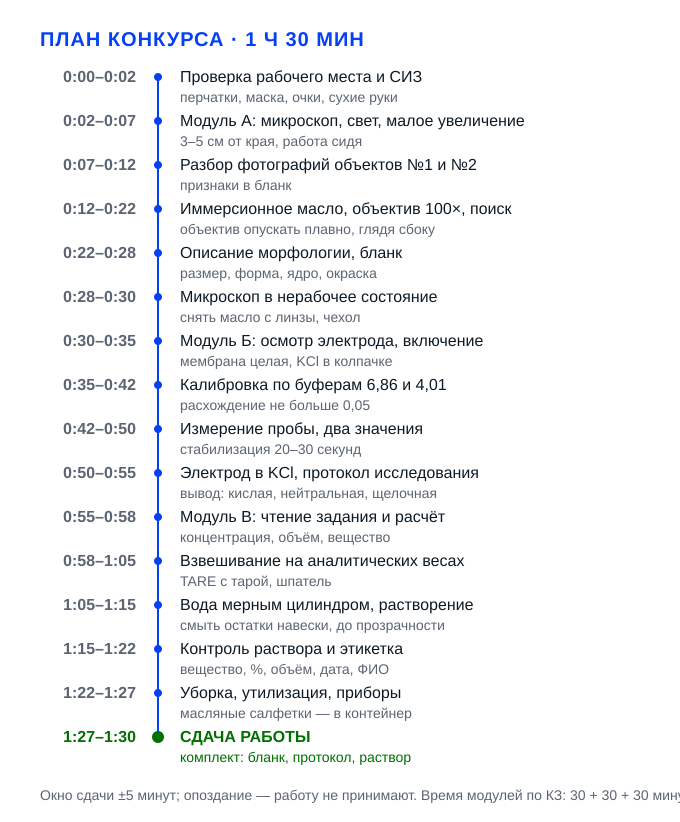
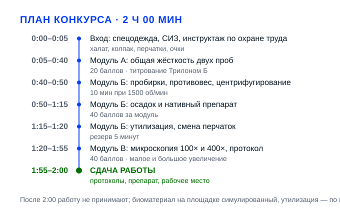
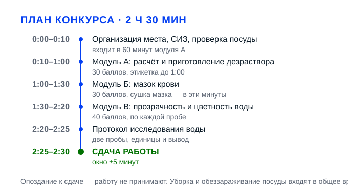

Медицинский и лабораторный анализ (Р)
Задания ниже — официальные файлы «Абилимпикс» (источник: abilympics-russia.ru), разложенные по категориям. Решения написаны по тексту задания, регламенту и критериям оценки; в них указано, что именно проверяет эксперт.
Школьник
14–16 лет, базовый уровень заданияВыдержка из официального конкурсного задания: страницы, относящиеся к категории «Школьник» (стр. 4–6 источника).
Пошаговое решение
Задание для школьников — три модуля по 30 минут, всего 1 час 30 минут и 100 баллов: микроскопическое исследование гематологического препарата с поиском объекта №1 и объекта №2 по предложенным фотографиям (40 баллов), определение водородного показателя раствора портативным pH-метром с оформлением протокола (30 баллов) и приготовление раствора процентной концентрации (30 баллов, вариативный модуль). Баллы набираются не за красивый ответ, а за последовательность: препарат установить и не раздавить, объектив опустить под контролем зрения, электрод откалибровать и промыть между растворами, навеску взять на обнулённых весах, раствор подписать. Почти все потери здесь — не от незнания, а от спешки: забытая калибровка, капля предыдущего раствора на мембране, несмытая с тары соль. Поэтому порядок работы один: сначала рабочее место и приборы, потом измерительная часть, потом оформление и уборка.

Задача 1. Провести микроскопическое исследование и найти объекты по фотографиямМодуль А · 40 баллов · 30 минут
Первый модуль — самый дорогой: 40 баллов из 100 и всего 30 минут. Нужно поднять микроскоп, найти в гематологическом препарате объект №1 и объект №2 так, как они выглядят на выданных фотографиях, и описать их морфологию. Оценивается не только находка, но и вся цепочка: спецодежда, посадка, порядок настройки света, аккуратность с иммерсионным маслом и приведение прибора в нерабочее состояние. Поэтому первые минуты уходят не на поиск клеток, а на рабочее место, и это не потеря времени, а часть баллов.
Действие 1.1. Подготовить себя и микроскоп
Шаг 1.1.1
Надеваем медицинский халат, застёгнутый на все пуговицы, шапочку или одноразовый колпак так, чтобы волосы были убраны полностью, и сменную обувь. Поверх халата — одноразовые перчатки по размеру, маску, закрывающую и нос, и рот, и защитные очки: иммерсионное масло и краска с препарата летят именно в лицо. Перед тем как взяться за шнур питания, вытираем руки насухо, потому что микроскоп включают в сеть только сухими руками.
Средства индивидуальной защиты — прямое требование раздела 6.3 конкурсного задания, а модуль А целиком стоит 40 баллов и оценивается как «испытание или оценка»: нарушение техники безопасности снимает баллы независимо от того, найдены ли объекты. Иммерсионное масло раздражает кожу, поэтому КЗ отдельно оговаривает промывание водой с мылом при попадании, и проще не допустить контакта, чем потом объяснять эксперту пятно на руке.
Проверьте себя по трём признакам: перчатки облегают пальцы и не сползают, маска закрывает и нос, и рот, очки сидят на переносице, а не на лбу. Руки сухие — тыльная сторона ладони не блестит. Халат застёгнут, рукава не висят над столом.
Классическая ошибка — надеть перчатки «потом, когда начну работать с маслом»: именно в этот момент руки уже держат препарат, и масло оказывается на коже. Вторая — включить микроскоп мокрыми руками после мытья: это нарушение электробезопасности, за которое снимают баллы и останавливают работу.
Эксперт смотрит на участника до старта, когда тот раскладывает инструменты, и в момент нанесения масла: есть ли перчатки, не касается ли он стекла пальцами без защиты. Всё это фиксируется в оценочном листе по модулю А.
Шаг 1.1.2
Ставим микроскоп на стол перед собой, немного слева, отступив от края стола 3–5 см, и садимся так, чтобы окуляры оказались на уровне глаз, а спина осталась прямой. Стул поднимаем или опускаем под свой рост, локти кладём на стол. После установки микроскоп не перемещаем: любое движение сбивает фокусировку и настройку света, а на повторную настройку в модуле всего 30 минут.
Посадку и положение прибора КЗ описывает буквально: работать сидя, микроскоп перед собой, немного слева, 3–5 см от края стола, во время работы не перемещать. Это не формальность: стоя невозможно удержать глаз у окуляра и одновременно вращать микровинт, а сдвинутый прибор приходится настраивать заново. В модуле А 40 баллов из 100, и часть из них — за правильную организацию рабочего места.
Сядьте и посмотрите: окуляр на уровне глаз, корпус прибора не свисает с края стола, до края остаётся примерно ширина двух пальцев. Обе ноги стоят на полу, спина не наклонена к прибору, плечи не подняты.
Ставят микроскоп по центру или справа, а потом тянутся к окуляру боком: изображение дрожит, фокус уходит. Вторая ошибка — поставить прибор на самый край стола: он качается, и при повороте револьвера стекло можно раздавить.
Эксперт обходит площадку в первые минуты модуля и отмечает положение прибора и посадку участника; позже, при проверке результата, смотрит, остался ли микроскоп на месте.
Шаг 1.1.3
Включаем электропитание кнопкой на основании, сухими руками, и выводим регулятор яркости примерно на середину: на полной яркости лампа греется, а глаза быстро устают. Конденсор поднимаем почти до уровня предметного столика, диафрагму открываем не полностью, окуляр оставляем на 10×. Револьвер переводим на малое увеличение, 4× или 8×, чтобы сначала найти препарат целиком, а не искать клетки вслепую.
Свет и конденсор определяют контраст: при опущенном конденсоре и прикрытой диафрагме картинка серая и плоская, и объект №1 в ней просто не узнать. Начинать с малого увеличения требует сама методика микроскопии, и эксперт по модулю А оценивает последовательность настройки, а не только конечную находку.
Посмотрите в окуляр: поле зрения должно быть ровно и ярко освещено, без тёмных краёв и пятен. Если виден край светового круга, конденсор опущен или диафрагма закрыта слишком сильно. Резкость на малом увеличении наводится макровинтом.
Включают прибор на максимальной яркости и сразу ставят 100×, минуя малое увеличение: в поле зрения пустое место, и участник тратит десять минут на поиск объекта, который лежит рядом. Вторая ошибка — крутить регулятор яркости мокрыми руками.
Эксперт следит за последовательностью: питание, свет, конденсор, малое увеличение. Нарушение порядка он отмечает как ошибку методики, даже если объект в итоге найден.
Шаг 1.1.4
Раскладываем слева от микроскопа предметные и покровные стёкла, флакон иммерсионного масла с капельницей, безворсовые салфетки, спиртовую салфетку и бланк протокола с фотографиями объектов. Проверяем, что флакон закрыт и не подтекает, а капельница даёт отдельную каплю, а не струю. Ручку и черновик кладём справа, чтобы не тянуться через прибор. Флакон с маслом ставим подальше от края стола, чтобы не смахнуть его рукавом.
Всё нужное должно быть под рукой до того, как на препарат попадёт масло: с масляной перчаткой искать салфетку по всему столу — верный способ размазать масло по окуляру. Фотографии объектов КЗ ставит в центр задания, и они должны лежать перед глазами, иначе сравнение идёт по памяти, а память в стрессе подводит.
Проверьте комплект по списку: два чистых предметных стекла, масло, салфетки, спиртовая салфетка, бланк, фотографии. На столе нет лишнего — сумок, телефона, посторонних бумаг, стаканов с водой. Отдельно проверьте, что бланк подписан вашим номером участника: бланки соседей лежат рядом и легко перепутать.
Оставляют телефон на столе: КЗ прямо запрещает устройства, передающие, принимающие и хранящие информацию, и за это работу могут остановить. Вторая ошибка — открыть флакон с маслом заранее и держать его открытым: масло густеет и собирает пыль.
Эксперт проверяет стол перед стартом модуля: нет ли запрещённых устройств, есть ли бланк и фотографии. Отсутствие бланка означает, что описывать результат будет негде.
Действие 1.2. Разобрать фотографии и спланировать поиск
Шаг 1.2.1
Кладём фотографии объектов рядом и разбираем каждую по плану: форма, размер относительно соседних клеток, цвет, наличие и форма ядра, есть ли включения. Смотрим не на всю картинку сразу, а на тот объект, который указан в задании, и проговариваем про себя: округлый, розовый, без ядра, с просветлением в центре. Так признаки запоминаются и потом легче узнаются в препарате.
Задание сформулировано как «найти при микроскопии объект №1 и объект №2 согласно предложенным фотографиям», то есть сравнение идёт по морфологии. Если признаки не выделены заранее, участник находит первое яркое пятно и описывает его, а это не тот объект, за который дают баллы по модулю А.
По каждой фотографии у вас есть три-четыре признака, записанных словами. Проверьте: по этим признакам объект можно отличить от соседних клеток, а не только «узнать, если показать». Если формулировка «розовая клетка» — признаков мало.
Смотрят на фотографию целиком и запоминают картинку, а не признаки: в препарате похожих объектов десятки, и выбор превращается в угадывание. Вторая ошибка — начать работу с микроскопом, не прочитав, что именно нужно найти.
Эксперт подходит и смотрит, лежат ли фотографии перед участником и сверяется ли он с ними во время работы, а не после неё, когда препарат уже убран. Если участник держит фотографии в стороне от микроскопа, он сверяется по памяти, и это видно по паузам.
Шаг 1.2.2
По признакам называем, что это за клетки: эритроцит — округлый, 7–8 мкм, розово-оранжевый, без ядра, с просветлением в центре; лейкоцит — крупнее, 10–12 мкм, с тёмно-фиолетовым ядром и серо-голубой цитоплазмой; тромбоцит — мелкие фиолетовые пластинки 2–3 мкм, часто группами. Если ядро разделено на доли, это нейтрофил, если ядро круглое и занимает почти всю клетку — лимфоцит.
Морфологическая характеристика — вторая половина модуля А: объект нужно не только найти, но и описать. Знание размеров и окраски задаёт порядок поиска: эритроциты видны уже на 40×, а тромбоциты ищут только на 100× с маслом, и путать эти этапы нельзя.
Проверьте себя: для каждого объекта вы можете назвать размер в микрометрах, цвет и строение ядра. Если признаки противоречат друг другу, вернитесь к фотографии и посмотрите ещё раз, а не выбирайте удобный вариант.
Путают тромбоциты с артефактами — грязью, пузырьками, обломками стекла: они похожи по размеру, но лежат не группами и не имеют внутренней структуры. Описание такого «объекта» приносит ноль баллов за морфологию.
Эксперт слушает, как участник называет объекты, и сверяет описание с эталоном; уверенное название без признаков он не засчитывает. Название объекта без признаков и без ссылки на фотографию он считает догадкой и баллы за морфологию не начисляет.
Шаг 1.2.3
В бланке протокола заранее расчерчиваем две строки — «Объект №1» и «Объект №2» — и столбцы: размер, форма, цвет, ядро, расположение. Записываем туда признаки с фотографий карандашом, чтобы потом только дополнить увиденным в микроскопе. Пишем сокращениями, которые сами понимаете, но так, чтобы через десять минут текст читался без расшифровки. Столбцы подписываем заранее, до старта модуля: на это уходит минута, а в середине работы бумага уже под масляной перчаткой.
Протокол заполняется по ходу, а не в конце: в модуле 30 минут, и на восстановление описания по памяти уходит время, которого нет. Кроме того, черновик дисциплинирует: когда признаки уже выписаны, в микроскопе вы ищете конкретную картину, а не «что-нибудь интересное».
В бланке есть обе строки и все столбцы, признаки с фотографий вписаны. Проверьте, что почерк читается и что записано именно то, что видно на фотографии, без домыслов и догадок. Проверьте также, что в бланке есть место для зарисовки: схема расположения объекта помогает вернуться к нему и подтвердить находку.
Заполняют протокол в конце модуля, когда масло уже на объективе, а препарат убран: половина деталей забыта, описание получается общим. Вторая ошибка — писать «клетка крови» без признаков: такой ответ не даёт баллов за морфологию.
Эксперт может посмотреть бланк в середине модуля и увидеть, ведётся ли запись по ходу; пустой бланк к концу работы — типичный признак того, что результат не оформлен.
Действие 1.3. Установить препарат и найти оба объекта
Шаг 1.3.1
Берём гематологический препарат за торцы предметного стекла и смотрим на просвет: мазок должен быть тонким и ровным, не выходить за пределы стекла, покровное стекло — без сколов и пузырей под ним. Проверяем маркировку: номер препарата совпадает с номером в задании. Протирать рабочую поверхность мазка нельзя, иначе сотрёте клетки; пыль убираем сухой салфеткой только с обратной стороны.
Если взять чужой или немаркированный препарат, вся дальнейшая работа теряет смысл: объект №1 и объект №2 ищут на конкретном мазке, выданном под номером. Пузырь под покровным стеклом на 100× выглядит как тёмное пятно с радужным краем и легко принимается за объект — отсюда ложные описания и потерянные баллы.
Мазок ровный и тонкий, занимает среднюю часть стекла; покровное стекло целое, пузырей нет; номер на стекле совпадает с заданием. Скол на стекле — повод сразу сообщить эксперту, а не работать «как есть».
Хватают препарат за середину, оставляя отпечатки на рабочей зоне, или протирают мазок спиртовой салфеткой: клетки смываются, и искать становится нечего. Вторая ошибка — работать с препаратом без маркировки, а потом не суметь доказать, что описан именно он.
Эксперт сверяет номер препарата с заданием до начала микроскопии; работа с чужим стеклом не оценивается, сколько бы объектов на нём ни нашли. Если номер не совпал, работа останавливается до замены стекла: эксперту важно, чтобы препарат был именно из задания.
Шаг 1.3.2
Кладём препарат покровным стеклом вверх на предметный столик и прижимаем клеммами за края, не касаясь рабочей зоны. Револьвер ставим на малое увеличение, 4×, и поднимаем столик макровинтом до упора, глядя сбоку, а не в окуляр. Затем смотрим в окуляр и медленно опускаем столик, пока не появится контур мазка. Клеммы прижимаем до лёгкого упора, без нажима: пережатое стекло лопается по краю, и трещина идёт к центру мазка.
Порядок «сначала смотрим сбоку, потом в окуляр» — единственный способ не раздавить стекло: объектив 4× короткий, и при подъёме столика он легко упирается в препарат. КЗ отдельно требует опускать объектив плавно и под контролем зрения, и это условие оценивается по модулю А наравне с находкой объектов.
Столик зафиксирован, препарат не качается при лёгком нажатии пинцетом, объектив не касается стекла. В окуляре виден ровный контур мазка, а не сплошная муть и не радужные полосы. Проверьте клеммы: стекло держится, но не выгнуто. Если препарат стоит косо, изображение уходит из фокуса при каждом повороте револьвера.
Крутят макровинт, глядя в окуляр: объектив с хрустом упирается в стекло, препарат трескается, и модуль заканчивается, не начавшись. Вторая ошибка — зажать стекло клеммой за рабочую зону и стереть часть мазка.
Эксперт находится рядом в момент установки препарата: раздавливание стекла он видит сразу и фиксирует как грубую ошибку работы с оборудованием. Отдельно он отмечает, смотрел ли участник сбоку при подъёме столика: это признак того, что приём отработан.
Шаг 1.3.3
Настраиваем свет: конденсор поднят, диафрагма прикрыта примерно наполовину, яркость средняя. Фокусируемся макровинтом на контур мазка, затем доводим микровинтом до резкости, поворачивая его не больше чем на пол-оборота за раз. Находим тонкую часть мазка — там клетки лежат в один слой, а не слипшимися комками. Если резкость не наводится, проверьте, не прикрыта ли диафрагма до предела: при узком отверстии контуры расплываются в серое пятно.
В толстой части мазка клетки накладываются друг на друга, и морфологию описать невозможно; на 100× там вообще нечего рассматривать. Умение выбрать зону просмотра — часть методики, за которую начисляют баллы по модулю А вместе с находкой объектов. Кроме того, в тонком участке видно, лежат ли клетки ровным слоем, и по этому признаку выбирают место для 100×.
Клетки видны раздельно, у них различимы контуры, нет сплошных тёмных сгустков. Резкость держится, картинка не «плывёт» при лёгком покачивании стола, поле зрения равномерно освещено. Проверьте, что при малом увеличении виден весь мазок целиком: если в поле зрения только его край, препарат сдвинут.
Ищут объекты в самом начале мазка, где он толстый: видны нагромождения, и участник описывает их как «скопление клеток». Вторая ошибка — крутить микровинт на несколько оборотов, терять фокус и искать его заново на уже другом участке.
Эксперт проверяет, в какой зоне мазка участник ведёт просмотр, и засчитывает находку только при корректной зоне: объект, найденный в толстом участке, может быть искажён.
Шаг 1.3.4
Отводим револьвер в сторону, наносим на препарат одну каплю иммерсионного масла диаметром примерно 5–6 мм и сразу переводим револьвер на объектив 100× с маркировкой oil. Опускаем объектив плавно, глядя сбоку, пока линза не коснётся капли, и только потом смотрим в окуляр, доводя резкость микровинтом. Масло должно заполнить зазор между линзой и стеклом без пузырей.
Иммерсионное масло имеет показатель преломления около 1,515 и «сшивает» оптический путь, давая на 100× разрешение, недостижимое на сухом объективе. Без масла картинка мутная, ядро лейкоцита не различить, а значит, и морфологическое описание сделать нечем. КЗ описывает этот шаг отдельно и требует не допускать попадания масла на кожу.
В окуляре резкая картинка с различимыми клетками, без радужных ореолов и тёмных пузырей. Капля под объективом сплошная, масло не вытекло за пределы покровного стекла и не попало на соседние участки столика.
Капают масло на объектив, а не на препарат, или наносят его на сухой объектив 40×: линза пачкается, изображение мутнеет, и очистка занимает остаток модуля. Вторая ошибка — опустить объектив, глядя в окуляр: стекло лопается под весом тубуса.
Эксперт смотрит именно этот переход: есть ли капля, взят ли объектив oil, опущен ли он под контролем зрения. Это ключевой момент модуля А, и он виден за две секунды.
Шаг 1.3.5
Ведём просмотр по тонкой части мазка зигзагом: два-три поля вправо, одно поле вниз, два-три влево, и так до края, не пропуская полос. Объект №1 ищем по признакам с фотографии, а найдя, запоминаем его положение относительно края мазка и соседних клеток, чтобы вернуться. Затем тем же способом ищем объект №2 и описываем оба, не переставляя препарат без нужды.
Систематический просмотр — единственная гарантия, что объект не пропущен: хаотичное движение по препарату приводит к тому, что участник дважды смотрит одно и то же поле. На поиск двух объектов в модуле отведено 30 минут вместе с описанием, и порядок экономит из них минуты четыре-пять.
Оба объекта найдены и удерживаются в поле зрения, вы можете вернуться к каждому. Если объект №2 не находится за 5–7 минут, проверьте другую зону мазка, а не крутите фокус на том же месте. Отмечайте просмотренные поля вслух или загибая палец: так видно, что вы прошли полосу до конца, а не кружите на месте.
Ищут объект, не сверяясь с фотографией, и останавливаются на первом подходящем по цвету: описание не соответствует эталону. Вторая ошибка — двигать препарат, не отпустив клемму, и сбивать его положение, а потом искать заново.
Эксперт подходит и просит показать найденный объект; умение вернуться к нему подтверждает, что находка реальная, а не случайное совпадение по цвету. При проверке он просит описать путь к объекту: «два поля вправо от края» звучит убедительнее, чем «где-то здесь».
Действие 1.4. Описать объекты и привести микроскоп в нерабочее состояние
Шаг 1.4.1
Описываем объект №1 по пяти признакам: размер относительно эритроцита, форма, цвет и интенсивность окраски, наличие и форма ядра, наличие включений. Пишем короткими фразами, например: «округлый, 7–8 мкм, розовый, ядро отсутствует, центр светлее периферии». Каждый признак подтверждаем взглядом в окуляр, а не по памяти. Записываем именно то, что видно на 100×, и не переносим в описание признаки с фотографии, если они не подтверждаются в препарате.
Морфологическая характеристика — то, что проверяет эксперт по модулю А: находка без описания даёт часть баллов, описание с признаками — полную. Размер в микрометрах и характер окраски объективны, по ним видно, действительно ли участник смотрел в микроскоп или описывал картинку по памяти.
В описании есть все пять признаков и хотя бы один численный параметр. Прочитайте описание и представьте клетку: если по тексту её нельзя отличить от соседней, признаков мало и описание надо дополнить.
Пишут «клетка крови, розовая» — такое описание подходит к любому объекту и не засчитывается. Вторая ошибка — оценивать размер «на глаз» без сравнения с эритроцитом, диаметр которого известен и как раз служит линейкой.
Эксперт сверяет описание с эталонной характеристикой и смотрит, совпадают ли признаки; расхождение по двум и более признакам снижает балл за модуль. Если описание содержит признак, которого на препарате нет, он задаёт уточняющий вопрос: откуда взялся этот признак.
Шаг 1.4.2
Тем же способом описываем объект №2, начиная с того признака, который отличает его от первого: форма ядра, размер, характер цитоплазмы. Если это лейкоцит, указываем, разделено ядро на доли или нет, и какую часть клетки оно занимает. Запись делаем сразу, пока объект в поле зрения и препарат не сдвинут. Разницу формулируем через сравнение: «ядро сегментировано, в отличие от объекта №1, цитоплазма светлее, размер больше на треть».
Второй объект часто оказывается парным к первому — например, другой вид лейкоцита, и различие между ними и есть суть задания. КЗ требует найти оба объекта согласно фотографиям, поэтому описание должно показывать, что участник видит разницу, а не описывает одно и то же дважды.
В двух описаниях есть хотя бы два различающихся признака. Если описания совпадают почти дословно, вернитесь к микроскопу: скорее всего, вы смотрите на тот же тип клеток, а второй объект ещё не найден.
Списывают первое описание во вторую строку, меняя пару слов: эксперт видит идентичные характеристики и не засчитывает второй объект. Вторая ошибка — описать объект по фотографии, не найдя его в препарате.
Эксперт сравнивает два описания между собой: совпадение признаков при разных объектах — типичный признак подмены, и он это отмечает. Второй объект он ищет в описании по отличительному признаку: если его нет, значит, участник описал то же самое.
Шаг 1.4.3
Сверяем описание с фотографиями ещё раз, пункт за пунктом, и дописываем пропущенное: цвет цитоплазмы, расположение клеток, фон мазка. В бланке указываем номер препарата, увеличение, при котором велось описание, и наличие иммерсионного масла. Подписываем бланк и ставим время. Если бланк требует зарисовки, рисуем контур клетки и ядра простым карандашом, без художественных деталей: важны пропорции, а не красота.
Оформленный протокол — требование к результату модуля А наравне с находкой объектов. Номер препарата и увеличение показывают, что описание относится к выданному материалу, а не к посторонней картинке; без этих данных результат невозможно проверить и защитить.
В бланке заполнены обе строки, номер препарата, увеличение 100× и подпись. Прочитайте вслух: описание соответствует фотографии, а не общим представлениям о том, как выглядит кровь. Проверьте, что время и номер препарата написаны разборчиво: по ним эксперт находит вашу работу в журнале выдачи.
Сдают бланк без номера препарата и увеличения: эксперт не может связать описание с выданным стеклом, и баллы за оформление теряются. Вторая ошибка — оставить в чистовике черновые пометки и зачёркивания.
Эксперт проверяет бланк после модуля, сопоставляя номер препарата с журналом выдачи и оценивая полноту описания. Он сравнивает номер препарата в бланке с журналом и смотрит, совпадает ли увеличение с тем, на котором реально работал участник.
Шаг 1.4.4
Поднимаем объектив, снимаем препарат, убираем масло с линзы 100× безворсовой салфеткой, при необходимости смоченной спиртовой, и сразу закрываем объектив колпачком. Револьвер ставим на малое увеличение, яркость на минимум, выключаем питание и накрываем микроскоп чехлом. Использованные салфетки и перчатки — в контейнер для отходов, препарат возвращаем эксперту.
КЗ прямо требует привести микроскоп в нерабочее состояние, и это отдельный пункт оценки: масло, оставленное на линзе, за несколько минут забивает оптику и портит прибор следующему участнику. Возврат препарата и правильная утилизация — часть санитарных требований раздела 6 конкурсного задания.
Объектив 100× чистый, без масляного блеска; револьвер на 4×; питание выключено; чехол на месте; препарат сдан, отходы в контейнере. На столе не осталось капель масла и жирных пятен. Проверьте и колпачок: он должен быть надет на объектив, а не лежать в лотке — иначе пыль садится на линзу за ночь.
Оставляют масло на объективе и убирают прибор «как есть»: линза мутнеет, и следующий участник получает нерезкую картинку. Вторая ошибка — протирать линзу халатом или бумажной салфеткой: остаются ворсинки и царапины на просветлении.
Эксперт осматривает микроскоп после модуля: чистота объектива и положение револьвера — видимые признаки того, что прибор приведён в нерабочее состояние.
Задача 2. Определить водородный показатель раствора портативным pH-метромМодуль Б · 30 баллов · 30 минут
Второй модуль — измерительный: 30 баллов и 30 минут на то, чтобы подготовить портативный pH-метр, проверить его по буферным растворам, измерить пробу и оформить протокол исследования. Ошибка здесь не выглядит как поломка: прибор просто показывает другое число, и внешне всё в порядке. Поэтому баллы дают за цепочку «осмотр электрода — калибровка — промывка — стабилизация показания — повторное измерение — обработка электрода», а протокол с калибровкой и выводом о среде считают отдельным результатом модуля.
Действие 2.1. Оборудовать место и подготовить прибор
Шаг 2.1.1
Раскладываем на столе портативный pH-метр в футляре, стакан на 50–100 мл для пробы, промывалку с дистиллированной водой, фильтровальную бумагу, стаканчик для отработанной воды, бланк протокола и инструкцию к прибору. Пробу ставим так, чтобы её не задеть локтем, а прибор — так, чтобы шнур не тянулся через стол. Сразу надеваем перчатки: электрод контактирует с раствором, а руки — с электродом.
Модуль Б стоит 30 баллов, и результат по КЗ — оформленный протокол исследования, поэтому бланк должен лежать на столе с первой минуты. Порядок экономит время: на всё измерение с калибровкой отведено 30 минут, и поиск бумаги в середине работы стоит дороже, чем аккуратная раскладка в начале.
На столе есть всё из списка, промывалка полна, бумага сухая, бланк перед глазами. Пробу видно, она не загорожена прибором, шнур не пересекает рабочую зону и не свисает с края. Проверьте, что бланк лежит вне зоны брызг: стакан с пробой стоит рядом, и одно неловкое движение заливает протокол.
Начинают измерение, не приготовив дистиллированную воду для промывки: электрод переносят из буфера в пробу с каплей предыдущего раствора, и показание сдвигается. Вторая ошибка — поставить пробу на край стола, где её легко опрокинуть локтем.
Эксперт оценивает организацию рабочего места по модулю Б: наличие промывалки, бумаги и бланка он видит сразу и отмечает в листе, не задавая вопросов. Если бланк появился только в конце модуля, он делает вывод, что результат записывался по памяти.
Шаг 2.1.2
Снимаем защитный колпачок и осматриваем стеклянную мембрану электрода на просвет: она должна быть целой, без трещин, сколов и высохшего налёта. Проверяем, что внутри колпачка остался раствор KCl, а на корпусе нет подтёков. Если на мембране видна плёнка или пузырь, аккуратно встряхиваем электрод как термометр, держа за корпус, а не за стекло. Колпачок не кладём на стол открытой стороной вниз: в него набивается пыль, которая потом попадает на мембрану.
Повреждённая мембрана даёт плавающее показание, которое невозможно отличить от реального pH раствора, а пузырь воздуха на мембране — самая частая причина «странных» цифр. КЗ требует подготовить прибор к работе согласно инструкции, и осмотр входит в эту подготовку так же, как калибровка.
Мембрана целая и влажная, пузырей под ней нет, колпачок снят и лежит рядом, а не потерян. Корпус сухой, кнопка не западает и щёлкает с первого нажатия. Проверьте и то, что в колпачке есть жидкость: сухой колпачок означает, что прибор хранили неправильно и мембрану надо отмачивать.
Работают с высохшим электродом, который сутки лежал без колпачка: мембрана обезвожена, и показания уходят на 0,5–1 единицы. Вторая ошибка — потерять колпачок: электрод придётся хранить неправильно, и прибор испортится к следующему модулю.
Эксперт проверяет, снят ли колпачок и осмотрен ли электрод до включения; работу без осмотра он отмечает как нарушение методики. Если участник сразу включает прибор, не глядя на электрод, он отмечает пропущенный этап подготовки.
Шаг 2.1.3
Включаем прибор кратковременным нажатием на кнопку и смотрим на табло: должны появиться цифры, а не мигающий значок разряженной батареи. Даём прибору 20–30 секунд на выход в режим, держим его в руке или ставим в подставку так, чтобы электрод не касался стола. Если прибор не включается, меняем элемент питания или зовём эксперта, а не трясём и не стучим по корпусу.
КЗ описывает включение буквально: кратковременное нажатие на кнопку. Долгое удержание на многих моделях переводит прибор в режим настройки, и участник вместо измерения начинает менять параметры. Прогрев нужен, чтобы первое показание не оказалось случайным и не пришлось переделывать калибровку.
На табло устойчивые цифры, значок батареи полный, прибор реагирует на нажатие и не гаснет сам. Электрод в воздухе, не касается ни стола, ни раствора. Проверьте также, что прибор не показывает «Err» или «---»: такие знаки означают, что электрод не в растворе или мембрана повреждена.
Держат кнопку, пока прибор не пикнет и не уйдёт в меню калибровки: вместо измерения участник правит настройки и теряет минуты. Вторая ошибка — включать прибор с электродом, уже погружённым в неизвестный раствор.
Эксперт смотрит на момент включения: кратковременное нажатие и проверка табло — признак того, что участник знает прибор, а не действует наугад. Долгое удержание кнопки он видит по тому, что прибор уходит в меню, и отмечает это как ошибку обращения с оборудованием.
Действие 2.2. Проверить прибор по буферным растворам
Шаг 2.2.1
Опускаем электрод в дистиллированную воду на 2–3 см и покачиваем 3–5 секунд, затем вынимаем, стряхиваем капли и промокаем мембрану фильтровальной бумагой. Промокаем, а не трём: трение снимает гелевый слой и добавляет заряд. Между каждым раствором процедуру повторяем заново, а воду в промывалке меняем, если она помутнела. Промывалку держим рядом со стаканом с пробой, чтобы не носить электрод через весь стол и не капать на бланк.
Капля предыдущего раствора на мембране — это перенос ионов, который сдвигает результат: после буфера 4,01 в пробе с pH 7 прибор покажет заниженное значение. Промывка между растворами — обязательный элемент методики, и эксперт по модулю Б оценивает именно аккуратность работы с электродом.
После промывки на мембране нет видимых капель, бумага влажная только в месте касания. Вода в промывалке прозрачная, без мути от перенесённого раствора. Проверьте, что после промывки вода в промывалке не пахнет и не окрашена: по цвету видно, что в неё попал буфер с индикатором.
Промывают электрод в той же воде, куда уже окунали его после буфера: концентрация в промывалке растёт, и промывка перестаёт работать. Вторая ошибка — тереть мембрану бумагой, царапая стекло и сдирая гель.
Эксперт смотрит, промывается ли электрод между растворами и меняется ли вода; это видно по последовательности действий без единого вопроса. Он смотрит на порядок: промывка, промокание, погружение. Пропуск промывки перед пробой он считает грубой ошибкой.
Шаг 2.2.2
Погружаем электрод в буферный раствор с pH 6,86, слегка помешиваем и ждём стабилизации 20–30 секунд, затем нажимаем калибровку так, как описано в инструкции к прибору. Промываем и повторяем с буфером 4,01, если проба кислая, или 9,18, если щелочная. После каждого раствора электрод промываем и промокаем насухо. Буферные растворы наливаем в отдельные чистые стаканчики по 20–30 мл, а не окунаем электрод в общий флакон: так буфер не загрязняется.
Портативный pH-метр без калибровки врёт на 0,2–0,5 единицы, а результат модуля Б — конкретное число в протоколе. Калибровка по двум точкам, охватывающим область пробы, даёт правильную наклонную характеристику; по одной точке прибор знает только смещение и ошибается тем сильнее, чем дальше проба от буфера.
Прибор показывает значение буфера с расхождением не больше 0,05 после калибровки. Если после калибровки на 6,86 прибор снова показывает 7,3 в том же буфере, калибровка не принята и её надо повторить. Сравните показание с надписью на флаконе, а не с ожидаемым числом: буфер 6,86 иногда путают с 7,00.
Калибруют по одному буферу и сразу измеряют пробу, pH которой лежит за пределами диапазона: ошибка на краю шкалы максимальна. Вторая ошибка — не промыть электрод между буферами и «откалибровать» их смесь.
Эксперт проверяет, какими буферами пользовался участник и держится ли показание в буфере после калибровки; расхождение больше 0,1 он считает незавершённой калибровкой.
Шаг 2.2.3
Записываем в бланк дату, значения буферов, показания прибора после калибровки и расхождение. Если расхождение больше 0,1, калибровку повторяем, а не «запоминаем поправку». Время калибровки тоже фиксируем: по нему видно, что измерение сделано на свежей настройке, а не на приборе, который полчаса лежал включённым. Если прибор не принимает калибровку, проверяем, тот ли буфер выбран в меню: при неверном значении прибор откалибруется по чужой точке.
Протокол исследования — форма результата модуля Б, и запись о калибровке подтверждает, что числу можно верить. Без этой строки эксперт видит только цифру и не может оценить, получена ли она правильным способом, а именно это и стоит 30 баллов. Кроме того, по времени калибровки видно, что она сделана до измерения, а не задним числом.
В бланке есть буферы, показания, расхождение и время. Расхождение не превышает 0,1; если превышает, рядом должна стоять запись о повторной калибровке с новым результатом. Проверьте, что записанные буферы совпадают с теми флаконами, которые стоят на столе: расхождение выдаёт ошибку.
Не записывают калибровку вовсе: при проверке протокола невозможно понять, откалиброван прибор или нет, и баллы за методику теряются. Вторая ошибка — вписать «идеальные» значения, не глядя на табло. Третья ошибка — перепутать строки калибровки и измерения в бланке.
Эксперт сверяет записанные значения калибровки с фактическим поведением прибора, если подходит в момент работы, и с расхождением, которое участник сам указал.
Действие 2.3. Измерить пробу
Шаг 2.3.1
Наливаем исследуемый раствор в чистый сухой стакан на 50–100 мл, заполняя его примерно на две трети, чтобы электрод погрузился на 2–3 см и не касался дна. Стакан ставим на ровную поверхность и проверяем, что на стенках нет капель предыдущей пробы. Если проба холодная или горячая, даём ей постоять 5 минут при комнатной температуре. Стакан не вытираем изнутри бумагой: ворсинки всплывают и оседают на мембране, искажая показание.
pH зависит от температуры: разница в 10 градусов даёт сдвиг до 0,1–0,2 единицы, а прибор без термокомпенсации считает по своей внутренней температуре. Объём пробы должен покрывать мембрану с запасом, иначе электрод «считает» воздух и плёнку на стенке стакана.
Уровень раствора выше мембраны на 2–3 см, дна электрод не касается, стенки стакана чистые. Проба прозрачная, без взвеси, которая осядет на мембране и испортит следующие измерения. Проверьте, что стакан стоит не на краю и не на шнуре прибора: при покачивании стола проба не должна опрокинуться.
Измеряют в стакане, где осталась капля воды от промывки: проба разбавлена, и pH сдвинут в сторону нейтрального. Вторая ошибка — погрузить электрод так, что он упирается в дно, и повредить мембрану. Третья ошибка — налить пробу так, что мембрана касается стенки стакана.
Эксперт смотрит глубину погружения и чистоту стакана; касание дна он отмечает как ошибку работы с прибором, а не как случайность. Если участник наливает пробу в грязный стакан, он отмечает это как нарушение подготовки пробы.
Шаг 2.3.2
Погружаем электрод в раствор вертикально, не касаясь стенок и дна, и слегка покачиваем стакан круговыми движениями 2–3 секунды, чтобы раствор омыл мембрану. Дальше держим прибор неподвижно: движение электрода в растворе создаёт электрический шум и «пляшущие» цифры. Руку с прибором опираем на стол, а не держим на весу. Если показание продолжает ползти, вынимаем электрод, проверяем мембрану на пузырь и погружаем снова, а не крутим прибор.
Мембрана измеряет потенциал в тонком слое у поверхности, и без омывания у неё образуется застойная зона с другим pH. При этом постоянное перемешивание электродом даёт наведённые помехи. КЗ требует дождаться показания на табло, то есть устойчивой цифры, а не первого мелькнувшего числа.
Цифры на табло перестали «скакать» и держатся в пределах 0,05. Электрод в растворе, мембрана полностью покрыта, пузыря на ней нет, стакан стоит устойчиво. Проверьте, что стакан не нагревается от руки: если держать его ладонью, проба прогревается и показание уходит.
Крутят электродом в растворе, как ложкой: показание колеблется, и участник записывает первое попавшееся число. Вторая ошибка — держать прибор на весу, из-за чего мембрана то выходит из раствора, то касается дна.
Эксперт смотрит на устойчивость показания и на то, дождался ли участник стабилизации; запись мгновенного значения он видит по поведению прибора. Покачивание стакана он отличает от болтания электрода: первое допустимо, второе даёт шум.
Шаг 2.3.3
Ждём стабилизации 20–30 секунд, пока последние цифры не перестанут меняться, и записываем значение с точностью, которую даёт прибор: обычно одна цифра после запятой. Рядом фиксируем температуру пробы, если прибор её показывает, и время измерения. Не округляем в уме: пишем то, что на табло. Если прибор показывает две цифры после запятой, записываем обе и не округляем: так видно, что значение снято с табло, а не придумано.
Точность портативного pH-метра обычно плюс-минус 0,1, и запись «7» вместо «6,9» уже искажает результат. КЗ требует записать полученный результат исследования, и запись должна быть сделана в момент измерения, а не восстановлена по памяти через десять минут, когда прибор уже выключен.
В бланке стоит число с одной цифрой после запятой, время и температура. Значение совпадает с тем, что показывает прибор в момент записи, а не с ожидаемым по заданию. Проверьте, что рядом с числом стоит единица измерения: pH безразмерный, но температура — в градусах Цельсия.
Записывают значение сразу после погружения, пока прибор ещё «думает»: цифра занижена или завышена на 0,2–0,3. Вторая ошибка — округлять до целого, теряя десятые, которые как раз и определяют среду. Третья ошибка — записать значение с табло другого прибора, стоящего рядом.
Эксперт может подойти в момент снятия показания и сравнить запись с табло; расхождение — признак выдуманного результата, и это снимает баллы по всему модулю.
Шаг 2.3.4
Вынимаем электрод, промываем, промокаем и повторяем измерение в той же пробе ещё раз, налив свежую порцию или перемешав раствор. Сравниваем два значения: расхождение до 0,1 считаем нормальным, больше — повод проверить калибровку и повторить. В бланк вписываем оба значения и среднее. Если проба одна и та же, второй раз наливаем её в чистый стакан: остатки на стенках первого дают завышенное значение.
Два измерения — простейший контроль воспроизводимости, и он ловит большинство ошибок: пузырь на мембране, недостаточную стабилизацию, грязный стакан. Для протокола исследования это ещё и доказательство того, что результат не случаен, а повторяем. При расхождении больше 0,1 поводом может быть и сама проба: неоднородный раствор требует перемешивания.
Два значения отличаются не больше чем на 0,1, среднее посчитано верно. Если расхождение больше, в бланке должна быть запись о третьем измерении и объяснение причины. Проверьте среднее арифметическое на бумаге или в уме дважды: ошибка в десятых здесь встречается чаще, чем ошибка прибора.
Делают одно измерение и считают его достаточным: любая случайная ошибка уходит в протокол без проверки. Вторая ошибка — усреднять значения, полученные в разных условиях, например до и после промывки электрода.
Эксперт смотрит на протокол: два значения и среднее — признак аккуратной работы, одно значение он отмечает как недостаточный контроль. Если в бланке два одинаковых значения с точностью до сотых, он спрашивает, как получено второе.
Действие 2.4. Обработать электрод и оформить протокол
Шаг 2.4.1
Промываем электрод дистиллированной водой, стряхиваем капли, промокаем мембрану и надеваем защитный колпачок с раствором KCl. Если колпачок сухой, наливаем в него немного раствора хранения, а не водопроводной воды. Корпус прибора протираем сухой салфеткой, чтобы на нём не осталось капель пробы. Колпачок надеваем до щелчка и проверяем, что он держится: если он слетит в футляре, мембрана высохнет за ночь.
КЗ требует после измерения обработать электрод согласно инструкции: сухое хранение выводит мембрану из строя за несколько часов, а капли пробы на корпусе — это перенос раствора на следующий модуль. Обработка электрода входит в оценку модуля Б вместе с самим измерением и стоит в инструкции отдельным пунктом.
Колпачок надет, внутри виден раствор, мембрана не касается дна колпачка. Корпус сухой, на столе нет капель, промывалка закрыта и стоит на месте. Проверьте, что в колпачке нет пузыря воздуха у мембраны: пузырь оставляет участок стекла сухим.
Надевают сухой колпачок: к следующему модулю мембрана подсыхает, и прибор врёт. Вторая ошибка — оставить электрод в стакане с пробой, решив «пусть постоит»: мембрана забивается ионами пробы и отмывается только специальным раствором.
Эксперт проверяет состояние электрода после модуля: влажный колпачок и сухой корпус — видимый результат правильной обработки. Он обращает внимание, промыт ли электрод перед хранением: остатки пробы на мембране портят её за сутки.
Шаг 2.4.2
Выключаем pH-метр повторным кратковременным нажатием на кнопку и убеждаемся, что табло погасло. Убираем прибор в футляр и ставим на место, промывную воду сливаем в раковину или в стакан для отходов, как указано на площадке. Пробу не выливаем в раковину, если по инструкции её сливают в отведённую ёмкость. Футляр закрываем на защёлку и убираем в отведённое место, а не оставляем на столе рядом с пробой.
Повторное нажатие — прямое требование КЗ, и оно нужно не для формальности: оставленный включённым прибор садится, и следующий участник получает разряженную батарею и невозможность откалиброваться. Правильная утилизация пробы входит в санитарные требования раздела 6 конкурсного задания.
Табло погасло, прибор в футляре на своём месте, промывалка пуста и вымыта, проба слита туда, куда указано. На столе нет капель и мокрых салфеток. Проверьте, что на столе не осталось стакана с пробой: по инструкции площадки проба сдаётся или сливается сразу.
Оставляют прибор включённым «чтобы не сбилась калибровка»: батарея садится, а калибровка всё равно сбрасывается при выключении. Вторая ошибка — вылить пробу в раковину, если по инструкции площадки это запрещено.
Эксперт осматривает рабочее место после модуля Б: выключенный прибор и чистая зона — часть оценки организации работы. Он смотрит, выключен ли прибор: горящий экран в конце модуля он отмечает как незавершённую работу.
Шаг 2.4.3
Заполняем протокол исследования целиком: номер пробы, дату и время, температуру, значения калибровки, два результата измерения и среднее, вывод о среде — кислая при pH ниже 7, нейтральная при 7, щелочная выше 7. Пишем вывод словами, а не только цифрой, и подписываем бланк. Если бланк двусторонний, заполняем обе стороны и ставим подпись на каждой: незаполненный оборот считается пропуском.
Результат модуля Б по КЗ — оформленный протокол исследования, то есть баллы начисляются за документ, а не за цифру на табло. Вывод о среде показывает, что участник понимает смысл показателя: pH 5,5 — это кислая среда, и запись «5,5» без вывода оставляет половину работы невыполненной.
В протоколе заполнены все строки, вывод соответствует числу, подпись стоит. Прочитайте протокол как чужой документ: понятно ли из него, что измеряли, чем и с каким результатом. Проверьте, что вывод записан словами и не противоречит числу: «слабокислая» при pH 5,5 допустимо, «щелочная» — нет.
Оставляют пустыми строки температуры и калибровки: протокол выглядит незаконченным, и баллы снимаются за оформление. Вторая ошибка — написать «нейтральная» при pH 8,4, перепутав направление шкалы. Третья ошибка — подписать бланк, не прочитав его.
Эксперт проверяет протокол после сдачи: полноту строк, соответствие вывода значению и наличие подписи. Он проверяет и то, что протокол заполнен одним почерком и без исправлений поверх старого текста.
Задача 3. Приготовить раствор процентной концентрацииМодуль В · 30 баллов · 30 минут
Третий модуль вариативный: по КЗ могут меняться концентрация, объём и растворённое вещество, поэтому первым делом читают своё задание, а не повторяют домашнюю заготовку. Дальше — расчёт с проверкой вторым способом, взвешивание на аналитических весах с обнулённой тарой, отмеривание воды мерным цилиндром, растворение до полной прозрачности и этикетка. Результат модуля — готовый раствор процентной концентрации, и 30 баллов дают именно за него вместе с правильным расчётом и оформлением посуды.
Действие 3.1. Прочитать задание и рассчитать навеску
Шаг 3.1.1
Читаем задание дважды: какое вещество, какая концентрация в процентах, какой объём или масса раствора нужны. Выписываем на черновик три числа — концентрацию, объём и плотность, если она указана, — и подчёркиваем, что именно требуется сдать: раствор в ёмкости с этикеткой. Цифры могут отличаться от привычных, потому что модуль В вариативный. Задание читаем в том виде, в каком оно выдано на площадке: распечатка может отличаться от того, что участник видел дома.
По КЗ в вариативном модуле могут меняться концентрация, объём раствора и растворённое вещество согласно инфраструктурному листу. Участник, который дома готовил 5 % раствор на 100 мл, по привычке повторяет расчёт и получает не тот результат, который требуется на площадке.
На черновике выписаны все три параметра и единицы измерения. Вы можете своими словами сказать, что нужно сдать и в какой посуде, не подглядывая в задание. Проверьте, что выписаны единицы: проценты по массе и проценты по объёму — разные величины и считаются по-разному.
Готовят раствор по памяти, не перечитав задание: концентрация или объём не совпадают с требуемыми, и модуль оценивается в ноль независимо от аккуратности. Вторая ошибка — перепутать проценты по массе и по объёму.
Эксперт сверяет готовый раствор с заданием; ошибка в исходных числах видна сразу по этикетке и по объёму в посуде. Если участник начинает взвешивать, не прочитав задание, эксперт видит это по тому, что расчёт появляется позже навески.
Шаг 3.1.2
Считаем по формуле: масса вещества равна концентрации в процентах, умноженной на массу раствора и делённой на сто. Для 100 г 5 % раствора это 5 г соли и 95 г воды, что при плотности воды 1 г/мл даёт 95 мл. Расчёт записываем полностью, с подстановкой чисел, а не только ответ. Проверяем, в чём задана концентрация: если в процентах по массе, воду считаем в граммах и только потом переводим в миллилитры.
Расчёт — первый оцениваемый элемент модуля В: если масса соли или объём воды неверны, дальше можно идеально взвесить и перемешать, но раствор будет не той концентрации. Полная запись нужна и для проверки: по ней видно, где именно ошибка, если число не сошлось с ожидаемым.
Сумма массы соли и массы воды равна массе раствора. Проверьте обратным счётом: разделите массу соли на массу раствора и умножьте на сто — должны получить заданную концентрацию. Проверьте, что ответ записан с единицами и что сумма сходится: 5 г и 95 мл дают 100 г раствора, а не 100 мл.
Считают воду как объём всего раствора, то есть берут 100 мл воды на 5 г соли: концентрация получается 4,76 % вместо 5 %. Вторая ошибка — округлять массу соли до целых граммов, когда задание требует десятых.
Эксперт смотрит черновик расчёта: правильная формула и подстановка дают баллы даже при небольшой погрешности взвешивания. Он смотрит на формулу, а не на ответ: правильная подстановка при арифметической ошибке всё равно даёт часть баллов.
Шаг 3.1.3
Пересчитываем результат вторым способом: через массу растворителя, через пропорцию или по обратной формуле. Сравниваем два ответа и, если они расходятся, ищем ошибку в единицах измерения. Записываем итог в бланк: масса соли, объём воды, общая масса раствора. Считаем на бумаге, а не в уме: при работе с процентами ошибка в запятой встречается чаще, чем ошибка в самой формуле.
Одна и та же ошибка редко повторяется при двух разных способах счёта, поэтому перекрёстная проверка ловит её до того, как испорчен раствор. Время на это — минута, а переделывать взвешивание и растворение придётся пять-семь минут из тридцати. Кроме того, записанный расчёт защищает при споре о результате: по нему видно, откуда взялись числа.
Два расчёта дали одинаковые числа, единицы совпадают: граммы для соли, миллилитры для воды. Итог записан в бланк до начала взвешивания, а не после. Проверьте, что оба расчёта сделаны по разным формулам, а не повторяют один и тот же ход: иначе проверка ничего не ловит.
Проверяют «на глаз» и оставляют ошибку в десять раз, например 0,5 г вместо 5 г. Вторая ошибка — начать взвешивание, не записав расчёт: потом не с чем сравнить фактическую массу и нечем обосновать результат.
Эксперт может попросить показать расчёт; аккуратная запись с проверкой говорит о понимании, а не о заученной формуле. Если в черновике одна строка с ответом без подстановки, он считает расчёт невыполненным.
Действие 3.2. Взвесить навеску на аналитических весах
Шаг 3.2.1
Ставим аналитические весы на ровную неподвижную поверхность, проверяем пузырьковый уровень и при необходимости подкручиваем ножки. Включаем, ждём выхода на ноль и даём прогреться 10–15 минут, если весы только что включены. Проверяем, что дверцы закрываются, а чашка чистая и сухая. Рядом с весами не должно быть сквозняка от кондиционера или открытой двери: поток воздуха качает чашку и сбивает ноль.
Аналитические весы измеряют до тысячных долей грамма, и наклон корпуса в пару градусов даёт систематическую ошибку. КЗ требует изучить инструкцию к весам и провести взвешивание: работа на непрогретых весах — типичная причина расхождения в 0,05 г, которое потом видно в концентрации.
Уровень в норме, на табло нули, чашка чистая, дверцы закрываются без скрипа. При лёгком толчке стола показания не «пляшут» и возвращаются к нулю. Проверьте, что дверцы не задевают чашку при закрывании и что на стекле нет капель и пыли.
Взвешивают сразу после включения: электроника ещё не вышла на режим, и ноль уплывает на 0,02–0,05 г. Вторая ошибка — ставить весы на шатающийся стол рядом с мешалкой или центрифугой, которая передаёт вибрацию.
Эксперт смотрит, проверен ли уровень и прогреты ли весы; на непрогретых весах результат взвешивания он считает недостоверным и просит повторить. Он смотрит и на то, закрыты ли дверцы при отсчёте: открытая дверца даёт плавающие показания.
Шаг 3.2.2
Ставим на чашку чистую сухую тару — чашку Петри, стаканчик или бюкс — и нажимаем кнопку обнуления, TARE. Убеждаемся, что табло показывает ровно нули с тарой на чашке. Тара должна быть сухой: капля воды на дне весит около 0,05 г и уходит прямо в навеску. Если тара не помещается под дверцы, берём другую, а не оставляем дверцу приоткрытой: открытая дверца сбивает отсчёт.
КЗ прямо запрещает насыпать вещества непосредственно на чашку весов: реактив рассыпается, чашка корродирует, а масса тары потом не учитывается. Обнуление с тарой на чашке — единственный способ получить массу именно вещества, а не вещества вместе с посудой.
Табло показывает нули при таре на чашке. Уберите тару — весы покажут её массу со знаком минус; это подтверждает, что обнуление сработало именно на этой таре. Проверьте, что на таре нет остатков прошлого реактива: их масса входит в навеску и меняет концентрацию.
Обнуляют пустую чашку, а потом ставят тару: масса тары прибавляется к навеске, и соли оказывается больше на несколько граммов. Вторая ошибка — использовать мокрую или грязную тару с остатками прошлого реактива.
Эксперт следит, обнулены ли весы с тарой; насыпание на голую чашку он останавливает сразу, потому что это прямое нарушение требований раздела 6. Если участник обнуляет пустую чашку, эксперт видит это по тому, что тара ставится после нажатия TARE.
Шаг 3.2.3
Берём соль фарфоровой ложкой или шпателем и добавляем в тару небольшими порциями, закрывая дверцы перед каждым отсчётом. Сыпем с края ложки, а не из её середины, чтобы не проскочить нужную массу: досыпать легче, чем убирать. Останавливаемся, когда до расчётной массы остаётся 0,01–0,02 г, и добавляем по крупинке. Порцию берём шпателем из банки, не касаясь ею стенок тары: иначе на шпателе остаётся соль, и навеска уходит.
КЗ требует брать сухие реактивы только фарфоровыми ложками и шпателями, а просыпавшийся реактив не возвращать в банку: он загрязнён и отсырел. Точность важна потому, что 0,1 г на 100 г раствора — это уже 0,1 % концентрации, то есть заметное отклонение от задания.
На табло расчётная масса с расхождением не больше 0,02 г. Соль не рассыпана на чашке весов, дверцы закрыты, показания стабильны и не меняются от движения рук рядом. Проверьте, что на чашке весов вокруг тары нет просыпанных кристаллов: они тоже весят и сбивают отсчёт.
Сыплют прямо из банки на глаз: навеска уходит на 0,3–0,5 г, и раствор получается крепче заданного. Вторая ошибка — ссыпать просыпавшееся обратно в банку: реактив загрязняется и отсыревает для следующих участников.
Эксперт подходит в момент взвешивания: работа шпателем, закрытые дверцы и точность навески — прямые критерии модуля В. Если участник сыплет из банки, эксперт останавливает работу: так навеску не получить и посуду не сохранить.
Шаг 3.2.4
Записываем фактическую массу соли с табло в бланк, не округляя. Снимаем тару с навеской, аккуратно переносим её на стол, закрываем весы и выключаем, если они больше не нужны. Если навеска отличается от расчётной больше чем на 0,05 г, пересчитываем объём воды под фактическую массу, а не оставляем как есть. Массу записываем в ту же строку, где стоит расчётная: рядом видно расхождение и понятно, надо ли пересчитывать воду.
Фактическая масса — исходное число для честного расчёта: пересчитав воду, участник получает именно ту концентрацию, которая задана. Запись в бланк нужна и для проверки результата: по ней видно, что раствор приготовлен из отвешенного, а не из «примерно столько».
В бланке стоит масса с тем числом знаков, которое даёт прибор. Масса совпадает с показанием весов, а объём воды пересчитан под неё, если было расхождение. Проверьте, что навеска не рассыпана при переносе: если часть соли осталась на столе, фактическая масса уже другая.
Забывают записать фактическую массу и потом указывают в протоколе расчётную: расхождение с реальностью остаётся незамеченным. Вторая ошибка — оставить навеску открытой, пока ищут воду: соль тянет влагу из воздуха и тяжелеет.
Эксперт сверяет записанную массу с показанием весов, если подходит в этот момент; выдуманное число он отличает по несоответствию с навеской. Он сравнивает запись в бланке с показанием весов, если подходит, и с массой раствора в конце модуля.
Действие 3.3. Отмерить воду и растворить соль
Шаг 3.3.1
Отмеряем дистиллированную воду мерным цилиндром на 100 мл с ценой деления 1 мл: наливаем до нужного объёма, держа цилиндр на уровне глаз, и смотрим на нижний край мениска. Последние капли добавляем пипеткой, а не на глаз. Воду берём дистиллированную, а не из-под крана: соли жёсткости изменят и массу, и концентрацию. Цилиндр ставим на ровную поверхность, а не держим в руке: на весу уровень не поймать, и мениск уходит.
Мениск в цилиндре, который рассматривают сверху, даёт ошибку до 2–3 мл, а это уже 3 % объёма. Дистиллированная вода нужна потому, что в водопроводной содержатся растворённые соли, и масса раствора перестаёт быть суммой соли и воды, которую вы считали.
Нижний край мениска стоит на нужном делении, цилиндр не качается, на стенках нет капель выше уровня. Объём совпадает с расчётным и записан в бланк. Проверьте, что на стенках цилиндра выше уровня нет капель: они стекут вниз и добавят объём уже после отсчёта.
Наливают воду «до метки» на глаз, наклонив цилиндр: объём уходит на 5 мл, и концентрация снижается. Вторая ошибка — использовать воду из-под крана, считая, что «разницы нет». Третья ошибка — мерить воду тем же стаканом, в котором будет раствор: на стенках остаётся соль.
Эксперт смотрит, чем отмеряют воду и на каком уровне глаз находится мениск; мерный стакан вместо цилиндра он отмечает как нарушение методики. Он смотрит, какой посудой отмеряют воду: цилиндр с делениями — признак того, что объём важен.
Шаг 3.3.2
Пересыпаем навеску в химический стакан на 150–200 мл через сухую воронку или по стенке, стараясь не поднимать пыль. Остатки соли с тары смываем небольшим количеством отмеренной воды из промывалки, чтобы вся навеска попала в раствор. Затем добавляем остальную воду, оставив 10–15 мл на обмыв стенок. Если воронки нет, ссыпаем по стенке стакана, наклонённого над листом бумаги: просыпанное не возвращаем в банку.
Часть навески всегда остаётся на стенках тары и воронки, и если её не смыть, реальная концентрация окажется ниже расчётной. Ссыпать через воронку, а не бросать комком, нужно для того, чтобы соль растворялась быстрее и не прилипала ко дну стакана. Кроме того, смывание остатков даёт точную навеску без повторного взвешивания.
Тара пустая, на стенках воронки нет кристаллов, вся соль в стакане. Уровень воды пока ниже расчётного — остаток пойдёт на обмыв стенок и доведение объёма. Проверьте, что воронка сухая: мокрая воронка задерживает соль на стенках и часть навески не доходит до раствора.
Высыпают соль в стакан, стоящий на весах, и расплёскивают воду: часть навески теряется, а весы намокают. Вторая ошибка — не смыть остатки с тары, теряя 0,1–0,3 г соли. Третья ошибка — смывать остатки водой сверх отмеренного объёма, не учитывая это в расчёте.
Эксперт смотрит, смыты ли остатки навески: это видно по пустой таре и чистым стенкам воронки без кристаллов. Он смотрит, смыта ли тара, и сверяет объём воды с расчётом: лишняя вода видна по уровню.
Шаг 3.3.3
Перемешиваем раствор стеклянной палочкой с резиновым наконечником круговыми движениями, не касаясь дна, 2–3 минуты, пока кристаллы не исчезнут полностью. Палочку держим наклонно и не вынимаем из жидкости, чтобы не терять капли на стенках. Если раствор холодный, ставим стакан в тёплую воду не выше 40 градусов. Если соль растворяется медленно, добавляем перемешивание, а не новую порцию воды: объём уже посчитан.
Полное растворение — условие однородности: нерастворённые кристаллы означают, что концентрация в верхних слоях ниже расчётной, и при отборе пробы результат будет плавать. Нагревать выше 40 градусов не стоит: вода испаряется, и концентрация растёт сама по себе, без всякой ошибки участника.
Раствор прозрачный, на дне и на стенках нет кристаллов, при перемешивании не слышно шороха. Посмотрите на просвет: взвеси и мути нет, свет проходит ровно. Проверьте, что на палочке нет кристаллов: они остаются на стекле и выносятся из раствора.
Мешают 10–15 секунд и считают, что растворилось: часть соли остаётся на дне, и концентрация ниже заданной. Вторая ошибка — греть раствор до кипения для ускорения, теряя воду и получая пересыщенный раствор.
Эксперт проверяет раствор на просвет и на наличие осадка; мутный раствор или кристаллы на дне снижают балл по модулю В. Он смотрит на дно стакана на просвет: кристаллы видны как блестящие точки, и это прямой признак недоделанной работы.
Шаг 3.3.4
Доливаем оставшуюся воду до расчётного объёма, обмывая стенки стакана, и ещё раз перемешиваем 30 секунд. Ставим стакан на стол и даём постоять минуту, чтобы пузырьки воздуха вышли: с ними объём кажется больше, чем есть. Проверяем общий объём по метке на стакане или переливанием в цилиндр. Уровень проверяем по метке на стакане, держа его на уровне глаз: наклон искажает отсчёт так же, как в цилиндре.
Стенки стакана после перемешивания покрыты раствором, и его нужно вернуть в общий объём, иначе часть вещества остаётся на стекле. Пузырьки воздуха дают ложное ощущение объёма и мешают оценить прозрачность при проверке результата. Кроме того, после доведения объёма раствор становится однородным по всей высоте, и проба из любого слоя покажет одну концентрацию.
Объём соответствует расчётному с точностью до 1–2 мл, раствор однородный, пузырьков нет. Масса раствора, если проверить на весах, близка к сумме соли и воды. Проверьте, что метка на стакане соответствует нужному объёму: посуда бывает разной, и метка «100» не всегда 100 мл.
Недоливают воду, забыв про остаток, и получают раствор крепче заданного на 1–2 %. Вторая ошибка — доливать воду в стакан, стоящий на весах, и сбивать показания. Третья ошибка — доводить объём, не перемешав раствор: внизу концентрация выше, вверху ниже.
Эксперт проверяет объём и однородность перед оценкой; недолив или перелив он видит по метке и по массе посуды с раствором. Он проверяет объём переливанием в цилиндр, если сомневается в метке: расхождение больше 5 мл видно сразу.
Действие 3.4. Проверить раствор, подписать и убрать место
Шаг 3.4.1
Проверяем готовый раствор по трём признакам: прозрачность на просвет, отсутствие кристаллов и осадка, соответствие объёма заданию. Если есть ареометр или рефрактометр, измеряем плотность и сравниваем с табличной для своей концентрации. Записываем проверку в бланк. Если прибора для плотности нет, ориентируемся на прозрачность и объём, но обязательно записываем, чем проверяли: «визуально» — тоже результат.
Модуль В оценивается по результату — готовому раствору процентной концентрации, и проверка своими руками ловит ошибку до сдачи. Плотность 5 % раствора хлорида натрия около 1,034 г/мл, и расхождение больше 0,005 говорит о том, что концентрация не та. Проверка занимает две минуты и спасает весь модуль: переделать раствор после сдачи уже нельзя.
Раствор прозрачный, без осадка, объём совпадает, плотность в пределах 0,005 от табличной. Все три признака записаны в бланк, а не проверены «в уме». Проверьте, что раствор не пахнет посторонним: запах растворителя или мыла означает, что посуда была плохо вымыта.
Не проверяют раствор вовсе и сдают первое, что получилось: осадок или неверный объём обнаруживает эксперт, и балл теряется целиком. Вторая ошибка — измерять плотность, не дождавшись выхода пузырьков воздуха.
Эксперт проверяет прозрачность и объём при приёмке работы, а при наличии прибора — плотность; это прямая оценка результата модуля В. Он наливает раствор в цилиндр и смотрит на просвет: муть и осадок видны сразу, без приборов.
Шаг 3.4.2
Заполняем этикетку: название вещества и его формула, концентрация в процентах, объём или масса раствора, дата приготовления, фамилия и инициалы участника. Клеим этикетку на сухую стенку стакана или колбы, не закрывая метку и не заклеивая горловину. Пишем разборчиво шариковой ручкой, а не карандашом. Если этикетка готова заранее, вписываем концентрацию после взвешивания: фактическая масса может отличаться от расчётной.
Раствор без этикетки в лаборатории считается неизвестным и не может быть использован, поэтому в оценке модуля В оформление посуды идёт вместе с содержимым. Дата и фамилия нужны для прослеживаемости: по ним видно, чей это раствор и когда он приготовлен.
На этикетке есть все пять пунктов, она приклеена ровно и не закрывает метку. Прочитайте её вслух: содержимое понятно человеку, который не видел, как вы работали. Проверьте, что этикетка не закрывает метку и горловину: иначе объём не проверить, а раствор не налить.
Пишут только «5 % раствор» без вещества и даты: эксперт не может идентифицировать раствор, и оформление не засчитывается. Вторая ошибка — клеить этикетку на мокрую стенку, отчего она отклеивается через минуту.
Эксперт читает этикетку при приёмке: полнота данных — отдельный пункт оценки модуля В. Он читает этикетку вслух и сверяет концентрацию с заданием: расхождение в цифре он видит раньше, чем в содержимом.
Шаг 3.4.3
Сливаем остатки раствора в отведённую ёмкость, а не в раковину, если так указано в инструкции площадки. Моем посуду водопроводной водой, ополаскиваем дистиллированной и ставим сушиться вверх дном. Убираем весы под чехол, цилиндр и палочку на место, протираем стол. Стакан после раствора ополаскиваем дважды: соль кристаллизуется на стенках и при высыхании оставляет белый налёт.
КЗ требует по окончании работ привести рабочее место в порядок и убрать оборудование в отведённое место. Слитый в раковину концентрированный раствор — нарушение санитарных требований, а грязная посуда на столе мешает следующему участнику и видна эксперту.
Стол сухой и пустой, посуда вымыта и сушится, весы закрыты, отходы в ёмкости. На столе не осталось кристаллов соли и капель раствора. Проверьте, что весы выключены и накрыты, а разновесы или гирьки на месте: их отсутствие обнаруживается при следующем взвешивании.
Оставляют посуду с остатками раствора «на потом»: соль высыхает коркой, и отмыть её в отведённое время уже не получится. Вторая ошибка — вылить раствор в раковину при наличии прямого запрета. Третья ошибка — оставить весы включёнными на весь перерыв.
Эксперт осматривает место после сдачи: чистота стола и убранное оборудование входят в оценку организации работы. Он смотрит на посуду после мытья: разводы и налёт означают, что её ополоснули только водопроводной водой.
Задача 4. Сдать работу и освободить площадкуВсе модули · сдача работы
Последние минуты конкурса решают не меньше первых: 100 баллов складываются из 40 за микроскопию, 30 за pH и 30 за раствор, и часть этих баллов снимают за незаполненные строки протокола, неподписанный раствор и беспорядок на столе. Сдача идёт в отведённое окно, комплект должен быть собран и разложен, приборы выключены, отходы утилизированы. Эта задача короткая, но именно на ней теряют то, что заработали за полтора часа.
Действие 4.1. Собрать и проверить комплект
Шаг 4.1.1
Раскладываем на столе все три результата: бланк микроскопии с описанием двух объектов, протокол pH-метра и раствор с этикеткой. Проверяем по каждому пункту: заполнены ли номер препарата, увеличение, калибровка, температура, концентрация и подписи. Отмечаем карандашом то, что нужно дописать, и дописываем сразу, не откладывая на «после доклада». Если какая-то строка не заполнена, дописываем её до доклада: после приёмки бланк уже не вернут.
Общий результат конкурса — 100 баллов, и каждая незаполненная строка протокола снимает баллы из своего модуля. Сверка перед сдачей стоит трёх минут и ловит именно те пропуски, которые после приёмки исправить невозможно: эксперт оценивает то, что ему передали.
В каждом документе заполнены все обязательные строки, стоят подписи, числа не противоречат друг другу. Раствор подписан, препарат возвращён, бланки не перепутаны между модулями. Проверьте, что номер участника стоит на всех трёх документах: по нему работу находят при подсчёте баллов.
Сдают бланк с пустой строкой калибровки или без номера препарата: баллы за оформление теряются, хотя работа выполнена. Вторая ошибка — перепутать бланки между модулями и подписать чужой результат. Третья ошибка — сдавать бланк с чужим номером, взятым по ошибке.
Эксперт принимает работу по комплекту: наличие всех трёх результатов он проверяет до оценки содержания. Он сверяет комплект по списку и отмечает отсутствие любого из трёх результатов как невыполненный модуль.
Шаг 4.1.2
Ставим раствор с этикеткой вперёд, рядом кладём протокол pH и бланк микроскопии, каждый со своим номером участника. Посуду с раствором ставим так, чтобы этикетка была видна и не заслонялась, а бланки не лежали под мокрым стаканом. Ничего лишнего в зону сдачи не кладём: ни перчаток, ни салфеток, ни черновиков. Проверяем, что стакан с раствором стоит устойчиво: он не должен качаться при передаче эксперту.
Порядок в зоне сдачи — это скорость приёмки и отсутствие споров: эксперт видит весь комплект сразу и не ищет, что к чему относится. Мокрый стакан на бланке уничтожает запись, а восстановить её после модуля невозможно. Кроме того, аккуратно разложенный комплект экономит время приёмки, а его в конце конкурса немного.
Комплект лежит ровно, этикетка читается, бланки сухие и подписаны. Ничего не заслоняет раствор и не придавлено посудой. Проверьте, что все три результата подписаны и что раствор закрыт или накрыт, если это требуется: открытая посуда с раствором на площадке считается нарушением.
Кладут бланки под стакан с раствором: вода конденсируется, чернила расплываются, и результат нечитаем. Вторая ошибка — оставить раствор без этикетки в общей зоне, где его невозможно опознать. Третья ошибка — положить бланки под перчатки или салфетки, где их не видно.
Эксперт видит комплект целиком и оценивает его по составу и аккуратности; перепутанные или подмокшие документы он отмечает. Он проверяет, лежит ли раствор отдельно от документов: случайно пролитый раствор уничтожает протокол.
Действие 4.2. Доложить, утилизировать отходы и освободить место
Шаг 4.2.1
Подходим к эксперту и докладываем коротко: «Участник номер такой-то, модули А, Б и В выполнены, результаты на столе». Отвечаем на вопросы по существу, показываем найденные объекты и раствор, если попросят. Не начинаем оправдываться и не рассказываем, что не получилось, если об этом не спрашивают. Говорим ровно, не торопясь и не перебивая: эксперт записывает время сдачи по своим часам, а не по вашим.
Спокойный и точный доклад — часть коммуникации, которую эксперт видит вживую, и он же запускает приёмку. КЗ требует выполнить задание за определённое время, поэтому сдача идёт в отведённое окно, а не тогда, когда участник посчитает работу законченной.
Эксперт принял комплект и подтвердил, что работа сдана. Время сдачи зафиксировано и укладывается в окно до конца конкурса. Проверьте, что вы назвали свой номер участника: без него эксперт не сможет связать комплект с вашей фамилией в протоколе.
Молча стоят у стола, ожидая, что подойдут: время идёт, окно сдачи закрывается, и работу могут не принять. Вторая ошибка — начинать объяснять свои ошибки, которых никто не спрашивал, и тратить на это последние минуты.
Эксперт фиксирует время сдачи и выслушивает доклад; уверенность и краткость он отмечает в оценочном листе. Он оценивает и то, как участник держится: спокойный доклад без суеты он отмечает отдельно.
Шаг 4.2.2
Сливаем остатки растворов в ёмкость для отходов, использованные перчатки, салфетки и масляные тампоны кладём в контейнер для медицинских отходов, если он предусмотрен площадкой. Стекло с препаратом возвращаем эксперту, а не оставляем на столе. Микроскоп накрываем чехлом, весы закрываем. Контейнер для отходов закрываем после того, как положили последнюю салфетку: открытым он остаётся до конца уборки.
КЗ требует проводить утилизацию отработанного биоматериала и средств индивидуальной защиты, и это условие оценивается наравне с результатом. Иммерсионное масло и контакт с препаратом делают салфетки отходом, который нельзя выбрасывать в обычную урну.
Отходы в предназначенных ёмкостях, препарат сдан, приборы закрыты, на столе нет салфеток и капель. Промывалка вымыта и пуста. Проверьте, что препарат сдан и записан в журнал, если журнал ведётся: без записи стекло считается утерянным.
Выбрасывают масляные салфетки в общую урну: нарушение санитарных требований, которое эксперт видит и фиксирует. Вторая ошибка — оставить препарат на столе, где он может быть испорчен или утерян. Третья ошибка — ссыпать соль из тары обратно в банку.
Эксперт проверяет утилизацию и состояние приборов после сдачи; раздельные ёмкости для отходов — прямой признак соблюдения требований. Он смотрит на ёмкости: отходы должны быть разделены так, как требует инструкция площадки.
Шаг 4.2.3
Отходим на шаг и осматриваем рабочее место целиком: стол, пол под столом, полку с посудой. Убираем всё, что осталось, поправляем стул, выключаем местное освещение, если оно отдельное. Только после этого забираем личные вещи и покидаем площадку с разрешения эксперта. Проверяем и полку с посудой: перевёрнутые стаканы должны стоять ровно, а пролитое — вытерто, даже если оно не ваше.
КЗ требует по окончании работ привести рабочее место в порядок и только с разрешения эксперта организованно покинуть площадку. Осмотр со стороны ловит то, что не видно вблизи: каплю на полу, забытую салфетку, открытую банку с реактивом. Кроме того, осмотр места занимает меньше минуты, а замечание за беспорядок остаётся в оценочном листе.
Стол пустой, пол чистый, приборы выключены и закрыты, стул на месте, личные вещи собраны. Место выглядит так, как будто на нём ещё никто не работал. Проверьте, что микроскоп накрыт, весы закрыты, а шнуры не лежат на полу под ногами.
Уходят сразу после доклада, оставив открытую банку с солью и мокрый стол: замечание получает участник, а не следующий. Вторая ошибка — покинуть площадку до разрешения эксперта. Третья ошибка — оставить личные вещи на столе и уйти за ними после сдачи.
Эксперт осматривает место после ухода участника; порядок и выключенные приборы он отмечает в оценочном листе. Он обходит место после каждого участника и отмечает то, что осталось от предыдущего: это тоже влияет на оценку.
Студент
учащиеся колледжей и техникумовВыдержка из официального конкурсного задания: страницы, относящиеся к категории «Студент» (стр. 4–6 источника).
Пошаговое решение
Студенческая категория «Медицинского и лабораторного анализа» — это два часа и сто баллов на трёх модулях по сорок минут: жёсткость водопроводной воды по ГОСТ 31954-2012 тест-системой «Общая жесткость» ЗАО «Крисмас+» (20 баллов), нативный препарат осадка мочи (40) и микроскопия общеклинического препарата и документация (40). Самый дорогой модуль — не самый сложный, а тот, где ошибка уничтожает препарат. Исход решает работа со временем: две пробы укладываются в тридцать пять минут у того, кто не ищет идеальный голубой дважды, а препарат к 1:20 готов у того, кто ставит противовес до пуска центрифуги. Второе — дисциплина документа: баллы модулей А и В ставят по протоколам, и цифра, не перенесённая из черновика, не существует. Третье — средства защиты и санитарный режим: перчатки, маска, очки и фартук проверяются в каждом модуле, биоматериал симулированный, но утилизация — по схеме.

Задача 1. Войти в работу: спецодежда, СИЗ и оборудованное местоМодули А–В · сквозные требования · 2 ч 00 мин
До первого титрования нужно сделать три вещи, за которые отдельные баллы прямо не дают, но без которых не дадут и остальные: надеть полный комплект спецодежды и средств защиты, развести рабочее место на зоны и убедиться, что приборы живые. Три модуля идут подряд по сорок минут, перерыва на переоборудование нет, поэтому место готовится один раз и сразу под все три: титрование, центрифугу и микроскоп. Санитарные требования и охрана труда проверяются в каждом модуле, а не отдельным пунктом в конце, поэтому спешка на входе обходится дороже всего.
Действие 1.1. Надеть спецодежду и средства защиты
Шаг 1.1.1
Надеваем медицинский халат или костюм по ГОСТ Р 58396-2019, застёгиваем на все пуговицы и надеваем колпак или одноразовую шапочку так, чтобы волосы были убраны полностью — и спереди, и на затылке. Обувь закрытая, медицинская, на нескользящей подошве. Рукава подворачиваем до середины предплечья: они не должны касаться ни бюретки, ни предметного стекла, ни тем более открытой пробы. Часы и браслеты снимаем заранее, в раздевалке, потому что на рабочем месте их некуда положить.
Халат, колпак и медицинская обувь вынесены в конкурсном задании в отдельный раздел как обязательный комплект участника, и проверяют его до старта. Логика не в формальности: в модуле А вы работаете с аммиачным буфером, в модуле Б — с биоматериалом, и открытые предплечья со свисающим рукавом означают прямой контакт с тем, что на кожу попадать не должно. Неряшливая спецодежда читается экспертом как неготовность работать в лаборатории вообще.
Проверьте себя по трём признакам: волос не видно ни спереди, ни сзади; халат застёгнут и не расходится, когда вы наклоняетесь к окуляру; обувь закрытая и сухая. Руки свободны от украшений — это видно и без зеркала, достаточно посмотреть на запястья.
Самая частая ошибка — надеть колпак на макушку и оставить затылок открытым: спереди всё аккуратно, а сзади волосы выбиваются, и замечание делают уже на старте. Вторая — прийти в удобной открытой обуви или в свитере, рассчитывая, что халат всё закроет: на площадке это фиксируется как нарушение требований охраны труда.
Эксперт осматривает участника до старта, сверяя комплект спецодежды с перечнем, а дальше отмечает, остаётся ли халат чистым и застёгнутым к концу каждого модуля.
Шаг 1.1.2
Поверх халата надеваем одноразовые нитриловые перчатки, медицинскую маску и защитные очки, а на модуль Б добавляем клеёнчатый фартук. Перчатки натягиваем так, чтобы манжета закрывала край рукава, и проверяем целостность: растягиваем каждый палец — микротрещина на указательном обнаруживается только так. Маску ставим по спинке носа с прижатием носовой пластины, очки надеваем поверх маски, иначе они запотевают от выдоха и вы их снимете в самый неподходящий момент.
Раздел охраны труда прямо требует использовать средства индивидуальной защиты — перчатки, маски, фартуки, очки — во время работы, и это относится ко всем трём модулям без исключения. В модуле А аммиачный буфер раздражает слизистые, в модуле Б вы имеете дело с биоматериалом, который на площадке симулирован, но обрабатывается по полной схеме. Нарушение этого требования — не минус балл за аккуратность, а основание остановить работу.
Проверяем три вещи: перчатки без проколов и натянуты на манжеты, маска закрывает нос и рот и не сползает при разговоре, очки не запотевают. Если очки запотели — подтяните носовую пластину маски, а не снимайте очки: без них работа с реактивами идёт вслепую.
Работать в маске на подбородке — типичная картина к середине второго модуля: маска сползает, участник поправляет её перчаткой, и перчатка становится грязной. Вторая ошибка — снимать перчатки и надевать их заново, не меняя: внешняя сторона уже контактировала с биоматериалом, и вся защита обнуляется.
Эксперт смотрит, когда именно надеваются и меняются перчатки: до контакта с пробой и после слива надосадочной жидкости, а не когда станет неудобно. Отдельно отмечает, надеваются ли перчатки до контакта с пробой, а не после.
Шаг 1.1.3
Снимаем кольца, часы, браслеты и длинные серьги, телефон убираем в сумку или в карман верхней одежды, которая остаётся вне рабочей зоны. Ногти коротко подстрижены, без лака и без покрытия: под гелем и под ногтевым краем остаётся то, что не смывается обычным мытьём. Длинные волосы дополнительно закалываем под колпак — одного колпака хватает не всегда, и это нормально.
Устройства, передающие, принимающие и хранящие информацию, на площадке запрещены, и телефон в кармане халата читается как попытка снимать задание. Украшения — вопрос не дисциплины, а методики: кольцо под перчаткой натягивает резину и рвёт её именно на пальце, а камень или звено браслета могут попасть в пробу, которую вы титруете, и тогда 20 баллов модуля А уходят на посторонний предмет.
Осмотрите руки: украшений нет, ногти короткие, покрытия нет, перчатки сидят ровно. Проверьте, что телефон не лежит ни на столе, ни в кармане халата, и что он не мешает вам наклоняться к микроскопу. Колпак держится при наклоне головы.
Оставить обручальное кольцо, потому что оно не мешает, — самая частая ошибка: на лабораторной площадке она замечается сразу, потому что перчатка натягивается поверх металла. Вторая — положить телефон на стол рядом с бюреткой, чтобы следить за временем.
Эксперт проверяет руки и карманы на входе, а дальше смотрит, не появился ли телефон на столе в процессе работы. Если кольцо всё же осталось, он просит снять его до старта, и это единственный случай, когда замечание делают без снижения балла.
Действие 1.2. Развести рабочее место на зоны и проверить приборы
Шаг 1.2.1
Разбиваем стол на три зоны и до конца конкурса их не меняем: слева штатив с бюреткой, мерная склянка на 100 мл и растворы для модуля А, в центре центрифужные пробирки с подставкой и предметные стёкла для модуля Б, справа микроскоп, салфетки и бланки протоколов. Микроскоп ставим перед собой, немного слева, в 3–5 сантиметрах от края стола, чтобы за окулярами сидеть прямо. Штатив с бюреткой поднимаем на уровень глаз: отсчёт по мениску ведут только снизу вверх.
Модуль А стоит 20 баллов, модуль Б — 40, модуль В — 40, и все три идут подряд без перерыва на переоборудование: переставлять штатив в середине работы означает терять минуты из сорока, отведённых на модуль. Зоны нужны ещё и потому, что перчатки переносят капли: если растворы для титрования стоят рядом с предметными стёклами, капля буфера окажется на стекле, и препарат будет испорчен до микроскопии.
Прогоните взглядом последовательность: подойти к штативу, потом к центрифуге, потом сесть к микроскопу. Если для любой операции нужно что-то переложить с места на место, зоны разведены неправильно. Проверьте также, что до розетки и до контейнера для отходов можно дойти, не обходя стол.
Свалить всё в центр стола — ошибка почти универсальная: мерная склянка оказывается под локтем, бюретка задевает штатив с пробирками. Вторая — поставить микроскоп у самого края: за окулярами приходится наклоняться, и через двадцать минут шея перестаёт держать голову ровно, а от этого страдает наводка на резкость.
Эксперт обходит места в первые минуты и оценивает, готова ли зона к работе: по расположению приборов видно, работал ли участник с такой методикой раньше.
Шаг 1.2.2
Пересчитываем посуду под каждый модуль: две мерные склянки на 100 мл, стакан или коническая колба для титрования, две центрифужные пробирки на 10–12 мл с плотными крышками, предметные стёкла с матовым краем, покровные 18×18 мм, пипетки на 1 и 5 мл. Проверяем каждую склянку на скол по венчику и на трещину на просвет: посуда с трещиной на метке уже не мерная. Читаем этикетки трёх растворов — аммиачного буфера, индикатора и Трилона Б — и убеждаемся, что концентрация титранта написана именно здесь.
Расчёт жёсткости держится на одной цифре — молярной концентрации эквивалента Трилона Б: ошибётесь в ней, и все дальнейшие вычисления уйдут не в разы, а на порядок. Скол на венчике означает, что при перемешивании часть пробы выплеснется, объём изменится, и результат будет занижен. Посуда и реактивы — это и есть те 20 баллов модуля А, которые набираются ещё до первой капли титранта.
Проверьте: на каждой склянке читается метка, сколов нет, крышка пробирки закрывается плотно; на этикетке титранта видны концентрация и дата приготовления; индикатор не высох и не слипся на стенке флакона. Концентрация и объём пробы запишите в черновик сразу — по ним пойдёт расчёт.
Взять первую попавшуюся склянку, не заметив, что она на 50 мл: проба вдвое меньше, титрант льёте по привычке, и результат выходит ровно вдвое выше. Вторая ошибка — взять титрант из набора с другой концентрацией и считать по памяти, а не по этикетке.
Эксперт сверяет набор на столе с инфраструктурным листом и отдельно смотрит, читал ли участник этикетку титранта перед титрованием. Если набор не совпадает с листом, он ждёт, что участник заметит это сам.
Шаг 1.2.3
Включаем микроскоп сухими руками: проверяем шнур на перегибы, вставляем вилку в розетку, включаем тумблер и убавляем яркость до минимума перед первым включением. Центрифугу проверяем без пробирок: закрываем крышку, включаем на минимальной скорости, слушаем шум и смотрим, не уходит ли корпус с места. На роторе пересчитываем гнёзда и убеждаемся, что все заглушки на месте: от этого зависит, сколько пробирок ставить и как их уравновешивать.
В конкурсном задании есть отдельное требование — о всех неполадках в работе приборов сообщать эксперту, и обнаружить неполадку до того, как в центрифуге окажется ваша проба, принципиально иначе, чем после. Микроскоп в модуле В стоит 40 баллов, а его неисправная подсветка обнаруживается ровно в тот момент, когда препарат уже готов и время модуля идёт.
Микроскоп: лампа загорается, яркость регулируется, тубус двигается плавно, объективы переключаются с щелчком. Центрифуга: разгон идёт ровно, без стука и вибрации, при открытой крышке пуск не срабатывает. Если что-то не так — фиксируем и идём к эксперту до старта, а не в середине модуля.
Включить центрифугу с одной пробиркой на пробу: ротор идёт вразнос, прибор останавливают до конца конкурса, и проба модуля Б сгорает вместе с 40 баллами. Вторая ошибка — включить микроскоп мокрыми руками после мытья посуды, что для приборов с сетевой вилкой прямо опасно.
Эксперт фиксирует, сообщил ли участник о неполадке до начала работы, и отличает это от попытки дожать неисправный прибор молча. Молчаливая возня с прибором в первые минуты читается как неподготовленность.
Действие 1.3. Распределить 120 минут и вести записи
Шаг 1.3.1
Раскладываем два часа на три окна по сорок минут и прикидываем внутри каждого: в модуле А пять минут на оборудование и маркировку, двадцать пять на титрование двух проб, десять на расчёт и протокол. В модуле Б десять минут идёт центрифугирование само, и это время уходит на подготовку стёкол; после него двадцать минут на осадок и препарат и десять на уборку. В модуле В двадцать пять минут на микроскопию и пятнадцать на протокол и обработку прибора.
Три модуля по сорок минут — жёсткая сетка: время не переносится из модуля в модуль, и минута, потерянная в первом, вычитается из последнего. Опытные участники тратят на модуль А не больше тридцати пяти минут и оставляют запас: расчёт и заполнение протокола всегда идут медленнее, чем кажется, особенно когда эксперт стоит рядом и ждёт цифру.
Проверяйте себя по трём контрольным точкам: к 0:40 в руках протокол модуля А с двумя результатами, к 1:20 готовый препарат под покровным стеклом, к 1:55 заполненный протокол модуля В. Ориентируйтесь на них, а не на ощущение, что вы ещё успеваете.
Застрять на первой пробе, титруя до идеального голубого: цвет в точке эквивалентности держится секунды, и попытка получить его дважды съедает десять минут из сорока. Вторая ошибка — начать с протокола, пока свежо в памяти, и оставить препарат на конец, когда времени уже нет.
Эксперт следит за сменой модулей по времени и отмечает, переходит ли участник к следующему этапу по плану или догоняет график в спешке. Отставание на смене модулей он отмечает в листе, даже если работа сделана хорошо.
Шаг 1.3.2
Заводим черновик: лист, на котором сверху вниз идут модуль А с двумя пробами, объёмом титранта по каждой и расчётом, модуль Б с режимом центрифугирования и объёмом осадка, модуль В с увеличением, найденными элементами и заключением. Подписываем пробы сразу: номер по сопроводительному листу, дата, время отбора, фамилия — простым карандашом по матовому краю стекла, а не маркером, который смывается спиртом.
Модуль В оценивается по оформленному результату микроскопического исследования, а модуль А — по оформленному протоколу, то есть баллы ставят за документ, а не за проделанную работу. Восстановить по памяти, сколько миллилитров ушло на вторую пробу, через сорок минут невозможно: цифры похожи, а расхождение в 0,1 мл — это уже 0,05 ммоль/дм³, и по сходимости двух проб эксперт судит о достоверности.
К концу каждого модуля в черновике есть все цифры, которые войдут в протокол, и ни одна не записана словами примерно столько же. Номер на пробирке совпадает с номером в черновике, а записи по полям зрения сделаны цифрами.
Писать на пробирке маркером по стеклу: надпись стирается о перчатку и о штатив, две пробы становятся неразличимы, и вместе с ними теряется смысл параллельных титрований. Вторая ошибка — запоминать, чтобы записать потом: к концу модуля помнят только последнюю цифру.
Эксперт смотрит на черновик в конце модуля и сверяет его с протоколом: расхождение между ними — признак того, что результат дописан задним числом. Особенно его интересуют цифры, которых нет в протоколе.
Шаг 1.3.3
Перед стартом подходим к эксперту и коротко докладываем: место оборудовано, приборы проверены, набор реактивов сверен, готов начинать. Если чего-то не хватает или прибор ведёт себя странно, говорим сразу и конкретно: нет покровных стёкол 18 мм, есть только 24, или центрифуга гудит на разгоне. Не начинаем работу как-нибудь, рассчитывая обойтись тем, что есть.
Замена расходников и допуск к работе идут только через эксперта, и после старта вопрос решается хуже, чем до него. Кроме того, спокойный и точный доклад — та часть оценки, где видно, умеет ли участник формулировать проблему: эксперт отмечает и организацию работы, и коммуникацию.
Факт обращения зафиксирован, ответ получен, и вы точно знаете, чего ждать: замену, разрешение работать с тем, что есть, или объяснение, что так и должно быть. До старта у вас остаётся время перестроить план, если замены не будет.
Молчать о нехватке и надеяться, что хватит: чаще всего не хватает именно на последнем шаге, когда переиграть уже нельзя. Вторая ошибка — начать спорить и требовать вместо того, чтобы назвать проблему и предложить решение.
Эксперт отмечает, обратился ли участник до старта, и по формулировке видит, понимает ли он, что именно ему нужно. Если участник не подошёл, эксперт подходит сам и спрашивает, всё ли готово, — и это уже потеря темпа на старте.
Задача 2. Определить общую жёсткость двух проб водыМодуль А · 20 баллов · 40 минут
Модуль А — комплексонометрическое титрование по ГОСТ 31954-2012 с тест-системой «Общая жёсткость» производства ЗАО «Крисмас+»: две пробы водопроводной воды, аммиачный буфер, индикатор и Трилон Б до перехода винно-красной окраски в ярко-голубую. Стоит он 20 баллов из 100, то есть меньше, чем два других модуля, и именно поэтому его нельзя растягивать: сорок минут истекают на расчёте, если титрование съело тридцать пять. Результат модуля — оформленный протокол исследования, поэтому последние десять минут обязательно уходят на документ, а не на повторное титрование.
Действие 2.1. Принять пробы и подготовить их к титрованию
Шаг 2.1.1
Берём две пробы водопроводной воды, поступившие на санитарно-гигиенический контроль, и сверяем их с сопроводительным листом: номер пробы, место отбора, время, объём. Ставим пробирки в штатив, а не на стол, и проверяем, что объёма хватает налить 100 мл в мерную склянку без долива из другой ёмкости. Если проба пришла холодной, даём ей постоять 10–15 минут при комнатной температуре: титровать ледяную воду нельзя, точка эквивалентности уезжает.
Задание сформулировано как определение жёсткости воды, поступившей на анализ из централизованных источников водоснабжения, при санитарно-гигиеническом контроле двух различных проб, — значит, каждая проба оценивается отдельно, и перепутать их означает потерять половину модуля. Температура влияет на скорость реакции с индикатором: на холоде окраска меняется вяло, вы добавляете лишние капли и завышаете результат.
Номера на пробирках совпадают с сопроводительным листом, объёма хватает на две мерные склянки, вода прозрачная и без осадка. Если в пробе видна муть или хлопья, это фиксируется в протоколе отдельной строкой, а не игнорируется.
Налить пробу прямо из-под крана, не сверив номер: две пробы становятся взаимозаменяемыми, и в протоколе появляются два одинаковых результата там, где вода разная. Вторая ошибка — титровать воду сразу после холодильника.
Эксперт проверяет, с какого номера участник начал и совпадает ли он с тем, что записан в протоколе первым. Ему важно увидеть, что проба взята со штатива, а не поднята с лотка рукой в перчатке, которой до этого держали флакон.
Шаг 2.1.2
Маркируем мерные склянки: проба 1 и проба 2 пишем карандашом по стеклу на матовом участке, а на столе ставим их не ближе двадцати сантиметров друг от друга. Осматриваем воду на просвет в проходящем свете и отмечаем в черновике цветность, муть, запах, наличие хлопьев. Пузырьки на стенках после налива убираем, повернув склянку вокруг оси: они сидят ровно на уровне мениска и мешают отсчёту.
Две пробы ценны именно тем, что их можно сравнить между собой: расхождение в пределах 0,1–0,2 мл подтверждает, что методика воспроизводится. Если склянки стоят рядом и не подписаны, на третьей минуте вы уже не помните, где какая, а результат, снятый не с той пробы, нельзя ни проверить, ни защитить перед экспертом. Осмотр воды входит в санитарно-гигиеническое исследование и потом объясняет расхождение.
На каждой склянке читается номер, расстояние между ними не меньше двадцати сантиметров, мениск виден чётко, пузырьков на стенках нет. В черновике записаны цветность, муть и запах по каждой пробе. Склянки стоят устойчиво, не на краю стола.
Подписать склянки на просвет маркером: надпись смазывается от первой капли буфера, и обе пробы сливаются в одну безымянную. Вторая ошибка — поставить склянки вплотную: при наклоне для перемешивания вода переливается из одной в другую.
Эксперт обращает внимание на маркировку в момент добавления реактивов: подписана ли посуда до, а не после. Он сверяет номер на склянке с номером в черновике, не заглядывая в протокол.
Шаг 2.1.3
Ополаскиваем мерную склянку анализируемой водой трижды небольшими порциями по 10–15 мл, сливая смыв в раковину, и только после этого наливаем до метки. Налив ведём по стенке, последние миллилитры добавляем пипеткой, а метку совмещаем с нижним краем мениска на уровне глаз: склянка стоит на столе, вы присаживаетесь так, чтобы глаз был на одной линии с кольцевой меткой.
Ополаскивание — не ритуал: в склянке остаётся вода от предыдущей пробы, её жёсткость складывается с жёсткостью новой, и на параллельных пробах это даёт ложное расхождение. Объём до метки — знаменатель в расчёте: налить 98 мл вместо 100 значит завысить результат на два процента, а смотреть на мениск сверху — ошибиться на 1–2 мл, то есть на целый процент жёсткости.
Нижний край мениска совпадает с меткой, выше метки капель на стенках нет, глаз при этом на уровне метки. Если рядом стоят весы, проверьте объём: 100 мл воды — это 100 граммов плюс-минус 0,2 грамма. Метка не размыта.
Наливать на глаз и смотреть на метку сверху — самая распространённая ошибка: объём выходит завышенным, а жёсткость заниженной. Вторая — доливать воду после добавления буфера: объём пробы уже другой, и расчёт не сходится с титрованием.
Эксперт смотрит на уровень глаз при наливе до метки: это самый простой признак того, что участник работал с мерной посудой всерьёз. Если участник наливает из бутыли, он смотрит, ополоснул ли он склянку.
Действие 2.2. Внести буфер и индикатор до винно-красного цвета
Шаг 2.2.1
Добавляем в склянку раствор аммиачного буфера в объёме, указанном в инструкции к тест-системе, обычно 2–5 мл на 100 мл пробы, отмеривая его пипеткой или дозатором, а не по делениям склянки. Вносим при перемешивании, круговыми движениями, держа склянку за горло. После внесения не наклоняемся над горлом: аммиак раздражает слизистые, и очки в этот момент должны быть на месте.
Аммиачный буфер держит pH около десяти — единственное значение, при котором индикатор даёт достоверный переход окраски. Без буфера индикатор связывает кальций и магний слабее, переход размывается, и вы видите не точку эквивалентности, а постепенное посерение, по которому нельзя отсчитать объём. Это ровно та часть 20 баллов модуля А, где ошибка видна не сразу, а в итоговой цифре.
После буфера проба остаётся прозрачной, без мути и хлопьев, запах аммиака слабый, но ощутимый при движении воздуха. Если появилась муть, буфер внесён в слишком холодную воду или его налили больше нормы — это повод переделать пробу, пока есть время.
Налить буфер щедро, чтобы наверняка: избыток аммиака смещает pH выше десяти, и переход в голубой происходит раньше времени, результат выходит заниженным. Вторая ошибка — внести буфер, а потом долить воды до метки: объём пробы меняется, и расчёт теряет основание.
Эксперт смотрит, отмерен ли буфер дозатором или пипеткой, и нет ли на столе открытого флакона с буфером без крышки. Открытый флакон буфера без крышки он считает нарушением, даже если всё остальное сделано верно.
Шаг 2.2.2
Вносим индикатор — эриохром чёрный Т — в количестве, указанном в инструкции: несколько капель раствора или ложечка сухой смеси с натрием хлористым. Перемешиваем круговыми движениями до равномерного винно-красного цвета без тёмных вкраплений и без пятен на дне. Если индикатор добавлен сухой смесью, ждём полного растворения двадцать–тридцать секунд, а не начинаем титровать сразу.
Винно-красная окраска — исходное состояние комплекса индикатора с кальцием и магнием, и именно от неё отсчитывается переход в ярко-голубой, названный в конкурсном задании точкой эквивалентности. Если индикатор не растворился полностью, часть его свяжет титрант, переход наступит позже, и объём Трилона Б окажется завышенным — вместе с самой жёсткостью.
Цвет равномерный винно-красный по всему объёму, на дне нет крупинок, на стенках нет тёмных капель. Смотрите склянку на белом фоне: на цветной поверхности оттенок не читается, и переход потом тоже. Флакон с индикатором закрыт сразу после внесения.
Сыпать сухую смесь на кончике шпателя без счёта: избыток индикатора даёт грязно-бурый оттенок, при котором переход в голубой почти не виден. Вторая ошибка — титровать сразу после внесения, не дав индикатору раствориться.
Эксперт подходит в момент внесения индикатора: ему важно увидеть, что участник получил именно винно-красный цвет, а не сразу мутный. Цвет он оценивает на белом фоне, как и положено по методике.
Шаг 2.2.3
Перемешиваем пробу 10–15 секунд плавными круговыми движениями, не взбалтывая: пены быть не должно, потому что она мешает видеть окраску. Даём постоять полминуты и смотрим цвет ещё раз — за это время индикатор окончательно связывается с кальцием и магнием. Если окраска побледнела или ушла в оранжевый, индикатора мало или pH выше нормы, и это надо исправить до титрования.
Пена — главный враг титрования: пузырьки на поверхности дают светлый ореол, который легко принять за начало перехода, и участник останавливается на полкапли раньше. Выдержка в полминуты нужна потому, что комплекс с магнием образуется медленнее, чем с кальцием, и без неё вы титруете не ту реакцию.
Окраска ровная винно-красная и держится полминуты, пены нет, объём в склянке не изменился. Если цвет ушёл в оранжевый, добавьте индикатор ещё и перемешайте заново. Проверьте цвет при дневном свете: под жёлтой лампой винно-красный кажется коричневым, и переход виден хуже.
Энергично взболтать склянку, закрыв её ладонью: пена, отпечаток перчатки на стекле и разбрызгивание — три ошибки одним движением. Вторая — титровать без выдержки и получить переход на 0,2 мл раньше срока.
Эксперт оценивает характер перемешивания: плавные круговые движения против взбалтывания видны сразу. Если проба вспенена, он ждёт, пока пена осядет, и только потом фиксирует, с какого момента участник начал титрование.
Действие 2.3. Титровать Трилоном Б до ярко-голубого
Шаг 2.3.1
Закрепляем бюретку в штативе вертикально, по отвесу, на такой высоте, чтобы кончик был на 2–3 см выше горла склянки. Заполняем раствором Трилона Б через воронку, воронку снимаем, выводим воздух из носика, открыв кран на полный поток и слив 2–3 мл в отдельный стакан. Устанавливаем уровень на нулевой отметке и через минуту проверяем, не поднялся ли он: если поднялся, кран подтекает.
Воздушный пузырь в носике — самая коварная ошибка титрования: он выходит по ходу дела, и объём, отсчитанный по бюретке, оказывается больше реально прилитого. При пробе 100 мл и титре 0,05 моль/дм³ экв каждый миллилитр титранта — это 0,5 ммоль/дм³, так что расхождение в 0,2 мл уже выглядит как невоспроизводимость на параллельных пробах.
В носике и под краном нет пузыря, мениск стоит точно на нуле, уровень за минуту не изменился, кончик бюретки не касается ни стенок, ни жидкости. Капля на кончике висит, но не падает сама. Кран поворачивается плавно, без заедания.
Забыть вывести воздух: объём завышен, жёсткость завышена, и обе пробы сходятся только потому, что ошибка одинаковая. Вторая — заполнять бюретку, не сняв воронку: из неё в бюретку стекает остаток, и нуль уезжает в середине титрования.
Эксперт проверяет бюретку до начала титрования: пузырь в носике он видит сразу, а по положению штатива понимает, делал ли участник это раньше. Положение штатива по отвесу он проверяет на глаз.
Шаг 2.3.2
Титруем при постоянном перемешивании: первые 2–3 мл приливаем струёй, потом переходим на покапельное добавление, держа склянку под носиком и вращая её круговыми движениями. Под носик подкладываем белый лист: на белом фоне переход виден на две-три капли раньше. Последние капли добавляем с паузой 2–3 секунды, чтобы окраска успела проявиться во всём объёме.
Трилон Б связывает кальций и магний последовательно, поэтому в начале титрования можно лить быстро, а в конце каждая капля — это уже 0,05 мл, и она смещает результат. Перемешивание обязательно: без него реакция идёт только в точке попадания капли, переход появляется локально и через секунду исчезает — именно на этом теряют и время, и точку эквивалентности.
Окраска меняется по всему объёму сразу, а не пятном; после каждой капли цвет возвращается к винно-красному, пока не наступит устойчивый голубой. Объём между каплями записываете в черновик, а не держите в голове.
Лить струёй до самого конца: переход проскакивает, и вы видите перетитрованную пробу, вернуться из которой нельзя, реакция необратима. Вторая ошибка — не перемешивать и остановиться на локальном голубом пятне.
Эксперт смотрит на темп: опытный участник замедляется заранее, а не после того, как цвет уже ушёл. Замедление перед точкой эквивалентности он считает главным признаком того, что участник понимает химию процесса, а не действует по картинке.
Шаг 2.3.3
Точкой эквивалентности считаем момент, когда винно-красная окраска переходит в ярко-голубую и держится не меньше тридцати секунд при перемешивании. Отсчёт ведём по нижнему краю мениска, глаз на уровне мениска, записываем с точностью до 0,05 мл. Вторую пробу титруем заново, с новой порцией и свежим индикатором, а не доливая в первую. Отсчёт снимаем сразу, не отходя от бюретки.
В конкурсном задании точка эквивалентности названа прямо — переход окраски из винно-красной в ярко-голубую, — и это единственный визуальный признак, по которому судят о результате. Устойчивость окраски нужна потому, что первые секунды голубой может быть оптическим эффектом от капли, а не концом реакции. Отсчёт по нижнему мениску — стандарт для водных растворов в бюретке.
Голубой держится полминуты, при добавлении ещё одной капли не меняется, объём записан с точностью до 0,05 мл. Вторая проба титруется независимо и даёт объём, отличающийся от первого не более чем на 0,1–0,2 мл.
Счесть точкой эквивалентности первые признаки голубого и остановиться: результат занижен на 0,1–0,2 мл. Вторая ошибка — дотитровать вторую пробу в той же склянке, где уже отработанный раствор: такой результат не имеет смысла.
Эксперт фиксирует объём титранта по вашей записи и сверяет его с окраской в склянке: несоответствие видно сразу. Если окраска в склянке не голубая, а объём записан, он задаёт вопрос о точке эквивалентности прямо на месте.
Действие 2.4. Рассчитать жёсткость, оформить протокол и убрать место
Шаг 2.4.1
Считаем общую жёсткость по формуле: жёсткость равна произведению молярной концентрации эквивалента Трилона Б на объём титранта в миллилитрах и на тысячу, делённому на объём пробы в миллилитрах. Если в вашем наборе проба 100 мл, а титрант 0,05 моль/дм³ экв, то каждый миллилитр титранта соответствует 0,5 ммоль/дм³. Считаем столбиком на черновике и записываем промежуточные значения.
Расчёт — то, за что в модуле А ставят баллы наравне с титрованием: протокол с правильным объёмом, но неверной цифрой жёсткости оценивается как неверный результат. Формула держится на размерности, и забыть перевод единиц значит ошибиться в тысячу раз — такую ошибку эксперт видит мгновенно, потому что воды с жёсткостью в тысячи миллимоль на дециметр кубический не существует.
Проверьте результат обратным счётом: подставьте полученную жёсткость в формулу и убедитесь, что объём титранта выходит тот же. Порядок величины для водопроводной воды — единицы миллимоль на дециметр кубический; если получилось 0,003 или 3000, ошибка в переводе единиц.
Считать по памяти, перепутав объём пробы и объём титранта: самая частая арифметическая ошибка, и результат потом нельзя защитить. Вторая — округлить 0,05 мл до нуля и потерять десятые, из которых складывается сходимость.
Эксперт проверяет не только итоговую цифру, но и выкладку: есть ли на черновике промежуточные значения, по которым виден ход расчёта. Если выкладки нет, он просит показать, откуда взялась цифра.
Шаг 2.4.2
Сравниваем две пробы: расхождение по объёму титранта не должно превышать 0,1–0,2 мл, что соответствует 0,05–0,1 ммоль/дм³. Если разница больше, ищем причину по шагам: недолив до метки, разное количество индикатора, пузырь в бюретке, разная температура проб. В протокол записываем оба значения и среднее, а не только красивое. Разницу считаем по объёмам, а не по жёсткости: так виднее ошибка.
Две пробы даны именно для контроля сходимости: санитарно-гигиеническое исследование без параллельного определения считается недостоверным, и эксперт это знает. Если вы показываете одно значение, не объяснив, что стало со вторым, протокол выглядит как списанное число, а не как результат работы.
Оба объёма записаны, разница посчитана, среднее выведено. Если расхождение большое, в протоколе есть честная пометка о причине, а не подогнанные цифры: эксперт ценит объяснённое расхождение выше идеального совпадения.
Подогнать вторую пробу под первую: соблазн сильный, но объём в бюретке и в протоколе не совпадут, а эксперт пересчитывает. Вторая ошибка — усреднить два значения, не заметив, что одно из них выходит за пределы норматива.
Эксперт сверяет два значения между собой и с записями в черновике: подогнанные цифры выдают себя одинаковыми десятыми. Расхождение, объяснённое участником, он оценивает выше идеального совпадения без слов.
Шаг 2.4.3
Заполняем протокол исследования: дата и время, место отбора, номер пробы, метод по ГОСТ 31954-2012, тест-система, объём пробы, концентрация титранта, объём титранта по каждой пробе, жёсткость в миллимолях на дециметр кубический и в градусах жёсткости, норматив, заключение о соответствии, подпись. Пишем разборчиво, ручкой, без исправлений и замазки: исправленное значение заверяют подписью, а не закрашивают.
Результат модуля А по конкурсному заданию — оформленный протокол исследования, то есть баллы ставят за документ. Норматив для питьевой воды централизованных систем — семь градусов жёсткости, что соответствует 2,5 ммоль/дм³, и заключение пишется относительно этой цифры. ГОСТ 31954-2012 указывается потому, что метод определения должен быть воспроизводим другим специалистом.
В протоколе нет пустых строк, единицы измерения указаны у каждой цифры, заключение сформулировано через норматив, подпись и дата на месте. Прочитайте его глазами человека, который не видел вашу работу: всё ли понятно без объяснений.
Оставить пустой графу норматив или написать в заключении в пределах нормы без цифры: эксперт не может проверить вывод, и пункт не зачитывается. Вторая ошибка — исправлять цифру и ставить рядом вторую без подписи.
Эксперт читает протокол целиком после сдачи и сверяет каждую цифру с черновиком и с показаниями бюретки. Он обращает внимание на единицы измерения: миллимоли на дециметр кубический и градусы жёсткости должны стоять раздельно.
Шаг 2.4.4
Сливаем остатки из склянок в раковину при работающей воде, ополаскиваем посуду, бюретку промываем дистиллированной водой и оставляем заполненной ею, кран оставляем открытым. Штатив освобождаем, растворы закрываем и ставим на место, рабочую поверхность протираем, мерные склянки ставим вверх дном на решётку. Штатив протираем влажной, а затем сухой салфеткой, чтобы на нём не осталось следов буфера.
Бюретка, оставленная с Трилоном Б, за сутки зарастает плёнкой соли, и кран закисает: прибор, которым будут работать следующие участники, выходит из строя, а на площадке это фиксируется как порча оборудования. Уборка в конце модуля А ещё и освобождает место под модуль Б, потому что следующие сорок минут начинаются сразу.
Склянки ополоснуты и стоят вверх дном, бюретка заполнена дистиллированной водой, растворы закрыты и на местах, стол сухой. На столе не осталось ни одной капли буфера, и запах аммиака не чувствуется. Решётка для посуды сухая.
Оставить бюретку с титрантом до следующего модуля: кран закисает, остаток в носике кристаллизуется. Вторая ошибка — слить всё в раковину без воды, тогда аммиачный буфер даёт стойкий запах на всей площадке.
Эксперт оценивает состояние места после модуля: чистая бюретка и закрытые флаконы видны без вопросов. Бюретку он осматривает на просвет: плёнка на стенках и капли в носике видны сразу, даже если кран закрыт.
Задача 3. Приготовить нативный препарат осадка мочиМодуль Б · 40 баллов · 40 минут
Модуль Б — самый дорогой в задании: сорок баллов из ста за препарат, который эксперты смотрят до микроскопии, а потом ещё раз под микроскопом. Порядок жёсткий: перемешать биоматериал, налить в пробирку и в парную пробирку уравновешивающий раствор того же объёма, отцентрифугировать, слить надосадочную жидкость, оставив осадок, размешать его, перенести каплю на предметное стекло и накрыть покровным. Материал на площадке симулированный, но обращение с ним, утилизация и смена перчаток идут по полной схеме, иначе баллы снимают до того, как вы дойдёте до центрифуги.
Действие 3.1. Принять биоматериал и налить пробы в пробирки
Шаг 3.1.1
Берём контейнер с биоматериалом — на площадке он симулированный, но методика та же, — проверяем маркировку, объём и целостность крышки. Ставим контейнер на лоток, а не на голый стол, и меняем перчатки, если до этого работали с реактивами модуля А. Объём для нативного препарата осадка нужен не меньше 10 мл, иначе осадка не хватит на препарат. Крышку после осмотра не открываем до перемешивания.
Приготовление нативного препарата — это сорок баллов из ста, самый дорогой модуль задания, и он начинается с проверки материала. В требованиях охраны труда отдельно сказано, что исследования биологических материалов проводятся с симулированным материалом, но утилизация и обработка идут по полной схеме: смена перчаток после реактивов — часть санитарного режима, а не формальность.
Маркировка на контейнере читается и совпадает с заданием, объём не меньше 10 мл, крышка закрыта плотно, на стенках нет подтёков. Перчатки свежие, лоток чистый, контейнер стоит устойчиво. Крышка сидит на резьбе ровно, без перекоса.
Взять контейнер голой рукой, потому что он закрытый: контакт с наружной поверхностью биоматериала считается нарушением, и балл за технику безопасности снимается до начала работы. Вторая ошибка — начать с контейнера, не сменив перчатки после аммиачного буфера.
Эксперт фиксирует момент смены перчаток и то, ставится ли контейнер на лоток, а не на стол. Его интересует, в какой момент участник сменил перчатки после модуля А: до контакта с контейнером или уже после.
Шаг 3.1.2
Перемешиваем биоматериал плавными круговыми движениями контейнера 10–15 секунд, не взбалтывая и не переворачивая: цель — поднять осадок, который осел за время стояния, и получить однородную суспензию. Если видны хлопья или слизь, перемешиваем дольше, но без пены. Крышку открываем только над лотком и держим её внутренней стороной вверх. Контейнер не переворачиваем: материал не должен касаться крышки.
Осадок оседает за пятнадцать–двадцать минут, и без перемешивания вы нальёте в пробирку надосадочную жидкость, а не суспензию: клеточных элементов в препарате окажется мало, и микроскопия даст ложно низкий результат. Пена при перемешивании захватывает клетки и уносит их наверх, где они в пробу уже не попадут.
Суспензия однородная, без пены и без крупных сгустков, цвет ровный. После перемешивания наливаем сразу, не давая осадку снова осесть: пауза в две минуты возвращает всё напрасно. На стенках контейнера не осталось плёнки материала: она означает, что перемешали недостаточно.
Энергично встряхнуть контейнер: пена и разбрызгивание, при котором капли попадают на перчатку и на стол. Вторая ошибка — перемешать и поставить, чтобы достать пробирки: осадок снова ложится на дно, и в пробирку идёт надосадочная.
Эксперт смотрит на характер перемешивания и на то, открыт ли контейнер над лотком. Он смотрит на контейнер в руках: если крышка лежит на столе открытой стороной вниз, это отдельное замечание по санитарному режиму.
Шаг 3.1.3
Наливаем 10 мл суспензии в центрифужную пробирку на 10–12 мл, оставляя до крышки полтора сантиметра. В парную пробирку наливаем уравновешивающий раствор того же объёма, чтобы масса совпала: проверяем на весах или по уровню жидкости в прозрачной пробирке. Обе пробирки закрываем крышками до упора и протираем снаружи салфеткой. Парную пробирку помечаем так же, чтобы не перепутать её с рабочей.
Уравновешивание ротора — не подстраховка, а условие работы центрифуги: при разнице масс в несколько граммов на 1500 оборотах ротор начинает бить, подшипник выходит из строя, и прибор останавливают до конца конкурса. Уравновешивающий раствор назван в конкурсном задании прямо, и его объём — та часть методики, по которой видно, центрифугировал ли участник раньше.
Уровни в двух пробирках совпадают, масса одинакова, крышки закрыты до упора, снаружи пробирки сухие. Пробирки ставятся в противоположные гнёзда ротора, и между ними должно быть равное число гнёзд с обеих сторон.
Поставить одну пробирку и запустить — самая опасная ошибка модуля: ротор идёт вразнос, центрифугу останавливают, и сорок баллов теряются вместе с материалом. Вторая — налить противовес примерно столько же и не проверить.
Эксперт проверяет ротор перед пуском: симметричность пробирок видна сразу, это отдельный пункт наблюдения. Он проверяет, закрыты ли крышки до упора перед пуском: неплотная крышка на оборотах даёт потёк.
Действие 3.2. Отцентрифугировать и получить осадок
Шаг 3.2.1
Ставим пробирки в противоположные гнёзда, закрываем внутреннюю крышку ротора, затем внешнюю крышку центрифуги. Устанавливаем 1500 оборотов в минуту и десять минут — режим из методики; если центрифуга позволяет только ступенчатый выбор, берём ближайшую ступень и корректируем время в пределах пяти–десяти минут. Нажимаем пуск и отходим от прибора на шаг, не наклоняясь над крышкой.
При 1500 оборотах и десяти минутах клетки и цилиндры садятся в плотный осадок, не разрушаясь; на большей скорости эритроциты и лейкоциты деформируются, и в препарате вы увидите тени вместо клеток. Отходить от прибора нужно потому, что при дисбалансе крышка может сместиться, и находиться над ней в этот момент опасно.
Разгон ровный, без стука и вибрации, корпус не смещается с места. Через десять минут ротор останавливается сам, и открывать крышку можно только после полной остановки, а не когда вращение уже еле заметно.
Открыть крышку рукой, притормаживая ротор: пробирки переворачиваются, осадок перемешивается с надосадочной жидкостью, и материал потерян. Вторая ошибка — поставить 3000 оборотов, чтобы быстрее: осадок плотный, но клетки разрушены.
Эксперт смотрит на установленный режим и на то, дождался ли участник полной остановки ротора. Ему важно увидеть, что участник установил режим до пуска, а не менял обороты на ходу, — второе на этой центрифуге просто не предусмотрено.
Шаг 3.2.2
После остановки достаём пробирки, держа их вертикально и не встряхивая, и ставим в штатив. Смотрим на осадок: он должен быть видимым, компактным, на дне, а надосадочная жидкость — прозрачной или слегка опалесцирующей, в зависимости от материала. Отмечаем в черновике объём осадка и вид надосадочной: это войдёт в описание препарата. Штатив ставим на ровную поверхность, а не на край стола.
Осадок — единственное, что попадёт на предметное стекло, и по его виду уже понятно, будет ли препарат читаемым: если осадка почти нет, микроскопия модуля В не даст материала для описания. Прозрачная надосадочная жидкость подтверждает, что центрифугирование прошло полноценно, и это косвенный признак правильного режима.
Осадок виден на дне, надосадочная прозрачная или слегка опалесцирующая, на стенках нет мазков материала. Пробирки стоят вертикально и не кантуются при переносе. Пробирку держим против света: так видно границу осадка, а на тёмном фоне она теряется.
Достать пробирку под углом: осадок сползает по стенке и перемешивается с надосадочной. Вторая ошибка — не заметить, что осадка практически нет, и продолжать методику: препарат выйдет пустым, а время уйдёт.
Эксперт заглядывает в пробирку после центрифугирования и оценивает, получился ли осадок. Он просит показать осадок на просвет и по виду оценивает, хватит ли материала на препарат.
Шаг 3.2.3
Сливаем надосадочную жидкость одним быстрым движением, наклонив пробирку над ёмкостью для дезинфекции, и останавливаемся, когда на дне останется примерно 0,5 мл. Держим пробирку так, чтобы осадок не сполз по стенке: горлышко вниз, дно чуть выше. Остаток аккуратно размешиваем пипеткой, набирая и выпуская её содержимое три–четыре раза у самого дна. Пипетку держим почти вертикально, не касаясь стенок.
Полмиллилитра — это концентрация, при которой препарат читается: если оставить больше, клетки распределятся слишком редко и половина полей зрения будет пустой; если меньше — осадок подсохнет на стекле, пока вы несёте его к микроскопу. Слив одним движением нужен потому, что при медленном жидкость стекает по стенке и смывает осадок обратно.
В пробирке видна жидкость над осадком примерно на полсантиметра, осадок на месте и не размазан по стенке. После размешивания суспензия мутная и однородная, без комков. Наклоняем пробирку медленно и только один раз: повторный слив смывает осадок со дна.
Слить всё до сухого: препарат высохнет, покровное придавит сухие клетки, и читаемости не будет. Вторая ошибка — размешивать осадок встряхиванием пробирки: он снова уходит на стенки. В обоих случаях препарат получается либо пустым, либо высохшим.
Эксперт смотрит на остаток в пробирке: 0,3–0,7 мл он отличает и от пустой пробирки, и от полной. Он смотрит на объём остатка в пробирке и на то, не смыл ли участник осадок по стенке.
Действие 3.3. Смонтировать препарат на предметном стекле
Шаг 3.3.1
Берём предметное стекло за торцы, протираем спиртовой салфеткой и даём высохнуть на воздухе десять–пятнадцать секунд. Кладём на лоток матовым краем к себе, рабочую поверхность пальцами не трогаем: отпечаток даёт фон, на котором мелкие элементы не видны. Стекло должно быть комнатной температуры и без сколов по краям. Салфетку берём новую: использованная оставляет ворс, а он виден в поле зрения как тонкие волокна.
Обезжиренное стекло — условие растекания капли: на жирном стекле капля собирается в линзу, покровное ложится неровно, и препарат получается толстым, в котором клетки лежат в несколько слоёв и не читаются. Скол по краю ломает покровное стекло при надавливании, и осколок попадает в препарат, который вы потом сдаёте.
Стекло чистое, без разводов и ворсинок, капля воды на нём растекается, а не стоит шариком. Сколов нет, матовый край целый, стекло не шатается на лотке. Поднесите стекло к свету под углом: на обезжиренной поверхности не видно радужных разводов, они признак остатков моющего средства.
Взять стекло за середину: на рабочей поверхности остаётся отпечаток, и в микроскоп он виден как мутное пятно, из-за которого часть поля не читается. Вторая ошибка — использовать стекло, снятое со стола без протирки.
Эксперт смотрит, за какой край берут стекло: это привычка, которая видна с первого движения. Его интересует, как участник берёт стекло: за торцы или за рабочую поверхность, — это видно с первого движения.
Шаг 3.3.2
Набираем пипеткой 10–20 мкл размешанного осадка и наносим каплю на середину стекла, держа пипетку вертикально и не касаясь стекла кончиком. Накрываем покровным стеклом 18×18 мм, взяв его за края, и опускаем под углом 45 градусов: сначала касаемся ребром капли, потом плавно отпускаем. Не придавливаем: жидкость должна распределиться сама. Каплю наносим одним движением, не размазывая по стеклу.
Угол 45 градусов вытесняет воздух из-под покровного стекла: если положить его плашмя, под ним остаются пузыри, и половина поля зрения закрыта. Толщина препарата определяется объёмом капли: 10–20 мкл при стекле 18×18 дают слой, в котором клетки лежат в один ряд, а это и есть условие читаемой микроскопии на 400-кратном увеличении.
Под покровным стеклом нет пузырей, жидкость заполняет всё пространство до краёв, капля не выходит за пределы стекла. Препарат лежит ровно, покровное не выступает за край предметного. Покровное стекло лежит ровно, параллельно краю предметного, без перекоса.
Капнуть 50 мкл, чтобы наверняка: жидкость выходит за покровное, заливает столик микроскопа и объектив, а слой получается толстым и нечитаемым. Вторая ошибка — придавить стекло пальцем: клетки разрушаются, излишек выступает наружу.
Эксперт осматривает готовый препарат до микроскопии: пузыри и подтёки видны невооружённым глазом. Он смотрит на угол, под которым опускают покровное: 45 градусов видно по движению кисти.
Шаг 3.3.3
Если капля всё же выступила за покровное, убираем излишек полоской фильтровальной бумаги, прикладывая её к краю, а не проводя по стеклу. Маркируем препарат по матовому краю: номер, материал, дата, время — карандашом по стеклу. Кладём препарат на лоток покровным стеклом вверх и до микроскопии не трогаем. Полоску бумаги держим пинцетом или в перчатке и выбрасываем сразу в контейнер, а не кладём на стол.
Фильтровальная бумага, приложенная к краю, работает как капилляр и забирает лишнюю жидкость, не сдвигая покровное; полоска, проведённая по стеклу, сдвигает его и смазывает препарат. Маркировка нужна потому, что препарат — результат модуля Б, который сдаётся вместе с протоколом, и обезличенное стекло не принимают.
Края стекла сухие, покровное на месте, маркировка читается, препарат лежит горизонтально. Жидкость под стеклом не подсохла по краям, пузырей не добавилось. Возьмите препарат за матовый край и посмотрите на просвет: жидкость должна занимать всё пространство под покровным, без сухих участков.
Промокнуть препарат салфеткой сверху, надавив: покровное сдвигается, и всё, что было под ним, уходит в салфетку. Вторая ошибка — подписать стекло после микроскопии, спутав два препарата. Препарат после такого движения сдавать уже нельзя.
Эксперт проверяет маркировку и целостность препарата в момент сдачи: сдвинутое покровное видно сразу. Он проверяет маркировку до микроскопии, потому что после неё стекло уже лежит на столике.
Действие 3.4. Утилизировать отходы и вернуть место в исходное состояние
Шаг 3.4.1
Сливаем остатки из пробирок в ёмкость с дезинфицирующим раствором, пробирки погружаем туда же полностью, пипетки — в отдельный контейнер. Снимаем перчатки, выворачивая их наизнанку, и выбрасываем в контейнер для медицинских отходов. Лоток и стол протираем дезинфицирующей салфеткой, фильтровальную бумагу и обрезки стекла убираем. Дезинфицирующий раствор наливаем так, чтобы пробирки были закрыты полностью.
Утилизация отработанного биоматериала и средств индивидуальной защиты прямо прописана в требованиях охраны труда конкурсного задания: это отдельный пункт, который оценивают, а не фон работы. Правильно снятая перчатка выворачивается наизнанку, и загрязнённая внешняя сторона оказывается внутри, иначе биоматериал остаётся на коже рук и на кране.
Пробирки в дезрастворе полностью, контейнер для отходов закрыт, стол сухой, перчатки в отходах, а не на столе. Руки вымыты с мылом после снятия перчаток, и только после этого можно брать ручку и протокол.
Бросить пробирки в обычное мусорное ведро: нарушение санитарного режима, которое эксперт видит и которое стоит баллов в каждом модуле. Вторая ошибка — снять перчатку за палец, оставив загрязнение на коже.
Эксперт наблюдает за утилизацией в конце модуля Б и отдельно отмечает, куда попали пробирки и перчатки. Он смотрит, куда уходят пробирки: в дезраствор или в обычное ведро, и это видно без вопросов.
Шаг 3.4.2
Освобождаем место под модуль В: штатив с пробирками убираем, лоток протираем, предметные стёкла для следующего препарата достаём заранее и кладём на чистую салфетку. Проверяем, что до микроскопа можно сесть, не переставляя ничего, и что на столе нет ничего лишнего. Препарат модуля Б остаётся на лотке, он сдаётся в конце. Салфетки со стола убираем в отходы, а не сдвигаем на край: край — это то же место.
Модуль В начинается сразу за модулем Б, и первые минуты уходят на то, чтобы просто сесть за микроскоп и включить свет. Если на столе остались пробирки и салфетки, вы теряете эти минуты и начинаете микроскопию в спешке, а спешка на наводке стоит раздавленного препарата.
Стол свободен, лоток чистый, микроскоп доступен, стёкла для модуля В на месте. Препарат модуля Б лежит покровным вверх и не мешает работе. Проверьте, что контейнер для отходов закрыт и стоит на месте, а не перенесён на стол, где вы будете работать в модуле В.
Оставить на столе пробирки и мокрые салфетки: место под микроскоп не освобождается, и первое, что происходит в модуле В, — перекладывание грязной посуды в чистых перчатках. К этим минутам добавляется риск раздавить препарат в спешке.
Эксперт оценивает, насколько быстро участник переходит к следующему модулю и в каком состоянии оставляет рабочую зону. По времени перехода он понимает, укладывается ли участник в план.
Шаг 3.4.3
Проверяем препарат ещё раз перед микроскопией: покровное на месте, пузырей нет, маркировка читается, жидкость не подсохла. Ставим препарат на предметный столик микроскопа или оставляем на лотке рядом, если модуль В начинается с настройки света. Перчатки свежие, потому что работать с микроскопом придётся после биоматериала. До микроскопа препарат несём на лотке, а не в руке: стекло скользит в перчатке.
Препарат, высохший по краям, даёт при микроскопии мутные края и нечитаемую середину, и переделать его уже нельзя: осадок израсходован, а время модуля Б истекло. Свежие перчатки перед микроскопом нужны потому, что ручки прибора и окуляры — общая поверхность, и следы биоматериала на них недопустимы.
Препарат целый, маркировка на месте, под покровным нет новых пузырей, края стекла сухие. Перчатки свежие, руки не касались лица и очков. Поднимите препарат на уровень глаз: капля не должна смещаться под покровным при наклоне, иначе препарат придётся переделывать.
Оставить препарат сохнуть на столе под лампой: через пять минут края подсохнут, и препарат придётся описывать по тому, что осталось. Вторая ошибка — идти к микроскопу в тех же перчатках, в которых сливали надосадочную.
Эксперт осматривает препарат перед микроскопией и отмечает, в каком состоянии он дошёл до модуля В. Он оценивает, в каком состоянии препарат дошёл до столика: подсохшие края видны в окуляр сразу.
Задача 4. Провести микроскопию, оформить результат и сдать работуМодуль В · 40 баллов · 40 минут
Модуль В — микроскопическое исследование общеклинического препарата: малое увеличение для обзора, большое для описания, обработка микроскопа и заполнение медицинской документации. Сорок баллов, сорок минут, и это вариативный модуль: количество препаратов и их вид комиссия может изменить, поэтому рассчитывать на заученный ответ нельзя, а работать нужно по методу. Результат модуля — оформленный результат микроскопического исследования, то есть описание с увеличением, найденными элементами и заключением.
Действие 4.1. Установить микроскоп и выйти на малое увеличение
Шаг 4.1.1
Ставим микроскоп перед собой, немного слева, в 3–5 сантиметрах от края стола, окулярами к себе. Садимся так, чтобы окуляры были на уровне глаз, а спина оставалась прямой: за двадцать пять минут микроскопии наклон над прибором даёт такую усталость шеи, что к концу модуля вы перестаёте замечать мелкие объекты. До конца модуля микроскоп не перемещаем.
Требование ставить микроскоп в 3–5 сантиметрах от края и работать сидя взято из методики и повторено в конкурсном задании: прибор у края падает от первого неловкого движения, а работа стоя не даёт устойчивой наводки. Модуль В стоит сорок баллов, и весь он проходит за окулярами, поэтому посадка здесь не про удобство, а про качество картинки.
Окуляры на уровне глаз, локти свободно лежат на столе, до края стола не меньше трёх сантиметров, шнур не натянут и не лежит под ногами. Проверьте, что столик двигается плавно, а револьвер поворачивается до щелчка.
Поставить микроскоп по центру и работать, наклонившись: через пятнадцать минут фокус уходит, и участник начинает крутить ручки наугад. Вторая ошибка — поставить прибор на самый край и зацепить шнур при повороте.
Эксперт смотрит на посадку в начале модуля В: положение прибора и расстояние до края стола он проверяет визуально. Он проверяет, не трогает ли участник прибор при работе: микроскоп должен стоять неподвижно.
Шаг 4.1.2
Включаем микроскоп сухими руками: вилку в розетку, тумблер, затем регулятор яркости на среднее положение. Конденсор поднимаем до упора, диафрагму открываем на две трети, апертурную согласуем с объективом 10×. Убеждаемся, что свет идёт ровным пятном, и только после этого ставим препарат на столик. Если микроскоп с зеркалом, вместо регулятора яркости работаем зеркалом, добиваясь того же ровного пятна.
Слишком яркий свет выбеливает мелкие элементы: лейкоциты и цилиндры на пересвеченном поле выглядят как светлые пятна, а цисты простейших теряют контур. Слишком тёмный не даёт увидеть границы клеток. Настройка света — та часть работы, по которой видно, работал ли участник с микроскопом раньше, и от неё зависят все сорок баллов модуля.
Поле зрения освещено ровно, без тёмных углов и радужных колец, при вращении диафрагмы яркость меняется плавно. В окуляре видна чёткая граница поля, препарат ещё не стоит, и столик не мешает свету. Тубус двигается без люфта.
Выкрутить яркость на максимум: поле пересвечено, и переход к большому увеличению вообще не даёт картинки. Вторая ошибка — включить прибор мокрыми руками после мытья препарата. Пересвеченное поле не исправляется диафрагмой после установки препарата.
Эксперт проверяет, настроен ли свет до установки препарата: регулировка яркости на готовом препарате читается как подгонка под картинку. По положению конденсора видно, знаком ли участник с прибором.
Шаг 4.1.3
Ставим препарат на предметный столик покровным стеклом вверх и закрепляем клеммами. Опускаем объектив 10× макровинтом, глядя сбоку на зазор между объективом и стеклом, до расстояния около пяти миллиметров, затем смотрим в окуляр и поднимаем тубус микровинтом до резкости. Наводимся сначала на край капли, где слой тоньше, и лишь потом ведём столик к центру.
Наведение сбоку, а не через окуляр — правило, которое спасает препарат: работая в окуляр, объектив опускают до упора и раздавливают стекло, и тогда препарат, стоивший сорок баллов в модуле Б, уничтожается в первые секунды модуля В. Край капли выбран потому, что в центре слой толще, и на малом увеличении там всё сливается в тёмное пятно.
При увеличении сто крат (окуляр 10 на объектив 10) видна граница жидкости и клетки в один слой, изображение резкое по всему полю, стекло не раздавлено и не хрустит под объективом. Клеммы держат препарат, столик двигается свободно.
Опускать объектив, глядя в окуляр: самая дорогая ошибка конкурса — треск стекла, осколки под объективом, препарат снят с оценки. Вторая — сразу поставить объектив 40×, не сделав обзора на малом увеличении.
Эксперт стоит рядом в момент наведения: смотрит ли участник сбоку на объектив, он понимает по наклону головы. Он смотрит на зазор между объективом и стеклом в момент наведения: пяти миллиметров хватает, чтобы не раздавить препарат.
Действие 4.2. Исследовать препарат на малом и большом увеличении
Шаг 4.2.1
Обводим препарат змейкой: от верхнего левого края поля к правому, затем на поле вниз и обратно, всего десять–пятнадцать полей зрения. Отмечаем, где слой тонкий и клетки лежат раздельно, и записываем, что видно: эпителий, лейкоциты, соли, слизь. На малом увеличении оцениваем распределение элементов и общее количество, а не подробности строения. Маршрут записываем в черновик числом полей.
Малое увеличение — карта препарата: на нём видно, где искать, и понятно, равномерно ли распределён осадок. Если сразу перейти на 40×, вы увидите два-три поля зрения и сделаете вывод по случайному участку; именно так появляются описания, не совпадающие с препаратом, а это половина баллов модуля В.
Просмотрено не меньше десяти полей, в черновике отмечено, где слой тонкий, распределение элементов равномерное. Резкость сохраняется при перемещении столика, покровное не сдвинулось. Клетки не раздавлены, контуры чёткие, поле не пересвечено.
Покрутить столик в двух местах и сразу перейти на большое увеличение: описание получается по случайным полям. Вторая ошибка — крутить микровинт на каждом поле: резкость уходит, а вместе с ней и время.
Эксперт следит за маршрутом столика: систематический обзор виден по ритму перемещений. Он мысленно проходит за участником по полям и сверяет, все ли участки препарата были просмотрены.
Шаг 4.2.2
Переводим на объектив 40×, не поднимая тубус: поворачиваем револьвер до щелчка, затем корректируем резкость только микровинтом, не больше чем на пол-оборота. Работаем с поднятым конденсором и слегка прикрытой диафрагмой, если контраст слишком низкий. Клетки считаем в пяти–десяти полях зрения и записываем количество по каждому типу. Между полями столик двигаем плавно, без рывков.
Большое увеличение, то есть 400 крат, — то, на котором в задании требуется провести микроскопическое исследование общеклинического препарата и описать найденное. На нём видны ядра лейкоцитов, контуры цист и оболочки яиц гельминтов, но только при верной диафрагме: перекрытая даёт тёмную картинку, полностью открытая — прозрачную и без контраста.
Изображение резкое, объектив не касается стекла, фокус ловится в пределах полуоборота микровинта. Подсчёт ведётся по полям, и в черновике записаны цифры по каждому типу элементов, а не общее впечатление.
Крутить макровинт на 40×: объектив упирается в стекло и раздавливает препарат, это вторая по частоте потеря баллов после неправильного наведения. Вторая ошибка — считать на глаз, не фиксируя число полей зрения.
Эксперт проверяет, каким винтом участник пользуется на большом увеличении, и сверяет записанные цифры с картиной в окуляре. Он проверяет, не крутит ли участник макровинт после перехода на 40×.
Шаг 4.2.3
Отдельно ищем объекты паразитологического характера: яйца гельминтов — овальные, с плотной оболочкой, около 50–70 мкм у аскариды, и цисты простейших — мелкие, 8–14 мкм, округлые или овальные, с различимой оболочкой. Размер оцениваем в сравнении с лейкоцитом, который в этом же поле служит линейкой: лейкоцит около 10–12 мкм. Найденный объект описываем по форме, оболочке и содержимому, а не одним словом.
Вариативный модуль сформулирован как микроскопическое исследование паразитологического препарата, и количество препаратов, а также их вид комиссия может изменить — узнать заранее, что искать, нельзя. Оценка размера через сравнение с известной клеткой — единственный способ не перепутать цисту с пузырьком воздуха или кристаллом соли, а это ключевое различение всего модуля.
Описание включает форму, размер в сравнении с лейкоцитом, характер оболочки и содержимое. При сомнении объект показывают эксперту, а не вписывают наугад: пузырьки воздуха отличаются ярким двойным контуром и меняют вид при покачивании микровинта.
Принять пузырёк воздуха или кристалл соли за цисту: типичная ошибка новичка, потому что пузырёк имеет резкий контур и притягивает взгляд. Вторая — описать объект одним словом циста, без размеров и оболочки: такой ответ не зачитывается.
Эксперт подходит к микроскопу и смотрит в окуляр на найденные объекты: описание сверяется с картиной, а не с памятью. Он смотрит в окуляр на найденный объект и сверяет его с описанием в черновике.
Шаг 4.2.4
Сводим наблюдения: сколько полей просмотрено, что найдено и в каком количестве, что отмечено дополнительно — слизь, соли, бактерии. Формулируем вывод одной фразой, например: в препарате обнаружены единичные лейкоциты, плоский эпителий, кристаллы оксалатов, яйца гельминтов и цисты простейших не обнаружены. Записываем до того, как отойти от микроскопа.
Заключение — то, что читает эксперт, оценивая модуль В на сорок баллов: в задании результат сформулирован как оформленный результат микроскопического исследования. Формулировка ничего не найдено без перечня просмотренного не считается отрицательным результатом, потому что не показывает объём работы.
В выводе есть перечень того, что искали, и того, что нашли, указано количество полей зрения. Формулировка не содержит слов примерно и возможно, все цифры взяты из черновика. Количество полей и найденных элементов записаны цифрами, без слов несколько.
Написать без патологии: эксперт не может проверить, что именно исследовалось. Вторая ошибка — сформулировать вывод по одному препарату, когда в задании их несколько: количество препаратов может меняться, и по каждому нужен свой вывод.
Эксперт сверяет заключение с тем, что видел в окуляре, и с записью по полям зрения. Он читает заключение вслух и проверяет, есть ли в нём перечень того, что искали, а не только то, что нашли.
Действие 4.3. Заполнить медицинскую документацию и сдать результат
Шаг 4.3.1
Заполняем медицинскую документацию по форме: дата, номер препарата, материал, метод, увеличения 100 и 400, описание найденных элементов с количеством, заключение, подпись и время. Пишем так, чтобы запись можно было прочитать через год: без сокращений, придуманных на ходу, и без исправлений поверх текста. Запись ведём в том порядке, в котором шли: материал, метод, увеличение, описание, заключение.
Заполнение медицинской документации прямо названо в последовательности выполнения задания для модуля В и входит в сорок баллов: результат без документа не существует. В лабораторной практике запись — единственный след исследования, по которому врач принимает решение, поэтому требования к разборчивости и полноте здесь выше, чем в учебной тетради.
Все графы заполнены, единицы и увеличения указаны, заключение согласуется с описанием, подпись и дата на месте. Прочитайте запись вслух: если спотыкаетесь, эксперт тоже споткнётся. Почерк разборчив, исправлений нет.
Оставить незаполненной графу увеличение: описания на 100 и 400 крат становятся несравнимыми, и пункт не зачитывается. Вторая ошибка — сокращать названия элементов до одной буквы, которую потом не расшифровать.
Эксперт читает протокол после сдачи работы и сверяет его с описанием препарата. Он сверяет запись с описанием в черновике и отдельно смотрит, указано ли увеличение у каждого пункта.
Шаг 4.3.2
Сверяем протокол с черновиком: каждая цифра из черновика должна стоять в протоколе на своём месте. Раскладываем на лотке то, что сдаём: протокол модуля А с двумя результатами, препарат модуля Б и протокол модуля В. Подходим к эксперту и сдаём коротко, называя, что именно сдаёте. Сначала называем модуль, потом предмет: протокол модуля А, препарат модуля Б, протокол модуля В — так эксперт не переспрашивает.
Сдача — момент, когда работа перестаёт быть вашей и становится оценкой: недосданный протокол не оценивают, а препарат без маркировки нельзя связать с описанием. Короткий и точный доклад при сдаче входит в оценку коммуникации, и по нему видно, понимает ли участник, что именно он сделал за два часа.
Протоколы подписаны, препарат промаркирован, документы не перепутаны, время сдачи в пределах двух часов от старта. На лотке нет ничего лишнего, и вы можете сказать по каждому предмету, откуда он взялся.
Сдать препарат без протокола, рассчитывая, что эксперт сам посмотрит: микроскопическое исследование без описания не оценивается. Вторая ошибка — сдать после истечения двух часов, работу тогда не принимают.
Эксперт принимает работы и фиксирует время сдачи: опоздание отмечается в протоколе отдельной строкой. Он принимает работы по списку и отмечает время: сдача без препарата считается неполной.
Действие 4.4. Обработать микроскоп, утилизировать и закрыть работу
Шаг 4.4.1
Приводим микроскоп в нерабочее состояние: убираем препарат, поворачиваем револьвер на объектив 10×, опускаем столик, ставим конденсор в нижнее положение, яркость на минимум, выключаем тумблер и вынимаем вилку из розетки. Протираем окуляры и объективы мягкой салфеткой, не касаясь линз пальцами, и накрываем прибор чехлом. Чехол надеваем сразу, а не после того, как уберёте посуду: пыль оседает быстро.
Обработка микроскопа названа в задании отдельным пунктом модуля В, и это не формальность: объектив, оставленный с каплей жидкости, к следующей смене покрывается плёнкой, и прибор выходит из строя. Объектив 10× оставляют на револьвере, потому что он самый короткий и не повреждается при опускании тубуса, а объектив 40× в таком положении раздавливает первое же стекло.
Свет выключен, объектив 10× на позиции, линзы чистые, чехол на месте, шнур смотан и не лежит на проходе. Препарат снят со столика, столик чистый. Проверьте, что объективы не остались с каплей масла или жидкости: на 40× след виден как радужное пятно, и его надо снять до выключения.
Выключить свет, оставив объектив 40× на позиции: при следующей работе тубус опускают и раздавливают чужой препарат. Вторая ошибка — тереть линзу салфеткой с растворителем: просветляющее покрытие снимается, и прибор мутнеет навсегда.
Эксперт проверяет состояние микроскопа после участника: положение револьвера и чистота линз видны без увеличения. Он проверяет положение револьвера и наличие чехла, а линзы осматривает на просвет.
Шаг 4.4.2
Убираем препарат в ёмкость с дезинфицирующим раствором, покровное стекло вынимаем только после полного обеззараживания. Снимаем перчатки наизнанку, выбрасываем в контейнер медицинских отходов, моем руки с мылом. Рабочее место приводим в исходное состояние: штатив освобождён, растворы закрыты, стол протёрт, стул задвинут. Проход между рабочими местами должен остаться свободным.
В требованиях охраны труда сказано, что после окончания работ участник обязан привести в порядок рабочее место, убрать оборудование и неиспользованные расходные материалы. Утилизация препарата из биоматериала — часть санитарного режима, и она видна без всякой проверки документов, поэтому её оценивают и в модуле Б, и в модуле В.
Стол пустой и сухой, приборы на местах, отходы в контейнере, руки вымыты. Пройдите по месту глазами эксперта: осталось ли что-то, что вы отметили бы сами. Проверьте ящик стола и полку: расходники, которые вы брали, должны вернуться на место, а не остаться у вас.
Оставить препарат на столике, чтобы посмотрели: стекло с биоматериалом на рабочем месте считается нарушением, а не любезностью. Вторая ошибка — уйти, не сообщив о неисправности прибора. Неисправность всплывёт при следующем участнике.
Эксперт обходит место после сдачи и оценивает, восстановлено ли оно в исходное состояние. Он обходит место после участника и смотрит на стол, пол и контейнер для отходов, а не только на приборы.
Шаг 4.4.3
Если по ходу работы что-то шло не так — центрифуга гудела, микровинт заедал, не хватало реактива, — перед уходом сообщаем об этом эксперту коротко и по факту: что, когда и как проявилось. Не оправдываемся и не рассказываем всю историю работы, а называем неисправность и её последствия для результата. Если неисправность повлияла на результат, так и говорим: центрифуга шумела на разгоне, поэтому вторая проба центрифугирована на минуту дольше.
Это прямое требование раздела охраны труда: о неисправностях лабораторных приборов нужно информировать эксперта, и с его разрешения организованно покинуть площадку. Кроме того, честно названная неисправность объясняет расхождение в результатах, а обнаруженная после вас — читается как попытка скрыть.
Неисправность названа, эксперт её зафиксировал, и вы знаете, что делать дальше: оставаться до разрешения или уходить. Оборудование сдано в том состоянии, в котором работали. Эксперт и вы понимаете неисправность одинаково.
Промолчать о том, что прибор вёл себя странно: неисправность найдут при следующем участнике, и разбираться будут с вашей сменой. Вторая ошибка — начать длинно объяснять причины, вместо того чтобы назвать факт.
Эксперт отмечает, сообщил ли участник о неполадках, и по формулировке видит, отделяет ли он факт от оценки. Он фиксирует сообщение в листе и решает, нужно ли менять прибор для следующего участника.
Специалист
работающие профессионалыВыдержка из официального конкурсного задания: страницы, относящиеся к категории «Специалист» (стр. 4–9 источника).
Пошаговое решение
Разбор конкурсного задания регионального чемпионата «Абилимпикс» 2026 по компетенции «Медицинский и лабораторный анализ» для категории «Специалисты». На всё отводится два часа тридцать минут и три модуля: дезинфицирующий раствор под заданный объект обеззараживания (60 минут, 30 баллов), мазок крови для подсчёта лейкоцитарной формулы (30 минут, 30 баллов) и прозрачность с цветностью воды с протоколом (60 минут, 40 баллов). Самый короткий модуль весит столько же, сколько самый длинный, поэтому на мазок времени мало, а цена ошибки высока. Риски сосредоточены в трёх точках: верная строка таблицы режимов и расчёт объёмов в миллилитрах, геометрия мазка — размер капли, угол шлифовального стекла, скорость движения, — и постоянство условий при органолептических определениях, где свет и белый фон влияют на цифру сильнее, чем проба. Модуль В вариативный: число проб и источник воды могут изменить.

Задача 1. Развернуть рабочее место и войти в регламентМодули А–В · организационная часть и СИЗ
До первого расчёта и первой капли крови должно быть готово всё: спецодежда по ГОСТ Р 58396-2019, зоны на столе, проверенная мерная посуда, вскрытый тест-комплект и бланк протокола. На подготовку уходит не больше десяти минут из шестидесяти, отведённых на модуль А, и эти минуты не тратятся впустую: именно на них снимаются баллы за организацию и безопасность, а ошибка в подготовке потом тянет за собой весь модуль.
Действие 1.1. Войти на площадку по санитарным правилам
Шаг 1.1.1
Надеваем медицинский халат или костюм из ткани по ГОСТ Р 58396-2019, застёгиваем на все пуговицы, манжеты подворачиваем так, чтобы они держались у запястья и не свисали в раствор. Сверху — шапочка или колпак, под который убраны все волосы, включая затылок и виски, и сменная закрытая обувь на нескользящей подошве. Снимаем часы, кольца, браслеты и серьги, ногти коротко острижены и без лака.
Спецодежда — первое, что фиксирует эксперт при обходе, и по КЗ все три модуля выполняются с соблюдением техники безопасности и применением средств индивидуальной защиты. Халат по ГОСТ Р 58396-2019, колпак и медицинская обувь стоят в перечне того, что участник привозит с собой, значит, рассчитывать на «выдадут на месте» нельзя. Дезсредство и кровь — две разные опасности одной площадки, и закрытая одежда защищает от обеих.
Проверьте себя у зеркала или попросите соседа посмотреть со спины: волос не видно ни спереди, ни на затылке, халат застёгнут донизу, манжеты плотно сидят у запястья, обувь закрытая и сухая, украшений на руках нет. Рукав не должен свисать ниже кисти — иначе ткань коснётся горлышка канистры с концентратом.
Классика — шапочка на макушке: спереди аккуратно, а затылок открыт, и наклоняться над цилиндром придётся десятки раз. Не менее часто приходят в открытой обуви, рассчитывая переодеться потом: лист заполняют до старта, балл за спецодежду уже не вернуть.
Эксперт осматривает участника до старта и при каждом обходе, отдельно отмечая, остаётся ли халат застёгнутым к середине работы и меняются ли перчатки между модулями.
Шаг 1.1.2
Моем руки с мылом до запястий не меньше двадцати секунд, насухо вытираем одноразовым полотенцем и только после этого надеваем перчатки — на влажные руки перчатка садится плохо и рвётся у пальцев. На модуле А перчатки нужны для работы с концентратом, на модуле Б — для крови, на модуле В — для проб воды из открытого источника, и между модулями они меняются, а не «домываются». Маска и защитные очки надеваются до вскрытия канистры с дезсредством и до работы со скарификатором.
Перчатки и маска — это не формальность, а условие допуска к работе с биологическим материалом и химией; в критериях оценки санитарное состояние рабочего места и соблюдение норм идут отдельными строками. Смена перчаток между модулями нужна ещё и потому, что перенос дезсредства на стекло с мазком или в цилиндр с водой искажает результат исследования: следы хлора или четвертичных солей меняют окраску индикатора.
Перчатки сидят без складок на пальцах, не сползают при сжатии кулака, маска закрывает нос и рот, очки не запотевают. Проверьте целостность перчатки, надув её воздухом: микротрещина на указательном пальце обнаруживается только так.
Дороже всего обходится одна пара перчаток на все три модуля: руки внешне чистые, но на перчатке остаётся дезсредство, и проба воды даёт завышенную цветность. Рядом стоит привычка снимать перчатки, чтобы поправить очки, и надевать их обратно.
Эксперт смотрит на смену перчаток в момент перехода между модулями — это хорошо видимая точка, по которой сразу понятно, соблюдает участник регламент или имитирует его.
Шаг 1.1.3
Уточняем у эксперта, где на площадке аптечка, контейнер для колющих отходов класса Б и кран с водой, и мысленно проходим два сценария: попадание концентрата на кожу или в глаза и порез скарификатором. Концентрат смывается большим количеством проточной воды, при попадании в глаза — промывание не менее пятнадцати минут и вызов эксперта; скарификатор после работы сразу уходит в жёсткий контейнер, а не на лоток и не в карман халата. Рабочую поверхность до начала работы протираем дезинфицирующим раствором и даём высохнуть.
Аварийные ситуации на чемпионате случаются чаще, чем кажется: канистру с концентратом открывают в перчатках, но горлышко всегда с подтёком, а скарификатор лежит рядом с предметным стеклом. Знание, где аптечка и куда идёт контейнер, экономит минуты, которые в модуле Б расписаны по секундам: на мазок крови отведено тридцать минут вместе с подготовкой.
Проверьте: аптечка на месте и неупакована, контейнер для колющих отходов открыт и стоит справа от рабочей руки, поверхность стола сухая после протирания, на полу нет капель. Убедитесь, что крышка контейнера закрывается, а не просто прикрывает содержимое.
Худший вариант — начать работу с концентратом, не зная, где вода: капля на предплечье обжигает, а участник теряется и тратит минуты. Второй по частоте — использованный скарификатор на лотке со стеклом, откуда его достают руками при уборке.
Эксперт оценивает готовность к нештатной ситуации по двум видимым вещам: где стоит контейнер для колющих отходов и как быстро участник реагирует на замечание о капле на столе. Отдельно фиксируется, знает ли участник, куда идти за аптечкой, — этот вопрос задают чаще, чем кажется.
Действие 1.2. Разложить зоны и проверить оснащение
Шаг 1.2.1
Делим стол на четыре зоны и держим их до конца конкурса: слева — мерная посуда и канистра с концентратом, в центре — рабочая зона для раствора и проб, справа — микроскоп и стёкла, у дальнего края — документы с ручкой и бланком протокола. Чистое и грязное не пересекаются: использованные пипетки и салфетки идут в отдельный лоток, а не обратно на стол. Между зонами оставляем по десять–пятнадцать сантиметров свободного места, чтобы цилиндр не задевал канистру при переносе.
Зонирование — это не эстетика, а способ не перепутать посуду: цилиндр, в котором мерили концентрат, нельзя ставить под пробу воды, иначе цветность поплывёт. В модуле В на прозрачность и цветность отведено шестьдесят минут, и любая потерянная минута на поиск чистого цилиндра уменьшает число повторных измерений, а значит, и точность.
Готово, если пройдёшь по столу взглядом и не найдёшь ни одной вещи не на месте: у каждой зоны свой набор, между ними свободные проходы, лоток для отходов не соседствует с документами. Если за пипеткой приходится тянуться через весь стол, зоны разложены неверно.
Сваливают всё в центр «чтобы под рукой было», и канистра оказывается вплотную к предметным стёклам: одна скатившаяся капля ставит под вопрос модуль Б. Не лучше поставить бланк протокола туда, куда попадают брызги при перемешивании.
Эксперт оценивает организацию рабочего места одним взглядом при первом обходе: видно ли логику зон, есть ли место для отходов и не пересекаются ли зона растворов и зона стёкол. Спорить тут не о чем — картина читается без пояснений участника.
Шаг 1.2.2
Пересчитываем и осматриваем мерную посуду: цилиндр на 1000 мл и на 100 мл, мензурку, колбу, пипетки, стеклянную палочку, предметные и шлифовальные стёкла. На стекле не должно быть сколов и трещин, на цилиндре — потёков и разводов от прошлого раствора, шкала должна читаться. Стёкла берём за рёбра, а не за рабочую поверхность, и раскладываем на фильтровальной бумаге. Отдельно проверяем микроскоп: включение сухими руками, шнур целый, объективы чистые.
Разбитый цилиндр или треснувшее предметное стекло в середине модуля — это не только потерянное время, но и риск пореза; замена через эксперта занимает минуты, которых в тридцатиминутном модуле Б нет. Мерная посуда с потёками даёт ошибку в объёме, а объём напрямую входит в расчёт концентрации дезраствора.
Поднимите каждый цилиндр на свет: шкала читается, на стенках нет капель и мути, край не сколот. Предметные стёкла просмотрите на просвет — царапина на рабочей поверхности испортит мазок, потому что кровь пойдёт по борозде.
Берут первое попавшееся стекло, не проверив кромку, и скол при формировании мазка цепляет кровь, оставляя борозду. Ещё одна привычка — искать чистый цилиндр уже после того, как налит концентрат. Концентрат в грязной посуде реагирует с остатками, и раствор приходится переделывать.
Эксперт смотрит, осматривает ли участник посуду до работы, и отдельно отмечает, берут ли стекло за рабочую поверхность пальцами в перчатке: отпечаток на предметном стекле виден потом в мазке как проплешина, и связь эта для эксперта очевидна.
Шаг 1.2.3
Проверяем реактивы и тест-комплект: наименование совпадает с заданием, срок годности не истёк, раствор прозрачный, без осадка и хлопьев, крышка закрывается плотно. В тест-комплекте для воды пересчитываем ампулы, пипетки и имитационную шкалу образцовых растворов — шкала должна быть целой, без выцветших и потёртых полей. Дистиллированную воду для холостой пробы ставим отдельно и подписываем, чтобы не спутать с пробой.
Реактив с истёкшим сроком или выпавшим осадком даёт окраску, которую невозможно сравнить со шкалой, и результат модуля В становится недоказуемым. Тест-комплект — единственный инструмент сравнения, и по КЗ цветность определяют именно визуальным сравнением окраски пробы с имитационной шкалой, поэтому целость шкалы — условие выполнения модуля.
Проверьте дату на этикетке и переверните флакон: осадка на дне быть не должно, раствор должен быть прозрачным и однородным. Шкалу просмотрите на белом фоне — все поля окрашены ровно, без царапин, номера градусов читаются, крайние поля не выцвели.
Работают просроченным реактивом по принципу «всё равно сравню на глаз»: окраска уходит в другой оттенок, и с контрольным результатом она не совпадёт. И держат шкалу на свету весь модуль — поля выцветают, сравнение смещается на два-три градуса.
Эксперт проверяет сроки годности и состояние имитационной шкалы при первом обходе, до начала измерений, потому что после сравнения доказать непригодность реактива невозможно. Просроченный флакон на столе — прямой минус, даже если он не открывался.
Действие 1.3. Разобрать задание и подготовить документы
Шаг 1.3.1
Читаем задание целиком, а не по первому абзацу, и выписываем на черновик три вещи: объект обеззараживания и требуемый режим, число проб воды и их источник, требования к мазку. Объект обеззараживания — ключевое слово модуля А: от него зависит концентрация рабочего раствора, и в таблице инструкции режимы для поверхностей, посуды, инструментов и биологических выделений стоят в разных строках. Если в задании написано «объект обеззараживания — поверхности в помещении», ищем именно эту строку, а не ближайшую похожую.
Модуль А весит тридцать баллов из ста, и весь он строится вокруг одной правильной строки таблицы: неверно выбранная концентрация обнуляет результат, даже если раствор приготовлен идеально. Модуль В вариативный, и по КЗ в нём могут изменить количество проб и источник воды — значит, число строк в протоколе нужно уточнить до начала работы, а не после.
Признак того, что задание разобрано: концентрацию, экспозицию и способ применения вы называете по памяти, без подглядывания. Если приходится листать таблицу заново — выписка сделана плохо, перепишите строку целиком, с единицами измерения.
Самое дорогое — выбрать строку «для поверхностей» там, где задание говорит о посуде: концентрация отличается в разы, раствор придётся выливать, а время модуля уже ушло. И не заметить, что проб в задании две, а протокол заполнен на одну.
Эксперт при обходе может задать прямой вопрос, какой объект обеззараживания указан в задании и почему выбрана эта концентрация; ответ по памяти читается как понимание.
Шаг 1.3.2
Готовим бланк протокола заранее: вписываем номер пробы, место отбора, дату, условия измерения, оставляем поля под результат и вывод. Рядом кладём черновик расчёта с формулой, куда останется подставить цифры: объём концентрата равен произведению требуемой концентрации на объём рабочего раствора, делённому на концентрацию исходного средства. Расчёт ведём в миллилитрах, а не «на глаз по крышке».
Протокол — это результат модуля В по КЗ: модуль считается выполненным, когда оформлен протокол санитарно-гигиенического исследования воды. Заполнение на ходу, между наливанием пробы и сравнением со шкалой, приводит к тому, что единицы измерения путаются, а поля остаются пустыми.
Проверьте бланк на пропуски: все графы имеют заголовок, единицы указаны, есть место для подписи исполнителя и для вывода о соответствии нормативу. Формулу в черновике проверьте на простом примере, где ответ очевиден.
Начинают измерения и только потом видят, что в бланке нет графы для условий измерения, без которой результат недействителен. Второй промах — считать в литрах и процентах вперемешку: сорок миллилитров и ноль четыре литра в одной строке дают ошибку в десять раз.
Эксперт смотрит на черновик расчёта: наличие формулы и подстановки видно сразу, и по нему понятно, считал участник или угадывал. Черновик, где числа переписаны без формулы, оценивается как отсутствие расчёта, даже если итог совпал.
Шаг 1.3.3
Раскладываем сто пятьдесят минут по модулям и записываем контрольные точки на видном месте: до 1:00 — раствор приготовлен и подписан, до 1:30 — мазок высох и промаркирован, до 2:25 — протокол заполнен, в 2:25–2:30 — сдача. Внутри модуля А держим свой порядок: десять минут на расчёт, двадцать на приготовление, остальное на этикетку и уборку. Часы на площадке должны быть перед глазами, а не в кармане.
По КЗ на все три модуля отведено два часа тридцать минут, причём модуль А и модуль В идут по шестьдесят минут, а модуль Б — всего тридцать. Без письменного плана модуль Б съедается подготовкой: участник начинает искать стекло в тот момент, когда капля уже взята.
Проверьте: три контрольные точки записаны, время сдачи совпадает с регламентом, между модулями заложено по две-три минуты на смену перчаток и смену посуды. Сверьте свои записи с часами площадки, а не с телефоном.
Планируют «по ощущениям» и спохватываются за десять минут до сдачи модуля В, когда цилиндр только наполнен. И забывают, что уборка и обеззараживание посуды входят в те же сто пятьдесят минут. В итоге протокол заполняется в спешке, и половина граф остаётся без данных.
Эксперт видит план по тому, переходит ли участник к следующему модулю сам, без напоминания о времени, и насколько ровно держит темп. Участник, который смотрит на часы раз в десять минут, читается как управляющий работой, а не как бегущий за ней.
Задача 2. Приготовить рабочий дезинфицирующий растворМодуль А · 30 баллов
Модуль А — шестьдесят минут и тридцать баллов на приготовление рабочего раствора, концентрация которого соответствует заданному объекту обеззараживания. Работа идёт в жёсткой последовательности: инструкция, строка таблицы, расчёт в миллилитрах, отмеривание воды, отмеривание концентрата, перемешивание, этикетка. Ошибка в строке таблицы или в единицах измерения обнуляет весь модуль, поэтому расчёт проверяется дважды, а результат фиксируется на бумаге до того, как откроется канистра.
Действие 2.1. Найти в инструкции режим для своего объекта
Шаг 2.1.1
Открываем инструкцию по применению средства и находим раздел с режимами применения, где таблицей заданы концентрация рабочего раствора, экспозиция и способ обработки для каждого объекта. Читаем не по диагонали: в таблице обычно несколько столбцов — «объект обеззараживания», «концентрация по препарату», «концентрация по действующему веществу», «время обеззараживания», и путать эти столбцы нельзя. Если в инструкции есть отдельная таблица для дезинфекции поверхностей и отдельная для посуды, работаем только с той, где стоит объект из задания.
Модуль А оценивается по одному измеримому признаку: приготовлен рабочий раствор в соответствии с объектом обеззараживания, и стоит он тридцать баллов из ста. Концентрация по препарату и концентрация по действующему веществу различаются в несколько раз, и раствор, приготовленный по неверному столбцу, формально получается правильным по цифрам и совершенно непригодным по факту.
Проверьте: вы можете показать пальцем строку, столбец и число, которые берёте в расчёт, и рядом записать единицу измерения. Если выбранное число приходится объяснять «ну, примерно так», строка найдена неверно — вернитесь к началу таблицы.
Берут концентрацию из столбца по действующему веществу, тогда как для расчёта нужен процент по препарату: раствор выходит в несколько раз слабее, и это видно по запаху. Или останавливаются на первой строке со словом «поверхности», не дочитав, что режим другой.
Эксперт подходит к участнику в первые пятнадцать минут модуля и просит показать строку инструкции, по которой идёт расчёт. Ответ «вот здесь, объект — посуда, концентрация такая» принимается; листание таблицы вслепую означает, что режим не выбран.
Шаг 2.1.2
Выписываем на черновик объект обеззараживания дословно так, как он назван в задании, и рядом — способ обработки: протирание, погружение или орошение. Для протирания важен расход на квадратный метр, для погружения — объём, полностью закрывающий предмет, и возможность залить полости. Если объект — посуда, уточняем, нужен ли отдельный режим для остатков пищи, потому что инструкции часто требуют сначала удалить органику, а потом обеззараживать.
Способ обработки определяет, какой объём раствора вообще нужен: для протирания хватает одного-двух литров, для погружения инструментов считают по объёму ёмкости с запасом в пару сантиметров над уровнем предметов. Ошибка в способе приводит к тому, что раствора физически не хватает, и его приходится готовить второй раз в ущерб времени модуля.
Проверьте: объект записан теми же словами, что в задании, способ обработки указан отдельной строкой, требуемый объём раствора посчитан хотя бы приблизительно по ёмкости или площади. Запишите, чем именно будете обрабатывать — салфеткой, щёткой, погружением в лоток.
Готовят «на глаз, литра хватит», а потом выясняется, что для погружения лотка нужно три литра. И не учитывают требование инструкции убрать остатки органики до обеззараживания, начиная обработку посуды с пищей внутри.
Эксперт фиксирует, назван ли способ обработки — протирание, погружение или орошение, — и сверяет его с заданием. Молчание в ответ на этот вопрос читается как отсутствие обоснования выбранной концентрации, хотя раствор может быть приготовлен верно.
Шаг 2.1.3
Выписываем три числа, которые понадобятся дальше: требуемую концентрацию рабочего раствора в процентах, концентрацию исходного средства в процентах и время обеззараживания. Рядом ставим срок годности рабочего раствора, указанный в инструкции: у большинства средств он не превышает суток, у некоторых ограничен несколькими часами. Эти четыре записи — единственное, что нужно помнить из инструкции наизусть, остальное можно перечитать.
Время экспозиции входит в понятие «раствор соответствует объекту»: раствор нужной концентрации, но с выписанной чужой экспозицией, читается экспертом как невнимательность к режиму. Срок годности нужен для этикетки, а этикетка — обязательный элемент сдачи модуля А, её отсутствие снижает оценку независимо от качества раствора.
Сверьте выписку построчно: четыре записи, у каждой число и единица, ни одна не переписана с соседнего стола. Отдельно сличите концентрацию исходного средства с этикеткой на канистре — на площадке могут стоять два средства с разной основой.
Выписывают концентрацию, не посмотрев на канистру, и считают по паспорту другого средства. Или подписывают этикетку «годен до конца смены», хотя инструкция ограничивает срок сутками, а иногда несколькими часами.
Эксперт при проверке этикетки смотрит, совпадает ли указанный срок годности с инструкцией и проставлено ли время приготовления. Формулировка «годен до конца смены» без времени — типичная ошибка, которую эксперт находит первой.
Действие 2.2. Рассчитать объёмы средства и воды
Шаг 2.2.1
Считаем объём концентрата по формуле: объём средства равен требуемой концентрации рабочего раствора, умноженной на нужный объём раствора и делённой на концентрацию исходного средства. Все концентрации подставляем в одних и тех же долях, проценты переводим в сотые: ноль целых одна десятая процента — это ноль целых одна тысячная. Пример: нужно пять литров однопроцентного раствора из десятипроцентного концентрата, значит пять тысяч умножаем на ноль целых ноль один и делим на ноль целых одну — получаем пятьсот миллилитров средства.
Расчёт — самая проверяемая часть модуля, потому что он измерим: эксперт видит и формулу, и подстановку, и результат. Тридцать баллов модуля А держатся на этом числе, и ошибка в порядке (перепутаны проценты и доли) даёт раствор в сто раз слабее или крепче, что одинаково считается невыполненным заданием.
Пройдите расчёт обратным ходом: умножьте полученный объём концентрата на его концентрацию и разделите на объём раствора — должно получиться требуемое число. Если ответ не сходится, ошибка в переводе процентов, и её надо искать сразу, а не после наливания воды.
Считают «проценты на проценты» и получают объём, который не помещается в цилиндр; округлив его вниз, получают слабый раствор. Или путают литры с миллилитрами и отмеривают пять миллилитров вместо пятисот.
Эксперт проверяет черновик расчёта до начала приготовления: наличие формулы, перевод процентов в доли и обратная проверка видны сразу. Расчёт, где итог получен без промежуточных шагов, оценивается как списан, даже если число верное.
Шаг 2.2.2
Считаем объём воды: из нужного объёма рабочего раствора вычитаем объём концентрата. Для пяти литров и пятисот миллилитров средства это четыре с половиной литра воды. Если объём средства получился дробным, округляем до целых миллилитров, а разницу переносим в воду, чтобы сумма всегда точно совпадала с заданным объёмом. Записываем оба числа рядом, в одной строке, с единицами.
Сумма объёмов должна точно совпадать с требуемым объёмом раствора, иначе концентрация уедет: при объёме пять литров ошибка в пятьдесят миллилитров воды меняет концентрацию на один процент от заданной. Именно по совпадению суммы эксперт отличает расчёт от прикидки.
Сложение проверяется на бумаге: объём средства плюс объём воды равен объёму раствора, ничего не потеряно и ничего не добавлено. И убедитесь, что объём раствора оставляет в ёмкости запас не меньше десяти процентов на перемешивание.
Отмеривают воду «до пяти литров» и только потом добавляют средство: фактический объём больше, концентрация ниже. Или не оставляют запаса в ёмкости, и раствор выливается через край при перемешивании. Запас в два сантиметра по высоте решает эту проблему заранее.
Эксперт смотрит на ёмкость и на записанные объёмы: если раствор приготовлен в таре без запаса, это видно по уровню у самой кромки, а если сумма объёмов не сходится с заданной, это видно по черновику. Оба признака фиксируются до перемешивания.
Шаг 2.2.3
Переводим оба объёма в мерную посуду, которая есть на площадке: воду удобно мерить цилиндром на тысячу миллилитров или колбой с меткой, концентрат — цилиндром на сто миллилитров или пипеткой. Проверяем цену деления: у цилиндра на тысячу миллилитров она обычно десять миллилитров, значит, пятьсот миллилитров отмеряются по нижнему мениску без погрешности. Если нужного объёма нет в одной посуде, отмериваем двумя порциями и складываем.
Мерная посуда определяет точность: отмерить двести миллилитров в мензурке с ценой деления сто миллилитров невозможно, а именно от точности зависит, соответствует ли раствор заявленной концентрации. По КЗ результат модуля — приготовленный раствор, и проверяют его по объёму и концентрации.
Проверьте: выбранная посуда имеет цену деления не больше пяти процентов от отмеряемого объёма, шкала читается на уровне глаз, мениск не искажается наклоном. Для концентрата обязательно берите посуду с мелкой шкалой — ошибка в двадцать миллилитров средства заметнее, чем в двадцать миллилитров воды.
Мерят концентрат литровым цилиндром с ценой деления сто миллилитров — половину объёма приходится угадывать. Или читают шкалу сверху, из-за чего мениск смещается на десять-пятнадцать миллилитров. После такого отмеривания расчёт перестаёт сходиться с проверкой.
Эксперт смотрит, какой посудой отмеряется концентрат, и в оценочном листе это отмечено как работа с мерной посудой: литровый цилиндр для ста миллилитров средства, пипетка вместо шкалы, отмеривание «на глаз» — каждый из этих вариантов читается отдельно.
Действие 2.3. Приготовить раствор
Шаг 2.3.1
Наливаем в чистую ёмкость воду первым делом — водопроводную, комнатной температуры, отмеренную по расчёту. Льём по стенке, чтобы не поднимать муть и не образовывать пузырей, и доводим до нужного объёма по нижнему мениску на уровне глаз, а не сверху. Ёмкость предварительно ополаскиваем водопроводной водой и сливаем: остатки прошлого раствора в ней недопустимы, потому что меняют концентрацию новой порции.
Порядок «вода, затем средство» — требование безопасности: при добавлении воды в концентрат происходит локальный разогрев и разбрызгивание, а при добавлении концентрата в воду раствор смешивается спокойно. Кроме того, так проще контролировать конечный объём: воду проще долить, чем вылить лишнее из готового раствора.
Проверьте уровень: мениск стоит на метке, на стенках нет капель выше уровня, ёмкость на ровной поверхности. Посмотрите на уровень сбоку, присев так, чтобы глаза были на одной высоте с меткой, — только в этом положении искажение минимально и объём читается верно.
Наливают воду «примерно», добавляют концентрат и потом доливают до метки: концентрация падает ровно на объём долитого. Или берут горячую воду, от которой средство разлагается и появляется резкий запах.
Эксперт наблюдает за порядком действий в момент заливки: вода в ёмкости до появления концентрата — видимый признак соблюдения методики безопасности. Обратный порядок виден по разбрызгиванию и по тому, как участник отшатывается от ёмкости.
Шаг 2.3.2
Отмериваем рассчитанный объём концентрата мерным цилиндром и выливаем его в воду, стараясь не лить на стенку выше уровня жидкости. Затем дважды ополаскиваем тот же цилиндр небольшим количеством воды из ёмкости и выливаем эти остатки обратно — так смываются остатки концентрированного средства. Крышку канистры сразу закрываем и протираем, канистру убираем на край стола, а не оставляем рядом с готовым раствором.
Требование смыть остатки концентрата прямо прописано в последовательности выполнения задания: в цилиндре остаётся несколько миллилитров средства, и если их не перенести, концентрация готового раствора окажется ниже расчётной. При малых объёмах эта разница достигает нескольких процентов от заданной.
Проверьте: цилиндр после смыва не пахнет концентратом, на его стенках нет маслянистого налёта, объём в ёмкости остался прежним. Канистра закрыта, её горлышко сухое, а на полу и на столе нет капель средства — они появляются от неаккуратного перелива через край.
Выливают концентрат и убирают цилиндр, не смыв остатки: раствор слабее на два-три процента, и индикаторная полоска это показывает. Или оставляют канистру открытой рядом с готовым раствором, куда попадает вода.
Эксперт смотрит на смыв остатков концентрата как на отдельный приём и отмечает его в листе оценки работы с дезсредствами. Двойное ополаскивание того же цилиндра с возвратом воды в ёмкость — приём, который специалист отличает от простого «вылил и убрал».
Шаг 2.3.3
Перемешиваем раствор чистой стеклянной или пластиковой палочкой плавными движениями снизу вверх в течение тридцати-шестидесяти секунд, не взбивая пену и не касаясь палочкой стенок. Если палочки нет, закрываем ёмкость и покачиваем её круговыми движениями, держа двумя руками. Пену, если она всё же появилась, даём осесть и не снимаем её в сторону: пена — это тот же раствор, и сняв её, мы уменьшим концентрацию.
Без перемешивания у дна остаётся слой более концентрированного средства, и первая порция, отлитая из ёмкости, окажется крепче, а последняя — слабее. Для дезинфекции, где важна точность концентрации, это существенно; кроме того, при перемешивании видно, что раствор однороден, без хлопьев и осадка.
Однородность видна на просвет: мути, хлопьев и радужных плёнок нет, окраска ровная по всему объёму. После перемешивания на стенках не остаётся неразошедшихся капель средства, а на дне — маслянистого следа.
Перемешивают одним движением и сразу переходят к этикетке: концентрат остаётся на дне, и первая отлитая порция крепче последней. Или взбивают пену, которая мешает оценить объём и оседает часами. Пена, осевшая на стенках, потом даёт разводы и мешает читать объём.
Эксперт обращает внимание на длительность перемешивания и на отсутствие осадка при визуальном осмотре. Короткое перемешивание видно не сразу, а на проверке: у дна ёмкости остаётся слой концентрата, и первая отлитая порция даёт завышенную концентрацию.
Шаг 2.3.4
Проверяем готовый раствор: объём на метке, окраска соответствует ожидаемой для этой концентрации, запах не резче, чем у исходного средства. Если в инструкции предусмотрены индикаторные полоски для контроля концентрации, отбираем пробу чистой пипеткой и сравниваем окраску полоски со шкалой. Ёмкость с раствором ставим в отведённую зону, подальше от продуктов, посуды для еды и документов.
Раствор, приготовленный с нарушением концентрации, опасен в обе стороны: слабый не обеззараживает, крепкий портит поверхности и раздражает дыхательные пути. Индикаторная проверка — единственный способ убедиться в результате своими руками, а не на слово, и именно она превращает расчёт в доказанный факт.
Сверьте три вещи: объём на метке, поле индикаторной полоски и отсутствие осадка на дне. Цвет раствора должен совпадать с ожидаемым — у кислородных средств он прозрачный, у хлорсодержащих слегка желтоватый, и потемнение читается как ошибка.
Раствор вообще не проверяют и узнают о расхождении от эксперта, когда исправлять уже нечего. Или ставят его рядом с чистой посудой, куда он попадёт при случайном толчке, и портят пробу в следующем модуле.
Эксперт может попросить показать раствор и назвать его концентрацию; расхождение между заявленной и фактической концентрацией — прямой минус по модулю.
Действие 2.4. Оформить этикетку и закрыть модуль
Шаг 2.4.1
Заполняем этикетку до того, как раствор уйдёт на место: наименование средства, концентрация рабочего раствора в процентах, назначение (объект обеззараживания), дата и время приготовления, срок годности, фамилия и инициалы приготовившего. Пишем разборчиво, водостойким маркером или шариковой ручкой, и клеим этикетку на видное место ёмкости, а не на крышку — крышку откручивают и путают.
Этикетка — это часть результата модуля: без неё приготовленный раствор невозможно идентифицировать, а по инструкциям рабочих растворов без маркировки хранить нельзя. В оценочном листе заполнение этикетки идёт отдельной строкой, и потерять на ней баллы обиднее всего, потому что работа уже сделана.
Этикетка проверяется по шести пунктам: средство, концентрация, назначение, дата и время, срок годности, исполнитель. Все надписи читаются с расстояния вытянутой руки, этикетка не закрывает шкалу и не отклеивается при протирании ёмкости.
Пишут только «дезраствор», без концентрации и даты, и через час на площадке стоят две похожие ёмкости — какая для посуды, неизвестно. Или указывают срок «бессрочно», что прямо противоречит инструкции.
Эксперт проверяет этикетку при сдаче модуля и сверяет концентрацию с той, что указана в задании для этого объекта, а также наличие времени приготовления и срока годности. Этикетка без назначения считается неполной независимо от качества раствора.
Шаг 2.4.2
Ставим ёмкость с раствором в зону растворов, канистру с концентратом закрываем, протираем сухой салфеткой и убираем на место, мерную посуду ополаскиваем и ставим сушиться вверх дном. Рабочую поверхность протираем, лоток с использованными салфетками закрываем. На столе остаются только предметы, нужные для следующего модуля, — микроскоп, стёкла и скарификатор, и они лежат отдельно от зоны, где стояла химия.
Порядок после модуля А нужен не для красоты: следующий модуль начинается через минуту, и разлитый концентрат на столе — это и риск для рук, и испорченные стёкла для мазка. Кроме того, санитарное состояние рабочего места входит в оценочные критерии и проверяется при обходе.
Проверьте: стол сухой, посторонних капель нет, канистра закрыта и стоит в своей зоне, посуда вымыта, этикетка на месте и читается. Убедитесь, что в зоне, где будут лежать стёкла, нет ничего жидкого, и проведите ладонью в перчатке по поверхности — влага чувствуется сразу.
Оставляют открытую канистру и мокрый стол, откладывая уборку на потом, и потом ищут сухое место под стёкла. Или ставят немытую посуду с остатками концентрата туда, где будет отмериваться вода: одна капля меняет цветность на несколько градусов.
Эксперт осматривает стол в момент перехода между модулями, и чистота зоны читается как готовность к следующему этапу: открытая канистра рядом со штативом со стёклами — риск, который фиксируется сразу, без ожидания последствий.
Задача 3. Приготовить мазок крови для лейкоцитарной формулыМодуль Б · 30 баллов
Модуль Б — тридцать минут и тридцать баллов на мазок, по которому потом будут считать лейкоцитарную формулу. Качество мазка определяется не силой нажима, а геометрией: размер капли, угол шлифовального стекла, скорость движения и момент, когда стекло отрывают. Хороший мазок тонкий в средней части, равномерный, с «метёлочкой» на конце, и именно в его тонком участке лейкоциты лежат раздельно, а не комками.
Действие 3.1. Подготовить зону и стёкла
Шаг 3.1.1
Освобождаем центр стола под зону мазка: слева ставим штатив со стёклами, справа — контейнер для колющих отходов, в центре оставляем свободное место размером с ладонь, чтобы стекло лежало горизонтально и не свисало с края. Застилаем зону фильтровальной бумагой: капля, упавшая на стол, — это и нарушение санитарных норм, и потерянная кровь. Надеваем перчатки, маску и очки, проверяем, что скарификатор одноразовый и упаковка целая.
По КЗ мазок выполняется с соблюдением санитарно-эпидемиологических норм, и это отдельная строка в оценке модуля Б. Рабочая зона, застеленная бумагой, и открытый контейнер для колющих отходов — самые заметные признаки того, что участник понимает, с чем работает: кровь относится к биологическим жидкостям, и любой контакт с ней регламентирован.
Признаков готовности три: стёкла лежат горизонтально и не касаются друг друга, контейнер для колющих отходов открыт и стоит по правую руку, бумага не свисает с края стола. И ни одной открытой ёмкости с растворами из модуля А рядом.
Работают без очков, потому что неудобно: ребро стекла разбрызгивает каплю, и это происходит именно тогда, когда защита снята. Или ставят контейнер для скарификаторов за спину и потом ищут его с иглой в руке.
Эксперт оценивает готовность зоны до взятия крови: бумага, контейнер и СИЗ проверяются в первую очередь, потому что исправить это после взятия капли нельзя.
Шаг 3.1.2
Берём два предметных стекла за длинные рёбра, осматриваем на просвет: стекло должно быть чистым, сухим, без царапин, сколов и жирных пятен. Обезжириваем рабочую поверхность спиртом и протираем насухо безворсовой салфеткой, держа стекло за торцы. Затем кладём стекло на бумагу и больше не трогаем рабочую поверхность пальцами — отпечаток пальца меняет растекание крови.
Жирное или влажное стекло — главная причина «полосатого» мазка: кровь идёт за шлифовальным стеклом неровно, оставляет проплешины, и в таких участках лейкоциты разрушаются, а подсчёт формулы становится невозможным. Тридцать баллов модуля Б ставятся за качественно приготовленный мазок, а не за факт его наличия.
Проверьте стекло на просвет под углом: разводов, волосков и пыли быть не должно, поверхность не липнет к пальцу через перчатку. Капля дистиллированной воды на таком стекле растекается ровно, а не собирается шариком.
Протирают стекло сухой салфеткой и оставляют ворс, который виден в мазке тёмными волокнами. Или после обезжиривания кладут стекло рабочей поверхностью на стол, где остались капли. Ворс потом принимают за артефакт и переделывают мазок целиком.
Эксперт может взять подготовленное стекло и посмотреть на просвет: чистота поверхности проверяется до взятия крови, потому что исправить это после капли уже нельзя. Стекло с ворсом или отпечатком возвращается участнику как непригодное.
Шаг 3.1.3
Маркируем стёкла заранее: алмазным карандашом или стеклографом наносим номер пробы и дату у короткого торца, на расстоянии не меньше сантиметра от того места, где будет капля. Готовим шлифовальное стекло — его кромка должна быть ровной, без сколов, шириной полтора-два миллиметра, потому что именно эта кромка формирует мазок. Второе предметное стекло оставляем как запасное: мазок может не получиться с первого раза.
Маркировка входит в задание отдельным пунктом: по КЗ нужно выбрать качественный мазок и провести его маркировку. Немаркированное стекло на сдаче обезличивается, и эксперт не может сопоставить его с протоколом участника, а это равноценно отсутствию работы. Запасное стекло нужно потому, что тридцать минут позволяют сделать две попытки, но не три.
Надпись не стирается пальцем в перчатке, стоит у торца и не заходит на будущую зону мазка, кромка шлифовального стекла ровная на просвет. Убедитесь, что надпись читается, а не превратилась в царапину без букв.
Маркируют стекло после мазка, когда кровь высохла: надпись не ложится или продавливает тонкий слой. Или пишут по центру, где будет рабочая зона, и портят поверхность царапиной. Стереть такую надпись уже нельзя, и стекло идёт в брак.
Эксперт проверяет маркировку при сдаче, сопоставляя номер на стекле с записью в документах. Если номер не читается или написан поверх будущей рабочей зоны, стекло считается немаркированным, а модуль Б — не доведённым до результата.
Действие 3.2. Взять кровь и нанести каплю
Шаг 3.2.1
Обрабатываем безымянный палец левой руки спиртовой салфеткой от центра к периферии и даём спирту высохнуть полностью, не сдувая и не вытирая. Скарификатор вскрываем перед самой манипуляцией, держим вертикально и делаем прокол по внутренней поверхности концевой фаланги, чуть сбоку от центра, на глубину, заданную упором скарификатора. Кожу перед проколом слегка натягиваем, а не сдавливаем.
Для подсчёта лейкоцитарной формулы годится только свободно вытекающая кровь: при сдавливании пальца в каплю попадает тканевая жидкость, кровь разбавляется, и морфология клеток меняется. Тридцать баллов модуля Б даются за мазок, пригодный для подсчёта, а разбавленная кровь даёт «пустые» участки, где лейкоцитов просто нет.
Проверьте: спирт высох, прокол сделан на боковой поверхности, кровь выступила каплей, а не размазалась по коже. Первую каплю промокаем сухой салфеткой и ждём вторую, а салфетку сразу отправляем в контейнер для отходов, а не кладём на стол.
Колют в подушечку по центру, где толще эпидермис и больше болевых точек: кровь идёт плохо, и участник начинает давить. Или колют сразу после спирта, не дав ему высохнуть, — капля выходит мелкой из-за раздражения кожи.
Эксперт следит за обработкой кожи и за тем, промокнута ли первая капля, — это два видимых признака правильной техники. Прокол без высохшего спирта тоже заметен: кожа бледнеет, капля выходит мельче, и участник начинает давить на палец.
Шаг 3.2.2
Промокаем первую каплю сухой салфеткой и ждём, пока выступит вторая, диаметром два-три миллиметра. Именно вторая капля идёт на мазок: в ней нет тканевой жидкости и случайных клеток эпителия. Палец держим ниже уровня сердца, свободной рукой не сдавливаем, а аккуратно поддерживаем снизу, чтобы капля держалась на коже куполом. Если кровь не идёт, руку опускают и слегка массируют от основания пальца к кончику, но не сжимают место прокола.
Первая капля всегда содержит примесь тканевой жидкости и разрушенных клеток, поэтому стандартная методика требует её удалить. Мазок из первой капли выглядит бледнее, клетки в нём сморщены, и при подсчёте формулы участок не читается — это прямая потеря баллов за качество.
Проверьте каплю: она выпуклая, блестит, диаметр два-три миллиметра, цвет ровный тёмно-красный. Если капля растекается по коже, значит, кровь разбавлена тканевой жидкостью или палец сдавлен — подождите и не торопите, тридцать минут модуля это позволяют.
Берут первую каплю из экономии времени, хотя тридцать минут модуля уходят в основном на подготовку и сушку. Или сдавливают палец, чтобы капля была крупнее, и разбавляют кровь межклеточной жидкостью. Обе ошибки видны эксперту раньше, чем мазок попадёт под микроскоп.
Эксперт смотрит, промокнута ли первая капля, и при обходе оценивает, как участник держит палец: опущенная рука и свободная кисть — признак правильной техники, сдавленный палец — признак ошибки. Оба наблюдения делаются до нанесения капли на стекло.
Шаг 3.2.3
Переносим каплю на подготовленное предметное стекло: прикасаемся краем стекла к капле сверху так, чтобы кровь перешла на поверхность, и сразу отводим стекло в сторону. Капля должна оказаться на расстоянии сантиметра-полутора от короткого края, ближе к промаркированному торцу, и иметь диаметр два-три миллиметра. Не размазываем её по стеклу и не касаемся поверхности пальцем.
Положение капли задаёт длину будущего мазка: если поставить её слишком близко к краю, шлифовальному стеклу негде разогнаться, и мазок получится коротким и толстым. Если слишком далеко — мазок не дойдёт до нужной длины и оборвётся. По КЗ мазок должен отвечать требованиям, и геометрия здесь первое требование.
Проверьте: капля одна, круглой формы, нужного диаметра, стоит в намеченной точке, край стекла не испачкан кровью. Стекло лежит горизонтально — при наклоне капля поползёт сама, и её положение перестанет соответствовать расчёту длины мазка.
Касаются стеклом кожи и размазывают каплю ещё до шлифовального: получается комок, который потом не разогнать. Или ставят каплю на торец с маркировкой и заливают надпись. После этого капля стоит не там, где рассчитана длина мазка, и его приходится переделывать.
Эксперт смотрит на положение капли в момент её нанесения: точка на стекле говорит о технике больше, чем сам результат. Капля, стоящая в сантиметре от торца, обещает ровный мазок, капля у самого края — короткий и толстый.
Действие 3.3. Сформировать мазок и высушить его
Шаг 3.3.1
Берём шлифовальное стекло за длинные рёбра правой рукой, ставим его короткой кромкой на предметное стекло перед каплей под углом тридцать-сорок пять градусов. Двигаем кромку назад, к капле, пока кровь не растечётся по всей ширине кромки ровной полосой — обычно это занимает одно короткое движение. Угол держим постоянным: при увеличении угла мазок становится короче и толще, при уменьшении — длиннее и тоньше.
Угол и ширина кромки определяют толщину мазка, а толщина — возможность считать формулу: в толстой части лейкоциты лежат друг на друге и деформируются. Равномерное распределение крови по кромке нужно для того, чтобы мазок имел одинаковую ширину по всей длине, без клиньев и волн.
Проверьте: кровь растеклась по кромке ровной полосой без разрывов, угол выдержан и не меняется, край капли не «убежал» под стекло. Полоса должна занимать всю ширину рабочей части кромки, но не выходить за неё.
Начинают движение, не распределив кровь по кромке: одна сторона мазка выходит толще другой. Или ставят стекло под шестьдесят градусов «чтобы быстрее» и получают короткий толстый мазок. Толстый слой в средней части означает, что подсчёт формулы по нему невозможен.
Эксперт наблюдает за формированием мазка: угол шлифовального стекла и распределение капли по кромке видны в движении, и именно этот момент чаще всего оценивают. Подготовка к движению занимает секунду, но именно она отличает уверенную технику от случайной.
Шаг 3.3.2
Ведём шлифовальное стекло вперёд по предметному одним плавным движением за одну-две секунды, без остановок и без нажима, держа кромку под тем же углом. Скорость постоянная: при замедлении мазок становится толще, при ускорении рвётся на отдельные полосы. Мазок должен занять примерно две трети длины стекла и закончиться «метёлочкой» — тонким разреженным участком, где кровь исчерпалась.
Плавность движения — главное техническое требование: остановка посередине оставляет поперечный вал, а нажим сдвигает кровь в стороны и создаёт проплешины. Две трети длины и «метёлочка» на конце — стандартные признаки качественного мазка, по которым его и оценивают.
Признаки качественного мазка видны на просвет: ширина ровная, поперечных валов и продольных борозд нет, длина около двух третей стекла, конец истончается в «метёлочку» и не доходит до торца на полтора-два сантиметра.
Ведут стекло рывками, останавливаясь посмотреть: каждый останов оставляет поперечный вал. Или давят на стекло, отчего кровь сдвигается к краям, а в центре остаётся пустая полоса. Вал и пустая полоса одинаково выводят из строя ту часть мазка, где считают клетки.
Эксперт смотрит на мазок против света: равномерность и «метёлочка» видны без микроскопа, и это первое, что проверяется при оценке модуля. Поперечный вал от остановки заметен сразу, как и продольная борозда от сколотой кромки.
Шаг 3.3.3
Кладём стекло мазком вверх на фильтровальную бумагу в защищённом от сквозняка месте и даём высохнуть на воздухе при комнатной температуре. Не нагреваем над плитой, не сушим феном и не дышим на стекло: от нагрева белки сворачиваются, и морфология клеток искажается. Полное высыхание тонкого мазка занимает пять-десять минут, толстого — до двадцати, и это время нужно закладывать в план модуля заранее.
Влажный мазок нельзя ни фиксировать, ни укладывать в штатив: при контакте с фиксатором или с другим стеклом тонкий слой разрушается. При этом сушка — единственный этап модуля Б, который идёт без участия участника, и его нужно запускать как можно раньше, чтобы осталось время на оценку и маркировку.
Проверьте: мазок перестал блестеть, цвет стал ровным матово-красным, при наклоне стекла кровь не течёт. Стекло не должно лежать на солнце или у открытого окна — сквозняк несёт пыль, а пыль на влажном слое прилипает и остаётся навсегда.
Сушат над плитой или на радиаторе: мазок покрывается сеткой трещин, и клетки в нём не читаются. Или кладут влажное стекло в штатив мазком к стенке, раздавливая тонкий слой, а потом сдают стекло, на котором ничего не видно.
Эксперт проверяет сухость мазка перед сдачей: влажное стекло не принимается, потому что его нельзя ни фиксировать, ни транспортировать. Признак высохшего мазка — ровный матовый цвет и отсутствие блеска при наклоне стекла к свету.
Шаг 3.3.4
Оцениваем получившийся мазок по четырём признакам: равномерность, отсутствие проплешин и валов, наличие тонкого однослойного участка в средней части и «метёлочка» на конце. Держим стекло против света и смотрим на просвет — толстые участки выглядят тёмными, тонкие светятся. Для подсчёта лейкоцитарной формулы нужен именно участок, где клетки лежат раздельно, в один слой, не наезжая друг на друга.
Подсчёт формулы ведут в тонком участке мазка, и если такого участка нет, мазок формально приготовлен, но задание не выполнено: лаборант не сможет по нему работать. Тридцать баллов модуля Б ставятся за качественно приготовленный мазок, поэтому оценка качества входит в саму работу, а не идёт после неё.
На просвет средняя треть мазка светится ровно, границы чёткие, «метёлочка» читается, длина около двух третей стекла. Если средняя часть тёмная и плотная, мазок толстый и для подсчёта формулы не годится, сколько бы крови на него ни ушло.
Считают годным любой мазок, где кровь растеклась: толстый слой выглядит внушительно, но лейкоциты в нём смяты. Или не замечают продольную борозду от скола шлифовального стекла, которая делит мазок на две непригодные половины.
Эксперт осматривает мазок на просвет и может попросить показать тонкий участок: умение найти его говорит о понимании методики. Если участник показывает середину толстого слоя, значит, он не представляет, где именно считают лейкоцитарную формулу.
Действие 3.4. Выбрать мазок, промаркировать и сдать
Шаг 3.4.1
Если сделаны два мазка, выбираем тот, у которого ровнее тонкий участок и чётче «метёлочка», а не тот, который сделан первым. Второе стекло не выбрасываем, а кладём рядом: видно, что участник умеет оценивать свою работу и выбирать результат. Выбранный мазок оставляем на бумаге до полного высыхания, второй подписываем как рабочий и тоже не убираем со стола до сдачи.
По КЗ в модуле прямо указано: выбрать качественный мазок, отвечающий требованиям. Это значит, что оценивается не количество сделанного, а умение отобрать годный результат — навык, который в лаборатории важнее скорости. Наличие двух мазков с обоснованным выбором читается экспертом сильнее, чем один случайный.
Выбор проверяется по трём признакам одновременно: равномерность, тонкий участок в средней трети, «метёлочка». Если один мазок лучше по одному признаку, а другой по другому, берите тот, у которого лучше тонкий участок: формулу считают именно в нём.
Сдают первый мазок, не глядя на второй, и теряют балл за отсутствие выбора. Или пытаются исправить неудачный мазок, доливая кровь: слой разрушается окончательно, а второй попытки уже нет. Запасное стекло нужно именно для такого случая, а не для отчётности.
Эксперт при сдаче спрашивает, почему выбран именно этот мазок, и обоснование по признакам — равномерность, тонкий участок, «метёлочка» — оценивается отдельно. Ответ «он получился лучше» без признаков считается отсутствием обоснования.
Шаг 3.4.2
Наносим окончательную маркировку на выбранное стекло: номер пробы, дату и, если требуется по регламенту, фамилию и инициалы. Надпись ставим у торца, не заходя на мазок, и проверяем, что она читается с расстояния вытянутой руки. Стекло укладываем в штатив или в лоток для сдачи мазком вверх, чтобы не касаться рабочей поверхности, и докладываем эксперту о готовности модуля.
Маркировка — единственная связь между стеклом и протоколом; без неё результат обезличивается, и модуль не может быть зачтён. Укладка мазком вверх нужна, чтобы при переносе стекло не потёрлось о соседнее: тонкий слой стирается от любого касания, и работа, которая была годной, приходит на оценку испорченной.
Проверьте: надпись читается, мазок не перекрыт, стекло лежит мазком вверх и не скользит, запасное стекло подписано отдельно. Убедитесь, что штатив стоит устойчиво и его не заденут при уборке соседнего места.
Кладут стекло мазком вниз «чтобы не запылилось», и пыль с ворсом прилипают к тонкому слою. Или подписывают поверх мазка, стирая часть тонкого участка, который и был нужен для подсчёта. Маркировка ставится до мазка и у торца, тогда такой ситуации просто не возникает.
Эксперт принимает стекло и проверяет маркировку в момент сдачи: стекло без подписи возвращается участнику без оценки. Отдельно смотрится, как стекло лежит в штативе, — мазком вверх или к стенке, от этого зависит сохранность тонкого слоя.
Задача 4. Определить прозрачность и цветность водыМодуль В · 40 баллов
Модуль В — шестьдесят минут и сорок баллов, самый весомый в конкурсе. Здесь проба воды из открытого источника проходит два определения: прозрачность по высоте столба, при которой ещё читается шрифт, и цветность сравнением окраски с имитационной шкалой образцовых растворов. Оба результата органолептические, то есть зависят от условий: освещения, фона, высоты глаз и чистоты цилиндра, поэтому условия фиксируются в протоколе так же тщательно, как сами цифры.
Действие 4.1. Разобрать ГОСТ и подготовить приборы
Шаг 4.1.1
Открываем ГОСТ «Вода питьевая» и находим разделы о методах определения прозрачности и цветности: в них указано, в каких единицах выражается результат, на каком приборе выполняется измерение и какие условия считаются правильными. Выписываем на черновик: прозрачность — в сантиметрах по высоте столба, при которой шрифт ещё читается; цветность — в градусах по имитационной шкале. Тут же выписываем нормативные значения, с которыми будем сравнивать: цветность не более двадцати градусов, прозрачность не менее тридцати сантиметров.
По КЗ модуль начинается с изучения ГОСТа, и это не формальность: без него невозможно ни правильно выразить результат, ни сделать вывод о соответствии. Сорок баллов модуля В складываются из двух определений и протокола, и если единицы измерения перепутаны, оба определения формально не существуют.
В выписке должно стоять четыре вещи: две величины, две единицы, два норматива — и всё это рядом, одним блоком. И вам должно быть ясно, чем прозрачность отличается от мутности, а цветность от окраски: в протоколе это разные показатели.
Определяют «на глаз» и записывают результат без единиц: цифру, у которой нет размерности, проверить невозможно. И берут норматив из раздела ГОСТа, относящегося к другой категории вод, — вывод о соответствии сразу становится неверным.
Эксперт может попросить назвать единицы измерения до начала работы, и правильный ответ — сантиметры для прозрачности и градусы для цветности — показывает, что участник разобрался в методике. Путаница в размерности сразу означает, что протокол придётся переделывать.
Шаг 4.1.2
Готовим приборы: цилиндр с плоским дном и градуировкой не менее чем до тридцати сантиметров, стандартный шрифт на белой бумаге для определения прозрачности, вторую пару цилиндров для цветности и имитационную шкалу образцовых растворов из тест-комплекта. Все цилиндры ополаскиваем исследуемой водой и ставим на белый лист. Шкалу выкладываем рядом на белом фоне, поля располагаем по возрастанию градусов.
Цилиндр с плоским дном нужен потому, что шрифт рассматривают сверху, через столб воды: у цилиндра с выпуклым дном изображение искажается. Ополаскивание исследуемой водой убирает остатки предыдущей пробы, которые могут изменить и прозрачность, и цветность — при работе с двумя пробами, как в этом модуле, это критично.
Цилиндры одинаковые по диаметру, градуировка читается, дно без сколов и потёртостей, шкала целая и не выцветшая. Шрифт напечатан на белой бумаге без блеска и лежит ровно, без складок и загибов по краям.
Берут цилиндр с выпуклым дном и получают завышенную прозрачность из-за оптического искажения. Или не ополаскивают цилиндр, перенося в пробу остатки предыдущей, более цветной воды. Оба промаха дают цифру, которая не сойдётся с контрольной, и объяснить её будет нечем.
Эксперт осматривает приборы до начала измерений: одинаковость цилиндров, плоское дно и состояние имитационной шкалы проверяются в первую очередь. Шкала с выцветшими полями или цилиндр с выпуклым дном отстраняются до начала работы, а не после.
Шаг 4.1.3
Организуем рабочее место так, чтобы освещение было рассеянным: ставим цилиндры на белый лист у окна, но не под прямые солнечные лучи и не под лампу направленного света. Садимся так, чтобы глаза были на уровне верхнего края цилиндра, а шрифт лежал под дном на расстоянии около четырёх сантиметров. Высоту глаз и положение шрифта фиксируем и не меняем до конца измерений.
Прозрачность и цветность — органолептические показатели, и результат зависит от освещения: при прямом солнце шрифт читается через более толстый столб, при жёлтой лампе окраска кажется теплее. Постоянные условия — единственный способ получить воспроизводимый результат и защитить его при проверке.
На белом листе нет тени от рук и приборов, свет падает сбоку, а не в глаза, расстояние от дна цилиндра до шрифта выдержано, цилиндр стоит строго вертикально. Тень от собственного корпуса на поле шрифта недопустима.
Работают у окна с прямым солнцем: столб в тридцать сантиметров кажется прозрачным, хотя фактически прозрачность вдвое ниже. Или переставляют цилиндр между пробами и получают две несопоставимые цифры. Постоянство условий — часть метода, а не удобство.
Эксперт обращает внимание на положение рабочего места относительно источника света и отмечает в листе, были ли условия постоянными. Переставленный между пробами цилиндр читается как непонимание того, что органолептический результат зависит от условий.
Действие 4.2. Определить прозрачность
Шаг 4.2.1
Ставим цилиндр на шрифт, кладём под дно лист со стандартным текстом так, чтобы буквы располагались по центру, и смотрим сверху через пустой цилиндр: шрифт должен читаться полностью. Это нулевая проверка — она показывает, что цилиндр чистый, дно не искажает и освещение достаточное. Если буквы не читаются через пустой цилиндр, менять нужно не методику, а условия.
Нулевая проверка отсекает половину ошибок: грязное дно, пузырьки на стекле, тень от руки и недостаточный свет обнаруживаются до того, как налита проба. Сорок баллов модуля В делятся между двумя определениями и протоколом, и ошибка в условиях обнуляет первое из них.
Проверьте: буквы шрифта видны полностью и чётко, на дне нет пузырьков и ворсинок, цилиндр стоит по центру листа. Посмотрите на просвет сбоку — на стенках не должно быть капель, а на дне пузырьков воздуха, которые дают ложную муть.
Пропускают нулевую проверку и потом ищут причину плохой прозрачности в воде, теряя минуты на повторы. Или ставят цилиндр на загнутый край листа, где буквы читаются хуже, чем есть на самом деле. Нулевая проверка занимает секунду и снимает половину сомнений.
Эксперт смотрит, выполняется ли холостая проверка: она видна как короткий взгляд через пустой цилиндр перед наливом. Пропуск этой проверки отдельно не наказывается, но все последующие расхождения объяснить уже нечем.
Шаг 4.2.2
Наливаем исследуемую пробу в цилиндр, начиная с тридцати сантиметров или до верхней метки, и смотрим сверху на шрифт. Затем постепенно сливаем воду небольшими порциями и после каждой порции снова читаем шрифт, пока буквы не начнут уверенно читаться. Именно этот момент — граница, по которой определяется прозрачность: не «когда стало видно», а когда текст читается без напряжения.
Метод основан на обратном отсчёте: прозрачность равна высоте столба, при которой шрифт ещё различим. Начинать сверху и сливать нужно потому, что доливать воду и заново перемешивать пробу нельзя — муть оседает и результат меняется от каждого перемешивания.
Отсчёт снимается по нижнему краю мениска, цилиндр неподвижен, слив идёт тонкой струёй по стенке. Буквы должны читаться уверенно, а не угадываться: разница между этими двумя состояниями и есть та точность, которую даёт метод.
Доливают воду вместо слива: осадок перемешивается, и прозрачность скачет от порции к порции. Или считают границей момент, когда буквы «вроде видны», — это даёт пять сантиметров ошибки и минус по модулю.
Эксперт наблюдает за техникой слива: тонкая струя по стенке и пауза перед чтением — признак владения методом. Резкий слив с перемешиванием осадка даёт скачущие значения, и эксперт это видит по повторным замерам.
Шаг 4.2.3
Отмечаем высоту столба, при которой шрифт читается, и повторяем определение второй раз с чистого цилиндра. Расхождение между двумя измерениями не должно превышать одного-двух сантиметров; если оно больше, третье измерение делается после того, как проба отстоится. Результат записываем в черновик сразу, с указанием, что это среднее из двух измерений.
Однократное измерение органолептического показателя не принимается как результат: погрешность глаза и освещения слишком велика. Два совпадающих измерения — это уже доказательство, и именно так работает лаборатория, куда поступают пробы из открытых источников, где разброс между пробами бывает значительным.
Два числа записаны отдельно, разница между ними посчитана, среднее выведено. Если разница больше двух сантиметров, ищите причину — пузырьки на дне, тень от руки, неполный слив, — а не усредняйте молча: усреднение скрывает ошибку, но не убирает её.
Делают одно измерение и записывают его как окончательное: повторного определения не было, и проверить результат нечем. Или усредняют два сильно разных значения, не разобравшись в причине расхождения. Два числа в черновике — это и есть доказательство, что определение выполнено по методике.
Эксперт смотрит на черновик: два числа и их разница — видимый след правильной методики. Одно число без повтора читается как однократное измерение, и в оценочном листе это идёт отдельной строкой.
Шаг 4.2.4
Записываем результат в сантиметрах и сравниваем с нормативом: прозрачность питьевой воды по шрифту должна быть не менее тридцати сантиметров. Если проба мутная и шрифт не читается уже на десяти сантиметрах, результат так и записывается — цифрой, а не словами «мутная». Для второй пробы определение повторяется полностью, с чистым цилиндром и свежей порцией.
Вывод о соответствии делается только по цифре и нормативу, поэтому фраза «вода мутная» в протоколе не работает: она не даёт эксперту ничего, что можно проверить. Кроме того, по КЗ в модуле В может быть несколько проб из открытых источников, и каждая должна иметь своё значение.
Проверьте: значение в сантиметрах, норматив рядом, вывод сформулирован как «соответствует» или «не соответствует». Для двух проб — две строки, обе с числами и обе с выводом, иначе вторая проба формально не исследована.
Записывают прозрачность в процентах или миллилитрах, перепутав размерность, и цифра перестаёт что-либо означать. Или пишут «вода пригодна» по одному показателю, тогда как оцениваются прозрачность и цветность вместе.
Эксперт сверяет записанное значение с тем, что видит сам, подходя к рабочему месту в момент измерения, и проверяет, стоит ли рядом норматив. Цифра без вывода о соответствии считается незавершённым определением.
Действие 4.3. Определить цветность
Шаг 4.3.1
Наливаем пробу в цилиндр для цветности примерно до половины, ставим его на белый лист и рядом выкладываем имитационную шкалу образцовых растворов из тест-комплекта. Шкалу и цилиндр располагаем на одной линии, на одинаковом расстоянии от глаз, чтобы окраска сравнивалась в равных условиях. Смотрим сверху вниз, при рассеянном свете, на белом фоне без блеска.
Метод цветности — визуальное сравнение, и всё в нём держится на равенстве условий: если шкала освещена иначе, чем проба, сравнение смещается на несколько градусов. По КЗ цветность определяется именно с использованием имитационной шкалы из тест-комплекта, поэтому шкала — не подсобный материал, а измерительный прибор.
Проверьте: проба и шкала на одном уровне, тени нет, фон белый и матовый, цилиндр чистый и без капель на внешних стенках. Убедитесь, что шкала не стоит боком к свету — при боковом освещении поля кажутся темнее, и проба «выглядит» светлее, чем есть.
Кладут шкалу на стекло стола или на цветную поверхность: белый фон теряется, и окраска читается неверно. Или смотрят на пробу сбоку, где толщина слоя больше и цвет кажется насыщеннее. Цветность, снятая сбоку, выше настоящей на два-четыре градуса.
Эксперт проверяет, как разложены шкала и цилиндр, в момент начала сравнения: на одном ли уровне, на белом ли фоне, нет ли тени. Неправильно разложенная шкала обесценивает всё последующее сравнение, даже если поля выбраны верно.
Шаг 4.3.2
Сравниваем окраску пробы с полями шкалы, двигаясь от самого светлого поля к самому тёмному, и останавливаемся на том, которое совпадает с пробой по интенсивности и оттенку. Смотреть нужно на оба объекта поочерёдно, не задерживая взгляд на одном больше двух-трёх секунд: глаз адаптируется и перестаёт различать разницу. Совпадение фиксируем словами «поле десять градусов» или «поле двадцать градусов» и записываем номер.
Глаз быстро привыкает к окраске, и после десяти секунд просмотра любая проба кажется соответствующей выбранному полю. Поочерёдное сравнение и короткие взгляды — приём, который используют в лабораториях, и он же защищает результат при проверке: эксперт видит, что сравнение проводилось, а не угадывалось.
Выбранное поле совпадает с пробой и по светлоте, и по оттенку, а соседние поля явно отличаются в одну и другую сторону. Если проба попадает между двумя полями, записывается ближайшее с пометкой о промежуточном значении.
Смотрят на пробу долго и подгоняют её под первое поле: за десять секунд глаз адаптируется, и результат смещается на один-два шага. Или сравнивают по памяти, отвернувшись от шкалы. Сравнение делают короткими взглядами, поочерёдно переводя глаза с пробы на шкалу.
Эксперт подходит в момент сравнения и может попросить показать выбранное поле: уверенность выбора читается сразу. Если участник водит взглядом по шкале дольше десяти секунд, глаз уже адаптировался, и результат стоит перепроверить.
Шаг 4.3.3
Если окраска пробы интенсивнее самого тёмного поля шкалы, пробу разбавляют дистиллированной водой в известном соотношении — например, один к одному — и сравнивают разбавленную пробу заново. Полученный результат умножают на коэффициент разбавления и записывают как цветность исходной воды. Разбавление обязательно фиксируется в черновике, иначе результат нельзя восстановить.
Пробы из открытых источников часто дают цветность выше верхнего поля шкалы, и без разбавления показатель просто не измерить. Коэффициент разбавления — часть результата: без него цифра относится к разбавленной пробе, а не к исходной воде, и вывод о соответствии будет неверным.
Объёмы пробы и воды при разбавлении отмерены цилиндром, а не на глаз, коэффициент записан рядом с результатом, умножение выполнено в черновике. После разбавления проба должна попадать в среднюю часть шкалы, иначе разбавление выбрано неверно.
Разбавляют «примерно половиной» и умножают на два, получая ошибку в десятки процентов, которая видна при сверке. Или забывают умножить и записывают цветность разбавленной пробы как цветность исходной.
Эксперт смотрит на записи о разбавлении: наличие коэффициента и пересчёта говорит о понимании метода. Разбавление, о котором в черновике нет ни слова, обнаруживается по несоответствию цифры и цвета пробы в цилиндре.
Шаг 4.3.4
Записываем цветность в градусах и сравниваем с нормативом: для питьевой воды цветность допускается не более двадцати градусов. Для каждой пробы из комплекта повторяем определение полностью, отдельным цилиндром и свежей порцией, потому что окраска проб из разных источников различается заметно. Результаты держим рядом, чтобы видеть разницу между пробами.
Цветность и прозрачность связаны, но не заменяют друг друга: проба может быть прозрачной и при этом заметно окрашенной за счёт растворённых органических веществ. Сорок баллов модуля В ставятся за оба показателя и протокол, а вывод по одному показателю не закрывает модуль.
Проверьте: значение в градусах, норматив рядом, для каждой пробы своя строка. Сравните свои цифры между пробами — разница должна объясняться источником воды, а не порядком, в котором вы их исследовали.
Указывают цветность в сантиметрах, перепутав с прозрачностью, и в протоколе это читается как непонимание метода. Или определяют одну пробу, а результат переносят на вторую. Пробы из разных источников почти всегда отличаются, и одинаковые цифры читаются как перенос.
Эксперт проверяет, что для каждой пробы сделано отдельное определение, и сверяет единицы измерения: градусы для цветности, сантиметры для прозрачности. Перенос результата одной пробы на другую виден по одинаковым цифрам при явно разной окраске.
Действие 4.4. Заполнить протокол исследования
Шаг 4.4.1
Переносим в протокол всё, что было в черновике: номер пробы, место и время отбора, условия измерения, значение прозрачности в сантиметрах, значение цветности в градусах. Пишем разборчиво, без сокращений, которые непонятны другому человеку, и обязательно указываем единицы у каждой цифры. Если проба разбавлялась, рядом с результатом ставим коэффициент.
Протокол — это результат модуля В по КЗ: модуль считается выполненным, когда оформлен протокол санитарно-гигиенического исследования воды. Сорок баллов распределены так, что оформление занимает в них заметную часть, и цифра без единицы измерения или без номера пробы не читается как результат исследования.
Протокол читается построчно: у каждой графы есть значение, единицы стоят у чисел, номер пробы совпадает с номером на цилиндре и в черновике, условия измерения записаны. Прочитайте вслух — на слух пропуски слышны лучше, чем видны.
Заполняют протокол по памяти после уборки, перепутав пробы местами: цифры верные, но относятся не к той воде. Или оставляют пустой графу «условия измерения», и результат нечем защитить при расхождении с контрольным.
Эксперт читает протокол целиком и отмечает, можно ли по нему воспроизвести измерение: есть ли номер пробы, условия, единицы и коэффициент разбавления. Протокол, где всё это есть, защищает участника при любом расхождении с контрольным результатом.
Шаг 4.4.2
Формулируем вывод по каждой пробе: соответствует или не соответствует нормативам по прозрачности и по цветности, с указанием обоих значений. Ставим дату, подпись и сдаём протокол вместе с приготовленным раствором и мазком. Перед сдачей сверяем комплект: раствор с этикеткой, стекло с мазком и маркировкой, протокол с двумя показателями по каждой пробе.
Вывод — то, ради чего делалось исследование: санитарно-гигиеническая лаборатория выдаёт заключение, а не набор цифр. Комплектность сдачи важна потому, что все три модуля оцениваются вместе, и отсутствие одного предмета на столе читается как незавершённая работа, даже если остальное сделано хорошо.
Проверьте: вывод сформулирован по каждому показателю, дата и подпись стоят, комплект собран на краю стола в порядке сдачи. Убедитесь, что этикетка на растворе читается, а стекло с мазком лежит маркировкой вверх и не скользит по лотку.
Пишут общий вывод «вода пригодна» без указания показателей, и при расхождении с контролем обосновать его невозможно. Или сдают протокол отдельно от раствора и мазка, теряя время на поиск предметов. Комплект собирают до сдачи, а не в момент, когда эксперт уже стоит рядом.
Эксперт принимает работу по комплекту и проверяет, совпадает ли вывод с записанными значениями. Вывод «соответствует» при цветности выше двадцати градусов читается как неумение сопоставлять результат с нормативом, и это дороже, чем сама ошибка измерения.
Задача 5. Обеззаразить место и сдать работуМодули А–В · порядок и сдача
Финальные пять минут конкурса не дают баллов за исследования, но снимают их: незакрытая канистра, грязная посуда и разложенные по всему столу стёкла читаются как незавершённая работа. Здесь же проверяется главное — комплектность сдачи и способность коротко объяснить, что именно сделано и почему выбран такой режим.
Действие 5.1. Обеззаразить посуду и убрать место
Шаг 5.1.1
Сливаем остатки рабочего раствора в отведённую ёмкость, а не в раковину, и погружаем использованную посуду в дезинфицирующий раствор на время экспозиции, указанное в инструкции. Стеклянную палочку, цилиндры и пипетки раскладываем так, чтобы раствор заполнил полости, а не прижимал их к стенке. Использованные салфетки, скарификатор и предметное стекло с браком уходят в контейнеры для соответствующих отходов.
Обеззараживание посуды после работы с биологическим материалом и дезсредствами — обязательное требование, и по КЗ вся работа идёт с соблюдением санитарных норм. Кроме того, погружение посуды показывает эксперту, что участник понимает разницу между «помыть» и «обеззаразить», а это профессиональный уровень специалиста.
Проверьте: посуда полностью погружена и не прижата к стенке, экспозиция отсчитана по часам, раствор в ёмкости закрыт и подписан, отходы разложены по контейнерам. Убедитесь, что в раковину не попал концентрат и в ней не осталось посуды с биологическими остатками.
Споласкивают посуду под краном и считают её обработанной: биологические остатки разлетаются по раковине. Или выливают рабочий раствор в канализацию, что фиксируется как нарушение санитарных требований.
Эксперт смотрит на утилизацию: разделение отходов по контейнерам и погружение посуды в раствор видны при заключительном обходе. Слитый в раковину рабочий раствор замечается по запаху, и это фиксируется как нарушение санитарных требований.
Шаг 5.1.2
Протираем рабочую поверхность дезинфицирующим раствором и даём высохнуть, канистру с концентратом закрываем и убираем в отведённое место, микроскоп выключаем и накрываем чехлом, предметные стёкла убираем в штатив. Проверяем, что на столе не осталось жидкостей, битых стёкол и посторонних предметов, а пол под рабочим местом сухой. Инструмент раскладываем по местам в том виде, в каком получили.
Мокрый пол и открытые ёмкости — риски, которые оцениваются по технике безопасности, причём независимо от результатов работы. Убранное место нужно ещё и для того, чтобы сдача прошла быстро: эксперт осматривает рабочие места в конце, и порядок читается как умение доводить работу до конца.
Проверьте: поверхность сухая, чехол на микроскопе, шнур не перекручен, контейнеры закрыты, на полу нет капель. Пройдите взглядом по столу от дальнего края к ближнему — мелкий мусор и забытые пипетки видны именно так, а не вблизи.
Оставляют микроскоп включённым и накрывают чехлом: перегрев и запотевание оптики, за которые отвечает участник. Или бросают стёкла насухо на стол, где они бьются о край и дают осколки в зоне сдачи. Проверка занимает полминуты и снимает вопрос о порядке на рабочем месте.
Эксперт обходит площадку после сдачи и фиксирует состояние рабочего места в оценочном листе: выключен ли микроскоп, накрыт ли он чехлом, сухой ли пол, убраны ли стёкла. Эти пункты не требуют пояснений участника — они либо есть, либо нет.
Действие 5.2. Сдать работу и объяснить результат
Шаг 5.2.1
Собираем комплект сдачи на краю стола в порядке модулей: ёмкость с рабочим раствором и этикеткой, стекло с мазком и маркировкой, протокол исследования воды с двумя показателями по каждой пробе. Рядом кладём черновик с расчётом и записями измерений — по нему видно, как получены цифры. Проверяем, что все три предмета подписаны и соотносятся с заданием.
Комплект — это то, что остаётся после конкурса и по чему выставляются баллы; каждая часть относится к своему модулю, и потеря одной из них обнуляет целый блок. Черновик не входит в обязательный результат, но именно он показывает расчёт концентрации, который иначе проверить невозможно.
Проверьте по списку: раствор, стекло, протокол, черновик — четыре предмета на месте, у каждого есть подпись или маркировка. Убедитесь, что этикетка не отклеилась от влажной ёмкости и что номер пробы в протоколе совпадает с номером на стекле.
Сдают протокол, забыв стекло с мазком под штативом, и модуль Б остаётся без результата при выполненной работе. Или выбрасывают черновик, лишившись единственного доказательства расчёта. Комплект собирают по списку, а не по памяти, и сверяют с заданием.
Эксперт принимает работу по комплекту и сверяет его с заданием, поэтому отсутствие любого предмета фиксируется сразу: раствора с этикеткой, стекла с мазком или протокола с двумя показателями. Черновик он смотрит выборочно, но именно по нему проверяет расчёт.
Шаг 5.2.2
Докладываем коротко и по делу: для какого объекта приготовлен раствор и какой концентрации, сколько мазков сделано и почему выбран именно этот, какая прозрачность и цветность получены по каждой пробе и соответствуют ли они нормативам. Три-четыре предложения, без пересказа всей методики и без оправданий. Если эксперт задаёт вопрос, отвечаем цифрой и ссылкой на строку в инструкции или ГОСТе.
Доклад — это часть профессиональной работы: в лаборатории результат без пояснения не принимается, потому что заказчику нужно знать, что именно измерено и в каких условиях. Кроме того, по докладу эксперту видно, понимает ли участник, зачем он делал каждое действие, а это отличает специалиста от исполнителя по инструкции.
Доклад полон, если названы концентрация раствора, число сделанных мазков и оба показателя воды по каждой пробе. Не хватает хотя бы одной цифры — выпишите её на черновик и произнесите до того, как эксперт задаст вопрос.
Начинают объяснять, что не успели или что не хватило времени: оправдания не оцениваются и отнимают минуты. Или называют концентрацию «примерно такой», когда точная цифра стоит на этикетке. Достаточно прочитать её с этикетки вслух — это и есть ответ специалиста.
Эксперт слушает доклад в момент сдачи и может задать один уточняющий вопрос, чаще всего про концентрацию раствора или про то, как получено значение цветности. Ответ по цифрам из документов считается полным, ответ «примерно» — нет.